Introduction
This book is an introduction to using the shell with a focus on empowering GNU/Linux newbies. This page has an outline.
The book itself is being written at:
It is meant to be fun and encourage the reader to play, so it is not organized in a formal manner (for instance, discussing all metacharacters in one place). Instead, features are introduced in the context of useful tasks. Rarely used features are not discussed.
The main topic is the GNU/Linux Bash shell, but useful features of the Korn shell and zsh may be introduced in advanced chapters. The C family of shells and non-Unix shells are beyond the scope of the book.
It assumes the reader is familiar with graphical interfaces, and refers to one or more free desktop environments where discussions of GUIs are necessary.
Getting Started
Modern computing is highly interactive, and using the command line is just another form of interaction. Most people use the computer through its desktop or graphical interface, interacting at a rapid pace. They click on an object, drag and drop it, double-click another to open it, alter it, etc.
Although interactions happen so fast you don't think about it, each click or keystroke is a command to the computer, which it reacts to. Using the command line is the same thing, but more deliberate. You type a command and press the Return or Enter key. For instance, in my terminal I type:
date
And the computer replies with:
Thu Mar 12 17:15:09 EDT 2009
That's pretty computerish. In later chapters we'll explain how to request the date and time in a more congenial format. We'll also explain how working in different countries and with different languages changes the output. The idea is that you've just had an interaction.
The Command Line Can Do Much Better
The date command, as seen so far, compares poorly with the alternative of glancing at a calendar or clock. The main problem is not the unappetizing appearance of the output, mentioned already, but the inability to do anything of value with the output. For instance, if I'm looking at the date in order to insert it into a document I'm writing or update an event on my online calendar, I have to do some retyping. The command line can do much better.
After you learn basic commands and some nifty ways to save yourself time, you'll find out more in this book about feeding the output of commands into other commands, automating activities, and saving commands for later use.
What Do We Mean By a Command?
At the beginning of this chapter we used the word "command" very generally to refer to any way of telling the computer what to do. But in the context of this book, a command has a very specific meaning. It's a file on your computer that can be executed, or in some cases an action that is built into the shell program. Except for the built-in commands, the computer runs each command by finding the file that bears its name and executing that file. We'll give you more details as they become useful.
Ways to Enter Commands
To follow along on this book, you need to open a command-line interpreter (called a shell or terminal in GNU/Linux) on your computer. Pre-graphical computer screens presented people with this interpreter as soon as they logged in. Nowadays almost everybody except professional system administrators uses a graphical interface, although the pre-graphical one is still easier and quicker to use for many purposes. So we'll show you how to pull up a shell.
Finding a Terminal
You can get a terminal interface from the desktop, but it may be easier
to leave the desktop and use the original text-only terminal. To do
that, use the <ctrl><alt><F1> key combination. You get a nearly
blank screen with an invitation to log in. Give it your username and
password. You can go to other terminals with <alt><F2> and so on,
and set up sessions with different (or the same) users for whatever
tasks you want to do. At any time, switch from one to another by using
the <alt><F#> keystroke for the one you want. One of these, probably
F7 or F8, will get you back to the desktop. In the text terminals you
can use the mouse (assuming your system has gpm running) to select a
word, line or range of lines. You can then paste that somewhere else in
that terminal or any other terminal.
GNU/Linux distributions come with different graphical user interfaces (GUI ) offering different aesthetics and semantic metaphors. Those running on top of the operating system are known as desktop environments. GNOME, KDE and Xfce are among the most widely used ones. Virtually every desktop environment provides a program that mimics the old text-only terminals that computers used to offer as interfaces. On your desktop, try looking through the menus of applications for a program called Terminal. Often it's on a menu named something such as "Accessories", which is not really fair because once you read this book you'll be spending a lot of time in the terminal every day.
In GNOME you choose Applications -> Accessories -> Terminal.
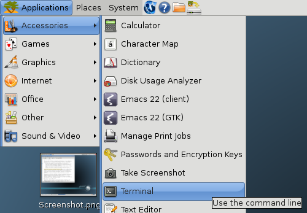
In KDE you choose K Menu -> System -> Terminal; in Xfce you choose
Xfce Menu -> System -> Terminal.
Wherever it's located, you can almost certainly find a terminal
program.
When you run the terminal program, it just shows a blank window; there's not much in the way of help. You're expected to know what to do--and we'll show you.
The following figure shows the Terminal window opened on the desktop in GNOME.
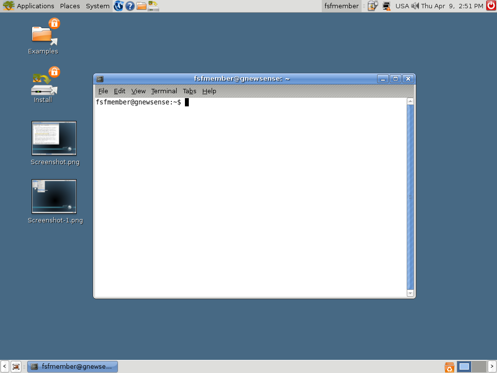
Running an Individual Command
Many graphical interfaces also provide a small dialog box called something like "Run command". It presents a small text area where you can type in a command and press the Return or Enter key.
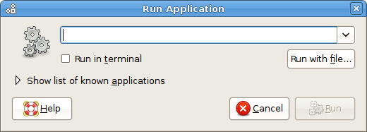
{height="187" width="520"}To invoke this dialog box, try typing the Alt + F2 key
combination, or searching through the menus of applications. You can
use this box as a shortcut to quickly start up a terminal program, as
long as you know the name of a terminal program installed on your
computer. If you are working on an unfamiliar computer and don't even
know the name of the default terminal program, try typing xterm to
start up a no-frills terminal program (no fancy menus allowing choice of
color themes or fonts). If you desperately need these fancy menus,
- in GNOME the default terminal program should be
gnome-terminal; - in KDE it should be
konsole; - in Xfce you'd try with
Terminalor with version specific terminal names: for example in Xfce 4 you should findxfce4-terminal.
How We Show Commands and Output in This Book
There's a common convention in books about the command-line. When you start up a terminal, you see a little message indicating that the terminal is ready to accept your command. This message is called a prompt, and it may be as simple as:
$
After you type your command and press the Return or Enter key, the terminal displays the command's output (if there is any) followed by another prompt. So my earlier interaction would be shown in the book like this:
$ date
Thu Mar 12 17:15:09 EDT 2009
$
You have to know how to interpret examples like the preceding one. All you type here is date. Then press the Return key. The word date in the example is printed in bold to indicate that it's something you type. The rest is output on the terminal. :::
The Parts of a Command
The first word you type on a line is the command you wish to run. In
the "Getting Started" section we saw a call to the date command,
which returned the current date and time.
Arguments
Another command we could use is echo, which displays the specified
information back to the user. This isn't very useful if we don't
actually specify information to display. Fortunately, we can add more
information to a command to modify its behavior; this information
consists of arguments . Luckily, the echo command doesn't argue
back; it just repeats what we ask it:
$ echo foo
foo
In this case, the argument was foo, but there is no need to limit
the number of arguments to one. Every word of the text entered,
excluding the first word, will be considered an additional argument
passed to the command. If we wanted echo to respond with multiple
words, such as foo bar, we could give it multiple arguments:
$ echo foo bar
foo bar
Arguments are normally separated by "white space" (blanks and tabs -- things that show up white on paper). It doesn't matter how many spaces you type, so long as there is at least one. For instance, if you type:
$ echo foo bar
foo bar
with a lot of spaces between the two arguments, the "extra" spaces are
ignored, and the output shows the two arguments separated by a single
space. To tell the command line that the spaces are part of a single
argument, you have to delimit in some way that argument. You can do it
by quoting the entire content of the argument inside double-quote
(") characters:
$ echo "foo bar"
foo bar
As we'll see later, there is more than a way to quote text, and those ways may (or may not) differ in the result, depending on the content of the quoted text.
Options
Revisiting the date command, suppose you actually wanted the UTC
date/time information displayed. For this, date provides the
--utc option. Notice the two initial hyphens. These indicate
arguments that a command checks when it starts and that control its
behavior. The date command checks specially for the --utc
option and says, "OK, I know you're asking for UTC time". This is
different from arguments we invented, as when we issued echo with the
arguments foo bar.
Other than the dashes preceding the word, --utc is entered just
like an argument:
$ date --utc
Tue Mar 24 18:12:44 UTC 2009
Usually, you can shorten these options to a shorter value such as
date -u (the shorter version often has only one hyphen). Short
options are quicker to type (use them when you are typing at the shell),
whereas long options are easier to read (use them in scripts).
Now let's say we wanted to look at yesterday's date instead of
today's. For this we would want to specify the --date argument
(or shortly -d), which takes an argument of its own. The argument
for an option is simply the word following that option. In this case,
the command would be date --date yesterday.
Since options are just arguments, you can combine options together to create more sophisticated behaviour. For instance, to combine the previous two options and get yesterday's date in UTC you would type:
$ date --date yesterday -u
Mon Mar 23 18:16:58 UTC 2009
As you see, there are options that expect to be followed by an argument
(-d, --date) and others that don't take any one (-u, --utc).
Passing a little bit more complex argument to the --date option allows
you to obtain some interesting information, for example whether this
year is a leap year (in which the last day of February is 29). You need
to known what day immediately precedes the 1st of March:
$ date --date "1march yesterday" -u
Sat Feb 28 00:00:00 UTC 2009
The question you posed to date is: if today were the 1st of March of
the current year, what date would it be yesterday? So no, 2009 is not a
leap year. It may be useful to get the weekday of a given date, say the
2009 New Year's Eve:
$ date -d 31dec +%A
Thursday
which is the same as:
$ date --date 31december2009 +%A
Thursday
In this case we passed to date the option -d (--date) followed by
the New Year's Eve date, and then a special argument (that is specific
to the date command). ⁞ Commands may once in a while have strange
esoteric arguments... The date command can accept a format
argument starting with a plus (+). The format %A asks to print the
weekday name of the given date (while %a would have asked to print the
abbreviated weekday: try it!). For now don't worry about these
hermetic details: we'll see how to obtain help from the command line in
learning command details. Let's only nibble a more savory morsel that
combines the echo and date commands:
$ echo "This New Year's Eve falls on a $( date -d 31dec +%A )"
This New Year's Eve falls on a Thursday
Repeating and editing commands
Use the Up-arrow key to retrieve a command you issued before. You can move up and down using arrow keys to get earlier and later commands. The Left-arrow and Right-arrow keys let you move around inside a single command. Combined with the Backspace key, these let you change parts of the command and turn it into a new one. Each time you press the Enter key, you submit the modified command to the terminal and it runs exactly as if you had typed it from scratch. :::
Moving Around
Anyone who has used a graphical interface has moved between folders. A typical view of folders appears in Figure 1, where someone has opened a home directory, then a folder named "my-stuff" under that, and a folder named "music" under that.
Figure 1 : Folders
When you use the command line, folders are called directories. That's just an older term used commonly in computing to refer to collections of things. (Try making an icon that suggests "directory"). Anything you do in a folder on the desktop is reflected in the directory when you're on the command line, and vice versa. The desktop and the command line provide different ways of viewing a directory/folder, and each has advantages and disadvantages.
Files contain your information--whether pictures, text, music, spreadsheet data, or something else--while the directories are containers for files. Directories can also store other directories. You'll be much more comfortable with the command line once you can move around directories, view them, create and remove them, and so on.
Directories are organized, in turn, into filesystems. Your hard disk has one type of filesystem, a CD-ROM or DVD has another, a USB mass storage device has yet another, and so on. That's why a CD-ROM, DVD, or USB device shows up as something special on the desktop when you insert it. Luckily, you don't have to worry much about the differences because both the desktop and the terminal can hide the differences. But sometimes in this book we'll talk about the information a filesystem has about your files.
The "first" directory is called the root and is represented by the name / (just a forward slash). You can think of all the directories and files on the system as a tree that grows upside-down from this root (Figure 2):
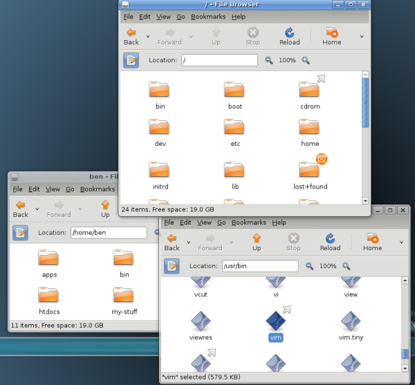
{height="557" width="600"}Figure 2 : Root Directory
Absolute and relative paths
Every file and directory in the system has an "address" called its absolute path or sometimes just its path. It describes the route you have to follow starting from the root that would take you to that particular file or directory.
For example, suppose you like the vim editor that we'll introduce in a
later chapter, and are told you can start it by running the command
/usr/bin/vim. This point underlines what we said in an earlier
chapter: commands are just executable files. So the vim editor is a file
with the path /usr/bin/vim, and if you run that command /usr/bin/vim
you will execute the editor. As you can see from these examples, the
slash / is also used as a separator between directories.
Can you find /usr/bin/vim in Figure 2? The pathname can be interpreted as follows:
- Start at the root (/) directory.
- Move from / down to a directory named usr.
<!-- -->
- Move from usr down to a directory named bin.
- vim is located in that directory.
You are just getting used to the command line, and it may feel odd to be typing while reading this book. If you feel any confusion in this section, try scribbling the directory tree in Figure 2 on paper. Draw arrows on the paper as you run the commands in this section, to help orient you to where you are.
Note that you can't tell whether something is a file or a directory just by looking at its path.
When you work with the command line you will be always working "in" a
directory. You can find the path of this directory using the command
pwd (print working directory), like this:
$ pwd
/home/ben
You can see that pwd prints an absolute path. If you want to switch
your working directory you can use the command cd (change directory)
followed by an argument which points to the target directory:
$ cd /
You just changed your working directory to the root of the filesystem! If you want to return to the previous directory, you can enter the command:
$ cd /home/ben
As an alternative, you can "work your way" back to /home/ben using relative paths. They are called that because they are specified "in relation" to your current working directory. If you go back to the root directory, you could enter the following commands:
$ cd /
$ cd home
$ cd ben
$ pwd
/home/ben
The first command changes your current working directory to the root. The second changes to home, relative to /, making your current working directory /home. The third command changes it to ben, relative to /home, landing you in /home/ben.
Good to be back home
Every user in the system has a directory assigned to him or her, called the home directory. No matter what your current working directory is, you can quickly return to your home directory like this:
$ cd
That is, enter the cd command without any arguments.
All your files and preferences are stored in your home directory (or its subdirectories). Every user of your system with a login account gets her own home directory. Home directories are usually named the same as users' login names, and are usually found in /home, although a few systems have them in /usr/home. When you start your terminal, it will place you in your home directory.
There's a special shortcut to refer to your home directory, namely the symbol \~ (usually called a tilde, and found near the very left top of most keyboards). You can use it as part of more complex path expressions, and it will always refer to your home directory. For example, ~/Desktop refers to the directory called Desktop that usually exists within your home directory.
The . and .. directories
The entries . and .. are special and they exist in every directory, even the root directory itself (/). The first one is a shorthand for "this directory" while the latter is a shorthand for "the parent directory of this directory." You can use them as a relative path, and you can try and see what happens when you do this:
$ pwd
/usr/bin
$ cd .
$ pwd
/usr/bin
If vim is in /usr/bin, at this point you could run it by typing the relative path:
$ ./vim
Continuing from the previous example, you can do this:
$ cd ..
$ pwd
/usr
Since they are actual entries in the filesystem, you can use them as part of more complex paths, for example:
$ cd /usr/bin
$ pwd
/usr/bin
$ cd ../lib
$ pwd
/usr/lib
$ cd ../..
$ pwd
/
$ cd home
$ pwd
/home
$ cd ../usr/bin
$ pwd
/usr/bin
The parent directory of the root directory, /.., is root itself.
Try moving around your computer on the command line and you will soon get used to it! :::
Basic commands
By now you have some basic knowledge about directories and files and you can interact with the command line interface. We can learn some of the commands you'll be using many times each day.
ls
The first thing you likely need to know before you can start creating
and making changes to files is what's already there? With a
graphical interface you'd do this by opening a folder and inspecting
its contents. From the command line you use the program ls instead to
list a folder's contents.
$ ls
Desktop Documents Music Photos
By default, ls will use a very compact output format. Many terminals
show the files and subdirectories in different colors that represent
different file types. Regular files don't have special coloring
applied to their names. Some file types, like JPEG or PNG images, or
tar and ZIP files, are usually colored differently, and the same is true
for programs that you can run and for directories. Try ls for
yourself and compare the icons and emblems your graphical file manager
uses with the colors that ls applies on the command line. If the output
isn't colored, you can call ls with the option --color:
$ ls --color
man, info & apropos
You can learn about options and arguments using another program called
man (man is short for manual) like this:
$ man ls
Here, man is being asked to bring up the manual page for ls. You can
use the arrow keys to scroll up and down in the screen that appears and
you can close it using the q key (for quit).
An alternative to obtain a comprehensive user documentation for a given
program is to invoke info instead of man:
$ info ls
This is particularly effective to learn how to use complex GNU
programs. You can also browse the info documentation inside the
editor Emacs, which greatly improves its readability. But you should be
ready to take your first step into the larger world of Emacs. You may
do so by invoking:
$ emacs -f info-standalone
that should display the Info main menu inside Emacs (if this does not
work, try invoking emacs without arguments and then type Alt + x
info, i.e. by depressing the Alt key, then pressing the x key,
then releasing both keys and finally typing info followed by the
Return or Enter key). If you type then m ls, the
interactive Info documentation for ls will be loaded inside Emacs. In
the standalone mode, the q key will quit the documentation, as usual
with man and info.
Ok, now you know how to learn about using programs yourself. If you
don't know what something is or how to use it, the first place to look
is its manual and information pages. If you don't know the name of
what you want to do, the apropos command can help. Let's say you
want to rename files but you don't know what command does that. Try
apropos with some word that is related to what you want, like this:
$ apropos rename
...
mv (1) - move (rename) files
prename (1) - renames multiple files
rename (2) - change the name or location of a file
...
Here, apropos searches the manual pages that man knows about and
prints commands it thinks are related to renaming. On your computer
this command might (and probably will) display more information but
it's very likely to include the entries shown.
Note how the program names include a number besides them. That number
is called their section, and most programs that you can use from the
command line will be in section 1. You can pass apropos an option to
display results from section 1 manuals only, like this:
$ apropos -s 1 rename
...
mv (1) - move (rename) files
prename (1) - renames multiple files
...
At this stage, the section number isn't terribly important. Just know
that section 1 manual pages are the ones that apply to programs you use
on the command line. To see a list of the other sections, look up the
manual page for man using man man.
mv
Looking at the results from apropos, that mv program looks
interesting. You can use it like this:
$ mv oldname newname
Depending on your system configuration, you may not be warned when
renaming a file will overwrite an existing file whose name happens to be
newname. So, as a safe-guard, always use -i' option when issuingmv` like this:
$ mv -i oldname newname
Just as the description provided by apropos suggests, this program
moves files. If the last argument happens to be an existing
directory, mv will move the file to that directory instead of renaming
it. Because of this, you can provide mv more than two arguments:
$ mv one_file another_file a_third_file ~/stuff
If ~/stuff exists, then mv will move the files there. If it
doesn't exist, it will produce an error message, like this:
$ mv one_file another_file a_third_file stuff
mv: target 'stuff' is not a directory
mkdir
How do you create a directory, anyway? Use the mkdir command:
$ mkdir ~/stuff
And how do you remove it? With the rmdir command:
$ rmdir ~/stuff
If you wish to create a subdirectory (say the directory bar) inside another directory (say the directory foo) but you are not sure whether this one exists or not, you can ensure to create the subdirectory and (if needed) its parent directory without raising errors by typing:
$ mkdir -p ~/foo/bar
This will work even for nested sub-sub-...-directories.
If the directory you wish to remove is not empty, rmdir will produce
an error message and will not remove it. If you want to remove a
directory that contains files, you have to empty it first. To see how
this is done, we will need to create a directory and put some files in
it first. These files we can remove safely later. Let's start by
creating a directory called practice in your home and change the
current working directory there:
$ mkdir ~/practice
$ cd ~/practice
cp, rm & rmdir
Now let's copy some files there using the program cp. We are going
to use some files that are very likely to exist on your computer, so the
following commands should work for you:
$ cp /etc/fstab /etc/hosts /etc/issue /etc/motd .
$ ls
fstab hosts issue motd
Don't forget the dot at the end of the line! Remember it means "this
directory" and being the last argument passed to cp after a list of
files, it represents the directory in which to copy them. If that list
is very long, you'd better learn using globbing (expanding file name
patterns containing wildcard characters into sets of existing file
names) or some other tricky ways to avoid wasting your time in typing
file names. One trick can help when dealing with the copy of an entire
directory content. Passing to cp the option -R you can recursively
copy all the files and subdirectories from a given directory to the
destination:
$ cp -R . ~/foo
$ ls ~/foo
bar fstab hosts issue motd
$ cp -R . ~/foo/bar
$ ls -R ~/
~/foo:
bar fstab hosts issue motd
~/foo/bar:
fstab hosts issue motd
In this case the current directory has no subdirectories so only files
were copied. As you can see, the option -R can be passed even to ls
to list recursively the content of a given directory and of its
subdirectories.
Now, if you go back to your home and try to remove the directory called
practice, rmdir will produce an error message:
$ cd ..
$ rmdir practice
rmdir: failed to remove 'practice': Directory not empty
You can use the program rm to remove the files first, like this:
$ rm practice/fstab practice/hosts practice/issue practice/motd
And now you can try removing the directory again:
$ rmdir practice
And now it works, without showing any output.
But what happens if your directories have directories inside that also
have files, you could be there for weeks making sure each folder is
empty! The rm command solves this problem through the amazing option
-R, which as usual stands for "recursive". In the following
example, the command fails because foo is not a plain file:
$ rm ~/foo/
rm: cannot remove `~/foo/`: Is a directory
So maybe you try rmdir, but that fails because foo has something
else under it:
$ rmdir ~/foo
rmdir: ~/foo: Directory not empty
So you use rm -R, which succeeds and does not produce a message.
$ rm -R ~/foo/
So when you have a big directory, you don't have to go and empty every subdirectory.
But be warned that -R is a very powerful argument and you may lose
data you wanted to keep!
cat & less
You don't need an editor to view the contents of a file. What you need
is just to display it. The cat program fits the bill here:
$ cat myspeech.txt
Friends, Romans, Countrymen! Lend me your ears!
Here, cat just opens the file myspeech.txt and prints the entire
file to your screen, as fast as it can. However if the file is really
long, the contents will go by very quickly, and when cat is done, all
you will see are the last few lines of the file. To just view the
contents of a long file (or any text file) you can use the less
program:
$ less myspeech.txt
Just as with using man, use the arrow keys to navigate, and press
q to quit.
:::
More about redirection
How do pipes work? They use three communication channels provided to every executing command.
stdin (standard input) by default is what we type on the keyboard. We can use "<" with a filename to make a program take input from a file.
stdout (standard output) by default is printed on your computer screen. We can use ">" with a filename to send that to a file, overwriting whatever is there, or we can use ">>" to append standard output to the end of the file.
stderr (standard error) is an alternative kind of output. Programs use it to send error messages. This can be useful because you might want to see error messages on the terminal even if you redirect output to a file. Here's an example:
$ ls *.bak > listfile
ls: *.bak: No such file or directory
Here, we wanted a list of all files ending in .bak. But no such files
exist in this directory. If ls sent its error message to standard
output (which in this case has been directed to a file), we wouldn't
know that there is a problem without looking at the content of
listfile. But because ls sent its message to standard error, we see
it. The error message starts with the name of the program (ls)
followed by a colon and the actual message.
A pipe simply redirects the standard output of the first program to the standard input of the second:
$ ls *.bak | more
Sometimes, we want to direct the output of a command to a file, but we
also want to see the output as the program runs. The tee command does
just that:
$ ls -lR / | tee allMyFiles
provides a complete, detailed list of your file system, saved to
allMyFiles. This takes some time to run; tee saves you from staring
at a lifeless screen, wondering whether any thing's happening.
Each program can open a lot of files, and each has a number called a file descriptor that is meaningful only within that program. The first three numbers are always reserved for the file descriptors we just described.
stdin 0 stdout 1 stderr 2
Redirecting stderr
When we redirect stdin as we did above, error messages still go to the screen. For example
$ ls /nosuchplace > /dev/null
ls: /nosuchplace: No such file or directory
$
To redirect stderr we have to use the more general form of redirection, which uses the file numbers mentioned in the previous section, and looks like this.
$ ls /nosuchplace 2>/tmp/errors
$
This sends the error message sent to file number 2 (stderr) into the file /tmp/errors.
Now we can introduce a more complex redirection, which redirects standard output and standard error to the same file:
$ ls *.bak > listfile 2>&1
The & in that command has nothing to do with putting a command in the background. The & here must directly follow the > character, and it sends file number 2 onto file number 1.
Or in the case of a pipe, put this before the pipe:
$ ls *.bak 2>&1 | more
Adding more descriptors
Sometimes it is convenient to keep other files open and add to them in
dribs and drabs. You can do this with redirection and exec.
$ exec 3>/tmp/thirdfile
$ exec 4>/tmp/fourthfile
$ echo drib >&3
$ echo drab >&4
$ echo another drib >&3
$ echo another drab >&4
$ exec 3>&-
$ exec 4>&-
The first two lines open connections to two more file descriptors, 3 and
4. We can then echo text onto them, redirect programs into them, etc.
using >&3 or >&4. Finally, we close them with the 3>&- and 4>&-
syntax.
:::
All That Typing...
So, all this typing has got to stop being fun at some point. Fortunately, the command line offers a number of ways to make your work more efficient.
Auto Completion
Every keyboard has a Tab key, and its a very useful thing to have in the terminal. You might have used this keystroke before to indent words in a word processor. You can still do this in GNU/Linux word processors, but when you use Tab in the GNU/Linux terminal it becomes such a time saver that when you master it you will be using it all the time.
Essentially, the Tab is an auto-complete command. If, for example, I
want to move the file 'dsjkdshdsdsjhds_ddsjw22.txt' somewhere with the
mv command I can either type out every letter of the stupid filename,
or I can type mv (for 'move') followed by the first few letters of
the filename and press Tab. The rest of the filename will be
automagically filled in. If the filename is not filled in it means that
there are several files (or directories) that start with those first few
letters I typed. To remedy this I could type a few more letters of the
filename and press Tab again, or to help me out I could press
Tab twice and it will give me a list of files that start with those
letters.
You can also use Tab to auto-complete command names.
Tab is your friend, use it a lot.
Copy and Paste
Just because you are working on the command line doesn't mean you can't use some of the conveniences you are used to in the GUI. While cut and paste may work a little differently here from its behavior in other operating systems, you'll soon find it very intuitive.
Copying text is as simple as highlighting the text you wish to copy by holding down the left mouse button and highlighting the text as you are probably already used to doing. Or, left-click 2 times to select a word or 3 times to select a line.
Pasting text The highlighted text that you just copied is held in the clipboard until you paste it where your cursor is by clicking the middle (wheel) mouse button.
Note : if your mouse only has two buttons, pressing both together will be recognized as a "middle button" press.
Anyway, it works like that in a non-graphical terminal. You may find
that it is not quite like this on the desktop. So it may be a good idea
to log in a text session. Use <ctrl><alt><F1> to get
out of the desktop.
Try it! Select the paragraph below with the left mouse button, open a new virtual terminal, and paste the text with the middle mouse button.
echo "This is pasted text."
After you see the text in the terminal, press the Enter key and the
echo command will repeat the text between the quotes on the command
line.
Note : If you are copying text from a web page, sometimes the punctuation isn't handled properly. You might actually copy some unseen formatting along with the text, which will break the syntax of the command you are copying.
History
It is also possible to use the up and down arrows on the keyboard to navigate back and forwards through the history of the commands you have typed. When you navigate to an earlier command this way, it is then just necessary to press the Return or Enter key and the command will be re-executed. You can edit it first to make it do something different. :::
The Superuser (Root)
Some parts of the computer system are thought to require special
protection (because they do). If somebody can change the basic cat or
less command, for instance, they could cause you to corrupt your own
files. So certain commands can be run and certain files can be accessed
only by a user logged in with special privileges called superuser or
root privileges.
In the days when computer systems cost hundreds of thousands of dollars and were shared by hundreds of people, root was assigned to an actual person (or a small group) who constituted a kind of priesthood. Nowadays every owner of a PC can execute superuser commands (this is not always true on mobile devices, though). There is still a user account on each GNU/Linux system called root. This allows the system to make this user the owner of sensitive system files.
The root user, incidentally, has nothing to do with the root directory (the / directory) in the filesystem.
Superuser commands are powerful and must be used carefully, but their use is quite common. For instance, whenever a desktop user installs software, he or she must become superuser for a few minutes.
The sudo Command
On many modern systems, whenever you want to enter a superuser command,
you just precede it with sudo:
$ sudo rm -r /junk_directory
You are then prompted for your password, so nobody walking up casually to your system could execute a dangerous command. The system keeps your password around for a while, so you can enter further superuser commands without the bother of re-entering the password.
Systems also provide a su command that logs you in as superuser and
gives you a new shell prompt. Not all systems allow users to use it,
though, because you can get carried away, start doing everyday work as
superuser --and suddenly realize you've trashed your system through a
typo. It is much safer to do your home system administration using
sudo.
If other people share your system and you want to give someone superuser privileges, for this you need to know a little more about System Administration. :::
Redirection
Output redirection is one of the very powerful, and easily misunderstood, parts of the shell. To decrease misunderstandings, we'll keep to the basics.
The > operator (an "operator" is a symbol like +,-,<,> that
represents a specific action) is for redirecting output. In a very
simple example, if you want to list the files in a directory, you type
ls. That output goes to your screen. If you want that list instead
to go to a file, however, you'd do something like this:
$ ls > my-file-list
The file my-file-list now contains a list of all of the files, directories, links and other things in the current working directory with names that do not start with '.'. (Note that the shell creates, if necessary, the files used for redirection before executing the command, so the file my-file-list wil also be included in your list.)
The > operator is a "clobbering" operator -- if you are outputting to an existing file, it will overwrite the old contents. Sometimes, especially if you are keeping a logfile, what you want is the >> operator. It works the same way as the > operator, except that it appends to the end of an existing file. (If the file doesn't yet exist, it creates it.)
There are other places you can redirect output to, like device special files such as terminals, or /dev/null, which is an infinitely big empty bucket (or more accurately it just ignores all input). If you have a program that you know will produce voluminous output you don't care about, you could do this:
$ bigprogram > /dev/null
The program will execute normally, but you won't see its normal output. (You would, however, see any of its error output; more detail below under File Descriptors).
The < operator is for redirecting input. Most programs that would expect input from your terminal are happy to accept it from another source instead, such as an existing file.
For example, if you wish to email the contents of myfile.txt to joe you could do this:
$ mail joe < myfile.txt
The redirection operators are particularly relevant for jobs running in the background. When working with a graphical interface, you are already familiar with the concept of switching windows by, for example, minimizing the current window that is being engaged in playing musics and restoring another window to resume browsing the Internet. Such a situation also happens when you are working with a command-line interface. However, instead of minimizing the command to play your music files, you run it in background by appending an ampersand (&) at the end of the command like this:
$ ogg123 *.ogg &
Alas, any output it produces like announcing a new track along with its
title and description goes to your terminal as usual cluttering your
text-based Internet browser's screen. So, you may want to avoid it.
Many programs have a silent mode to suppress the normal output. Usually
this mode can be enabled using the options -q or --quiet, but this
is not a general convention and you should read the man or info
documentation before relying on these options. If you want to be sure
avoiding any output irrespective of gentle program options, you can
easily do so by redirecting the output to a file. For instance, the
following command places the output of ogg123 into /dev/null because
you do not care about any track announcement as long as the musics keep
playing and any error messages into music_err so that you can easily
find out why the musics suddenly stop playing. This way, no output can
confuse you by appearing at the terminal and you can always have a look
at the result at a later time by doing something like cat music_err:
$ ogg123 *.ogg >/dev/null 2>music_err &
A program running in the background cannot accept input from the terminal. So if you mistakenly put such a program in the background (and don't redirect input from a file through the < operator), it will get stuck waiting when it has to accept input. :::
Cheaper by the dozen
After getting used to the command line, you will start looking for ways to do more in less time. One of the easiest ways to achieve that is to work on multiple files at the same time, so that instead of:
$ rm this
$ rm that
$ rm here
$ rm there
you just remove all those files with one command. Many commands,
including rm, let you simply specify all the files you want to delete
as arguments in one go:
$ rm this that here there
Still, there has to be a better way!
Globbing
File globbing is the shell's way of dealing with multiple files with the fewest characters possible. The shell treats certain characters as codes that you can use to specify groups of things you want the commands to affect. These characters are commonly called "wildcards" because they're like a card in a game that the players have designated to represent anything you want.
The "*" Wildcard
Imagine a directory of files:
$ ls
here that there this
that you want to delete. A tedious job can be turned simple by using the * or asterisk wildcard.
$ rm *
When used by itself, the asterisk wildcard refers to all the items in the directory except for those with names starting with ".". We say that the shell expands the wildcard. Knowing what's in the directory, the shell substitutes those filenames for the asterisk and effectively executes the following command:
$ rm here that there this
You can combine * with other characters, however, to make it selective.
$ rm t*
$ ls
here
What happened here? The shell looked at "t" first and then expanded the asterisk to cover all the files that begin with "t". If you had requested "h*" instead, the shell would have removed any file that started with an "h". Let's make the directory like it was and then remove the "h" files:
$ touch that there this
$ rm h*
$ ls
that there this
The asterisk wildcard can be placed anywhere within a word. Let's
switch to an ls command because it's easier to see what's happening
with wildcards:
$ ls th*re
there
By switching from rm to ls we see an important aspect of wildcard:
you can use them with any command, because the shell interprets them
before it even invokes the command. In fact, you can't issue a command
without taking into account the behavior of wildcards, because
they're a feature of the shell. (Luckily, you're not likely to ever
have to deal with a filename that contains a real asterisk.)
Multiple asterisks can also be used together. For instance, in this way you can find filenames where the middle of a series is the same, but they start and end differently. Let's try it on the original four files:
$ ls *i*
this
People often use the asterisk to remove files that are all of one type. For instance, if you've been working with a lot of photos and want to clean up files ending in .jpg when you're finished, you can remove all the ones in the current directly as follows:
$ rm *.jpg
Suppose you have some files ending in .jpg and some ending in .jpeg. The asterisk still makes clean-up easy:
$ ls *.jp*g
And suppose the JPEG files are scattered among several subdirectories. You have directories named photos1, photos2, photos3, and so forth, each containing JPEGs you want to remove. A wildcard can help you list all the contents of those subdirectories:
$ ls photos*
photos1:
centraal_station.jpg nieuwe_kerk.jpg
photos2:
ica.jpeg sanders_theater.jpeg
photos3:
bayeux_cathedral.jpeg rouen_cathedral.jpeg travel.odt
And you can specify a directory along with the filenames you remove:
$ rm photos*/*.jp*g
$ ls photos*
photos1:
photos2:
photos3:
travel.odt
Only the travel.odt file remains (because it doesn't match ".jp*g") as a record of all the trips you've taken.
There is, however, one limit to the asterisk wildcard. By default, it
will not match any hidden files (those with filenames that start with a
dot, you need to ls -a to see these).
$ ls -a
.
..
.hidden
this
that
here
there
$ rm *
$ ls -a
.
..
.hidden
If you want those hidden files deleted by a wildcard it is necessary to append a dot to the front of the wildcard. Note that normal files (those that are not hidden/do not start with a dot) will not be deleted when you do this:
$ ls -a
.
..
.hidden
here
$ rm .*
$ ls -a
.
..
here
Finally, it's important to note that the asterisk can also match nothing when appropriate, as seen in the following example:
$ ls task*
task taskA taskB taskXY
This is because the asterisk matches zero or more occurrences. So, as in this example, "task*" matches any filename that starts with "task" even if it only consists of just "task".
CAUTION: When you use just an asterisk ("") with rm*, and
basically any other command, it is always a good idea to put an option
terminator ("--") before the wildcard like this:
$ rm -- *
Take this case for example:
$ ls
-r directory1 directory2 file1.txt
$ rm *
Normally, rm will not remove sub-directories and their contents,
however, in this case everything in the directory will be removed even
the sub-directories. This is because the asterisk("") is expanded to
"-r directory1 directory2 file1.txt". Although "-r" is a filename,
rm will confuse it as an option and think it has been told to
delete the directories and their contents as well. Using an the option
terminator ("--") will prevent rm* from treating anything
following the terminator as an option. Therefore, generally it is a good
idea to always use an option terminator after typing a command and its
options, if there is any, to prevent the command from treating a
filename as an option.
The "?" Wildcard
The "?" or question mark wildcard is very similar to the asterisk wildcard. The crucial difference is that the question mark wildcard takes the place of only one character.
$ ls task*
task taskA taskB taskXY
$ ls task?
taskA taskB
$ ls task??
taskXY
As we've already seen, the asterisk matches all the files beginning with "task". A single question mark matches files that have a single character after "task". The double question mark requires exactly two characters in that position.
The "[ ]" Wildcards
The square brackets wildcards can get even more specific, denoting a
ranges of characters.The following ls command includes a -1 (the
digit "one") option, which means "list one entry on each line." This
makes it easier to see how the files in this example differ.
$ ls -1
file_1
file_2
file_3
file_a
file_b
file_c
By using the square brackets, you can remove specific files without typing every name completely.
$ rm file_[13ac]
$ ls -1
file_2
file_b
Furthermore, within the square brackets, the order of the characters doesn't matter.
Combining square brackets with a hyphen, you can also do ranges of files. Let's start with a directory containing lots of files ending in numbers:
$ ls
file_1
file_2
file_3
...
file_9
At first it might be tempting to use the asterisk wildcard here. However, what if we need to remove only files 2-6? We could list each suffix in the brackets, but you would still have to type five numbers. Fortunately, there is a much easier way.
$ rm file_[2-6]
Now the only files left are files 1 and 7-9. By using the dash between a set of numerals in the square brackets, you make the shell expand the pattern by creating a name with every number between the starting value to the left of the dash and the end value to the right.
Ranges aren't just for numbers. They can also use letters.
$ ls -1
file_a
file_b
file_c
file_d
$ rm file_[a-c]
$ ls -1
file_d
Both letters and ranges can be combined into the same instance of square brackets.
$ ls -1
file_a
file_b
file_c
file_1
file_2
$ rm file_[a-c12]
$ ls
Character groups can be inverted by prefixing them with the ^ (caret) character:
$ ls -1
file_a
file_b
file_c
file_d
file_1
file_2
$ ls -1 file_[^c-z2-9]
file_a
file_b
file_1
CAUTION: Ranges can, at times, be tricky things. For one, their order can be affected by the current locale settings (in some locales [A-C] could mean the same as [ABCabc], while in others it could be equivalent to [ABC]). A good rule of thumb is to always know which files you are working with. You can do this by simply substituting echo or ls for whatever command you intend to run, such as:
$ ls -1 file[A-b]
fileA
fileB
filea
fileb
This allows you to ensure the pattern matches the files you want to work with.
Brace Expansion
We've seen the ability to get a range of characters or letters that fall in a single digit range (0-9 in our examples) but what about when you need to match a range of files that uses double or even triple digits?
$ ls -1
file_1
file_2
file_3
...
file_78
$ rm file_[1-20]
$ ls -1
file_3
...
file_78
Since the brackets glob can only interpret single character ranges it interprets, "1-20" not as a range but as the characters: "1", "-", "2", and "0". Causing only "file_1" and "file_2" to be deleted because they are the only ones that match. If you want to access ranges larger than 0-9, you have to using Bash's brace expansion, "{start..end}".
$ rm file_{1..20}
In a brace range the double dot is the delimiter instead of a dash.
Braces can also be used when you need to get a series of files that have a common pattern but subtle differences. Such as with:
$ ls
file.txt
file.pdf
file.pl
file.odf
If you just wanted to delete the pdf, odf, and txt files you could specify a comma separated list of strings in a brace pair:
$ rm file.{txt,pdf,odf}
$ ls
file.pl
Globbing When No File Matches
Suppose you specify a wildcard and the shell can't find any matching filename:
$ ls -1
file_a
file_b
file_c
file_d
$ rm file?
rm: cannot remove `file?': No such file or directory
When there is no file to match a pattern, the shell passes the wildcard
to the program unexpanded. That's why you get an error message from
the rm program, not from the shell.
Disabling A Wildcard
Okay, we know the shell will pass a wildcard as an option to a program when it can't find a file, but what do we do when we want to send a character that also happens to be a wildcard to our program? Here's a common example: we want to search a file for every occurrence of an asterisk.
$ ls
2file
*file
*?****[a-b]
Now we happen to want *file, but we get:
*file 2file
Why? Because the asterisk is a wildcard, the shell expanded it before
sending it to ls. So after expansion, the command would look like:
$ ls *file 2file
If we want ls to find an asterisk something different is in order.
The "\", or backslash, tells the shell to treat the following character as a normal character and do no expansion.
$ ls \*file
*file
Because the asterisk is the next character after the backslash, the
shell sends the asterisk to ls unmodified. In other words: the
backslash escapes the asterisk.
The backslash modifier works well when we have only one wildcard
character than we want to pass to a program, but what if we wanted to
pass a string like ?[a-b]* with lots of characters that
would normally be interpreted as wildcards? If we used backslashes to
escape them, we'd have to mark every single character. A short string
would end up turning into: \*\*\*\?\*\*\*\*\[a-b\]*\*.
Instead of doubling our amount of typing, we can use a pair of single
quotes.
$ ls '*?****[a-b]'
*?****[a-b]
Any string encased in single quotes will not be modified by the shell, even when it\'s filled with wildcards. However, you cannot type a single quote within the single quotes like this:
$ ls '*?***'*[a-b]'
So, if you happen to have a file whose name has some single quotes in it like this:
*?*'**'*[a-b]
There is no other way but to escape the single quotes individually like this:
$ ls '*?*'\''**'\''*[a-b]'
Simply to say, replace any occurence of a single quote in the filename with '\'.
\ :::
Searching for Files
When you first get a computer, you tend to place files in just a couple folders or directories. But as your list of files grows, you have to create some subdirectories and spread the files around in order to keep your sanity. Eventually, you forget where files are. \"Where did I store those photos I took in Normandy?\"
You could run ls -R, as in the following section, and start running
your finger down the screen, but why? Computers are supposed to be about
automation. Let the computer figure out where the file is.
If you know your file is named \"somefile\", telling the computer what to do is pretty easy.
$ find . -name somefile -print
./files/somefile
The find command takes more arguments than the other commands we\'ve
seen so far, but if you use it for a while you\'ll find it becomes
natural. Its first argument (the \'.\') tells find where to start
looking: the directory at the top of everything you\'re searching
through. In this case, we\'re telling find to start looking in
whatever directory we\'re in right now.
The -name argument tells it to look for a file named somefile.
Finally, the -print option tells the command to print out on our
screen the location of any file that matches the name it was given.
Wildcards with Find
What if you don\'t remember the name of the file you\'re looking for?
You might only remember that it starts with \"some\". Luckily, find
can handle that too.
$ find . -name 'some*' -print
./dir1/subdir2/files/somefile_other
./some_other_file
./files/somefile
This time it found a few more files than you were after but it still
found the one you wanted. As you can see, the find command can
process wildcards in much the same way the shell can. Here you asked it
to look for anything that starts with the letters \"some\".
The \"*\", \"?\", and \"[ ]\" wildcards can all be used just as they
would be in the shell. However, since find is using the wildcards you
have to make sure they remain unaltered by the shell. To do this you
can surround the name you\'re searching for, and the wildcards it
contains, in single quotes.
Trimming The Search Path
With just a name and a location, find will begin searching through every
directory below its starting point, looking for matches. Depending on
how many subdirectories you have where you\'re searching, find can
take a lot of time to look in places you know don\'t contain the file.
It is possible, however, to control how far find sinks in the
directory tree.
$ find . -maxdepth 1 -name 'some*' -print
./some_other_file
By using the -maxdepth argument we can tell find to go no lower than
the number of directories we specify. A maxdepth of 1 says: don\'t
leave the starting directory. A maxdepth of 3 would allow find to
descend 3 directories from where it started, and so on. It\'s important
to note that -maxdepth should immediately follow the start location,
or find will complain.
Using Criteria
The find command can search for files based on any criteria the
filesystem know about files. For instance, you can search for files
based on:
- When they were last modified or accessed (somebody read them)
- How big they are\
- Who owns them, or what group they are in
- What permissions (read, write, execute) they have
<!-- -->
- What type of file (directory, regular file) they are
and other criteria described in the manual page. Here we\'ll just show a couple popular options.
The -mtime option shows the latest modification time. Suppose you just
can\'t remember anything about a file\'s name, but know that you created
or modified it within the past three days. You can find all the files in
your home directory that were created or modified within the past three
days through:
$ find ~ -mtime -3 -print
Notice the minus sign before the 3, for \"less than.\" If you know you created the file yesterday (between 24 and 48 hours ago), you can search for an exact day:\
$ find ~ -mtime 1 -print
To find files that are more than 30 days old (caution: there will be a lot of these), use a plus sign:
$ find ~ -mtime +30 -print
Perhaps you want to remove old files that are large, before backing up a
directory. Combine -mtime with -size to find these files. The file
has to match all the criteria you specify in order to be printed.\
$ find directory_to_backup -mtime +30 -size +500k -print
We\'ve specified +500k as our -size option. The plus sign means
\"greater than\" and \"500k\" means \"500 kilobytes in size\".\
Using Find To Run a Command on Multiple Files
The find command can do much more powerful things than print filenames.
You can combine it with any other command you want, so that you can
remove files, move them around, look for text in them, and so on. On
those occasions, the find command with its -exec option is just what
you\'ll need.
Because the next example is long, it is divided onto two lines, with a backslash at the end of the first so the shell keeps reading and keeps the two lines as one command. The first line is the same as the command to find old, large files in the previous section.
$ find directory_to_backup -mtime +30 -size +500k -print \
-exec rm {} \;
The -exec option is followed by an rm command, but there are two odd
items after it:
- {} is a special convention in the
-execoption that means \"the current file that was found\" - \; is necessary to tell find what the end of the command is. A
command can have any number of arguments. Think of
-execand \; as surrounding the command you want to execute.
So we find each file, print the name through -print (which we don\'t
have to do, but we\'re curious to see what\'s being removed), and then
remove it in the -exec option.
Clearly, a tiny mistake in a find command could lead to major losses of
data when used with -exec. Test your commands on throw-away files
first!\
Using cp you can see how the bracket pairs can be specified multiple
times, allowing the file\'s name to be easily duplicated.
$ find . -name 'file*' -exec cp {} {}.backup \;
Experiment and practice!\ :::
Piping hot commands
Pipes let programs work together by connecting the output from one to be the input for another. The term \"output\" has a precise meaning here: it is what the program writes to the standard output, via C program statements such as printf or the equivalent, and normally it appears on the terminal screen. And \"input\" is the standard input, usually coming from the keyboard. Pipes are built using a vertical bar (\"|\") as the pipe symbol.
Say you help your eccentric Aunt Hortense manage her private book collection. You have a file named books containing a list of her holdings, one per line, in the format \"author:title\", something like this:
$ cat books
Carroll, Lewis:Through the Looking-Glass
Shakespeare, William:Hamlet
Bartlett, John:Familiar Quotations
Mill, John Stuart:On Nature
London, Jack:John Barleycorn
Bunyan, John:Pilgrim's Progress, The
Defoe, Daniel:Robinson Crusoe
Mill, John Stuart:System of Logic, A
Milton, John:Paradise Lost
Johnson, Samuel:Lives of the Poets
Shakespeare, William:Julius Caesar
Mill, John Stuart:On Liberty
Bunyan, John:Saved by Grace
This is somewhat untidy, as they are in no particular order. But we can
use the sort command to straighten that out:
$ sort books
Bartlett, John:Familiar Quotations
Bunyan, John:Pilgrim's Progress, The
Bunyan, John:Saved by Grace
Carroll, Lewis:Through the Looking-Glass
Defoe, Daniel:Robinson Crusoe
Johnson, Samuel:Lives of the Poets
London, Jack:John Barleycorn
Mill, John Stuart:On Liberty
Mill, John Stuart:On Nature
Mill, John Stuart:System of Logic, A
Milton, John:Paradise Lost
Shakespeare, William:Hamlet
Shakespeare, William:Julius Caesar
Ah, now you have a list nicely sorted by author. How about getting a
list just of authors, without titles? You can do that with the cut
command:
$ cut -d: -f1 books
Carroll, Lewis
Shakespeare, William
Bartlett, John
Mill, John Stuart
London, Jack
Bunyan, John
Defoe, Daniel
Mill, John Stuart
Milton, John
Johnson, Samuel
Shakespeare, William
Mill, John Stuart
Bunyan, John
A little explanation here. The -d option chose a colon as the
delimiter (separator). This tells cut to break up each line wherever a
delimiter appears, and each separate part of the line is called a field.
In our format, the author\'s name appears as the first field, so we have
put a 1 with the -f option to tell cut that we want to see just that
field.
But you\'ll notice the list is unsorted again. Pipelines to the rescue!
$ sort books | cut -d: -f1
Bartlett, John
Bunyan, John
Bunyan, John
Carroll, Lewis
Defoe, Daniel
Johnson, Samuel
London, Jack
Mill, John Stuart
Mill, John Stuart
Mill, John Stuart
Milton, John
Shakespeare, William
Shakespeare, William
Voila! You\'ve taken the alphabetized list, which is the output of the
sort command, and fed it as input to the cut command. Don\'t give
the cut command a filename to use, because you want it to operate on
the text that\'s piped out of the sort command.
Pipes are just that simple--text flows down the pipe from one command to the next.\
How about if you wanted a sorted list of titles instead? Since the title
is the second field, let\'s try using -f2 with the cut command
instead of -f1:
$ sort books | cut -d: -f2
Familiar Quotations
Pilgrim's Progress, The
Saved by Grace
Through the Looking-Glass
Robinson Crusoe
Lives of the Poets
John Barleycorn
On Liberty
On Nature
System of Logic, A
Paradise Lost
Hamlet
Julius Caesar
Oops. What happened? When looking at a pipeline, you need to go left-to-right. In this case, we sorted the file first before extracting the titles. So it dutifully sorted the lines starting with the author at the beginning of each line. To get the titles in the proper order, you need to do the sort after extracting them:
$ cut -d: -f2 books | sort
Familiar Quotations
Hamlet
John Barleycorn
Julius Caesar
Lives of the Poets
On Liberty
On Nature
Paradise Lost
Pilgrim's Progress, The
Robinson Crusoe
Saved by Grace
System of Logic, A
Through the Looking-Glass
Much better. Now this is all very nice, but you may be thinking you could have done these things with a spreadsheet. For simpler tasks, this is probably true. But suppose that Aunt Hortense is in the habit of asking odd questions about her collection. For example, she wants to know how many books she has from each author named John. A spreadsheet or other graphical program may have difficulty handling a request that wasn\'t anticipated by the program\'s authors. But the shell offers us many small, simple commands that can be combined in unforeseen ways to accomplish a complex task.
To find a particular string in a line of text, use the grep command.
Now remember that when you combine commands, they need to go in the
proper order. You can\'t run grep against the file first, because it
will match the title \"John Barleycorn\" in addition to authors named
John. So add it to the end of the pipeline:
$ cut -d: -f1 books | sort | grep "John"
Bartlett, John
Bunyan, John
Bunyan, John
Johnson, Samuel
Mill, John Stuart
Mill, John Stuart
Mill, John Stuart
Milton, John
This gets us close, but you don\'t want to get \"Samuel Johnson\" on the
list and make Aunt Hortense angry. Often when working with grep you
will need to refine the matching text to get exactly what you need.
grep happens to offer a -w option that will let it match \"John\"
only when \"John\" is a complete word, not when it\'s part of
\"Johnson\". But we\'ll solve this particular dilemma by adding a comma
and space on the front of the string to match, so it will match only
when John is a first name:
$ cut -d: -f1 books | sort | grep ", John"
Bartlett, John
Bunyan, John
Bunyan, John
Mill, John Stuart
Mill, John Stuart
Mill, John Stuart
Milton, John
Ah, that\'s better. Now you just need to total up the number of books
for each author. A little command called uniq will work nicely. It
removes duplicate lines (duplicates must be on consecutive lines, so be
sure your text is sorted first), and when used with the -c option also
provides a count:
$ cut -d: -f1 books | sort | grep ", John" | uniq -c
1 Bartlett, John
2 Bunyan, John
3 Mill, John Stuart
1 Milton, John
And there you are! A nicely sorted list of Johns and the number of books from each. For our example set this is a simple job, one you could even do with pencil and paper. But this very same pipeline can be used to process far more data--it won\'t blink even if Aunt Hortense has hundreds of thousands of books stored in the barn.
System administrators often use pipelines like these to deal with log files generated by web and mail servers. Such files can grow to tens or hundreds of megabytes in size, and a command pipeline can be a quick way to generate summary statistics without trying to read through the entire log.
A nice thing about building pipelines is that you can do it one command
at a time, seeing exactly what effect each one has on the output. This
can help you discover when you might need to tweak options or rearrange
the order of commands. For instance, to put the authors in ranking
order, you can just add a sort -nr to the previous pipeline:\
$ cut -d: -f1 books | sort | grep ", John" | uniq -c | sort -nr
3 Mill, John Stuart
2 Bunyan, John
1 Milton, John
1 Bartlett, John
Experiment! :::
Processes
Processes are programs in action. Programs in binary/executable form reside on your disk; when they are executed (run), they are moved into memory and become a process. Each and every program we run is a process.\
Interrupting (CTRL-C)
The kernel delivers signals to processes for many reasons. The SIGINT signal is raised when the user presses the \<ctrl>\<C> key combination. It is delivered to the process that is in the foreground in the currently active terminal. If that process has not set up a response to SIGINT (we say it catches SIGINT), then it will be terminated immediately with possible loss of data (but open files do get closed). Some programs catch SIGINT and use it for a specific purpose. For example, the nano editor responds to it by displaying the current position in the file being edited.\
ps and kill
We can use the ps and top commands to view processes running on our
machine.
The ps command, when you run it without any arguments, displays
processes run by the current user.
$ ps
PID TTY TIME CMD
3922 tty2 00:00:00 su
3923 tty2 00:00:00 sh
3941 pts/0 00:00:00 cat
3942 pts/0 00:00:00 ps
Here we find there are 4 processes that we are running from our terminal. The 4 columns have the following interpretation:
Process ID Terminal CPU Time Program/Command
Each process has an identifier by which the operating system tracks it. This is an integer number that is given to each new process, and is called the PID (for \"process ID\"). The gap between the PID 3923 for sh and the PID 3941 for cat merely shows that somebody started processes on the machine in between the times these two processes started.
The second column in the output of ps specifies the terminal to which
the process is attached or the terminal that controls the process. You
can use the tty command to find out which terminal you are presently
in.
$ tty
/dev/tty2
Now, you may well expect that your machine has a lot more processes than
the ones you see by running a simple ps without arguments. In fact, it
shows only the processes you started from the terminal in which you
issue the command. On a graphical desktop, that command doesn\'t show
the programs you start from menus or by clicking on icons. The system
also runs a lot of its own processes in the background. To see
everything, add the -e option:
$ ps -e
PID TTY TIME CMD
1 ? 00:00:01 init
2 ? 00:00:00 kthreadd
3 ? 00:00:00 migration/0
4 ? 00:00:00 ksoftirqd/0
5 ? 00:00:00 watchdog/0
6 ? 00:00:00 migration/1
7 ? 00:00:00 ksoftirqd/1
8 ? 00:00:00 watchdog/1
9 ? 00:00:00 events/0
10 ? 00:00:00 events/1
11 ? 00:00:00 khelper
44 ? 00:00:00 kblockd/0
45 ? 00:00:00 kblockd/1
.........................................
.........................................
3534 tty1 00:00:00 getty
3535 tty2 00:00:00 login
3536 tty3 00:00:00 getty
3537 tty4 00:00:00 getty
3538 tty5 00:00:00 getty
3539 tty6 00:00:00 getty
In case you want to terminate a process that you started, you can do so
from a terminal using the kill command.
$ kill 3941
Here we provide the PID as the argument. Remember that the kill argument
is non-interactive (it doesn\'t ask for confirmation before starting)
and non-verbose (it doesn\'t tell you what it is doing) by default and
hence must be used carefully. You can kill only your own processes. Also
if the program has truly crashed it may not respond to the instruction
so use the -9 option in that case. That is the signal number for
SIGKILL, and if you are really careful you will type \"kill -s SIGKILL
(pid)\" since it is conceivable that your system has the numbers
assigned differently.\
Processes and jobs (background)
If you want to run something in the background and return control to your terminal, just put an ampersand (\"&\") after the command name.
$ firefox &
[1] 3694
$
The shell prints a brief message and gives you another dollar sign prompt. Firefox is now running (and should pop up a window of its own, because it\'s a graphical program). You can continue to execute other commands in your terminal.
What are the two numbers printed after you put the program in the background? The number in square brackets is a special number assigned to each program you run in the background; it\'s called a job number. In this case, the job number is 1 because we don\'t have any other programs currently running in the background in this shell.
The second number, which is 3694 in this case, is the process number we saw in an earlier section.
To bring your job back in the foreground just type fg. The job takes
over your terminal as commands usually do, until it finishes.
If you have multiple jobs in the background, you can pass the job to the
fg command either as a process number:
$ fg 3694
or as a job number:
$ fg %1
To distinguish the job number from a process number, you must put a percent sign (\"%\") before the job number.\
If you want to run a process in the background that\'s now running in
the foreground, type Ctrl + Z, which suspends the job, then issue
the command bg.
To find out what jobs you\'ve put in the background (and their status),
enter jobs:
$ jobs
[1]- Running firefox &
[2]+ Exit 2 sort > big_file_sorted 2> big_file_err
Firefox is still running, but the second job exited with an error status of 2. :::
Files and Directories
Although you\'re most interested in files in your own folder or directory, it helps to know what else is on your system. In this chapter we\'ll look around a GNU/Linux system.
Here is a list of the most common directories right beneath the root directory (the one whose name is just \"/\"):
/bin basic programs (Programs that are absolutely needed,
shell and commands only)
/boot initialization files (Required to actually boot your computer)
/dev device files (Describe physical stuff like hard disks
and partitions)
/etc configuration files
/home users' home directories
/lib libraries (collections of data and functions) for sytem boot
and running system programs
/media mount points for removable media
/mnt mount points (For system admins who need to temporarily
mount a filesystem)
/opt third-party programs
/proc proc filesystem (Describe processes and status info,
not stored on disk)
/root system administrator's files
/sbin basic administration programs (Like bin, but only
usable by administators)
/srv service-specific files
/sys sys filesystem (Similar to proc, stored in memory
based filesytem: tempfs)
/tmp temporary files (Files kept only a short time depending
on system policy, often in tempfs)
/usr users' programs (Another bin, lib, sbin, plus local,
share, src, and more)
/var variable data preserved between reboots
You don\'t need to know about the directory structure outside your home directory in order to run applications, but this knowledge occasionally comes in handy. Perhaps the most common uses are when you want to change a system-wide configuration file or view log messages. Log files generally contain progress information and error reports from programs, and may reveal the source of problems (bugs, configuration errors, missing or corrupted files) on your system. Many log files are kept in the /var/log directory, but some programs put their log files in hidden directories in the user\'s home directory. An example is \~/.sugar/default/logs.\
Historically, GNU/Linux system configuration was done through editing text files. Today, most popular GNU/Linux systems encourage users to make changes to the system configuration through graphical administration tools. Sometimes however, this is not possible or desirable, and you may find yourself editing the configuration files in a text editor. This is usually trickier, as you need to know where these files are and how to edit them, and in some cases you also need to signal or restart a running program so it will read in your changes. That said, this method has its advantages, such as the ability to configure computers with no graphics capabilities, or configure programs that have no graphical configuration program (or a clumsy and incomplete one).
NOTE: For a full description of the file-system structure of a typical
Linux system, try typing man hier in a terminal. This not only gives a
brief on the above top-level directories, but also gives insight into
why Linux has both a /usr/bin and a /usr/sbin, for instance.\
\ :::
Command History Shortcuts
The shell lets you bring back old commands and re-enter them, making changes if you want. This is one of the easiest and most efficient ways to cut down on typing, because repeated sequences of commands are very common. For instance, in the following sequence we\'re going through various directories, listing what\'s there, deleting files we don\'t want, and saving certain files under different names:
cd Pictures/
ls -l status.log.*
rm status.log.[3-5]
mv status.log.1 status.log.bak
cd ../Documents/
ls -l status.log*
rm status.log.[2-4]
mv status.log.1 status.log.bak
cd ../Videos/
ls -l status.log*
rm status.log.[2-5]
mv status.log.1 status.log.bak
Eventually, if you had to do this kind of clean-up regularly, you would write a script to automate it and perhaps use a cron job to run it at regular intervals. But for now, we\'ll just see how to drastically reduce the amount of typing you need while entering the commands manually.
An earlier chapter showed you how to use arrow keys to move around in
your command history as if you were editing a file. This chapter shows a
more complicated and older method of manipulating the command history.
Sometimes you\'ll find the methods in this chapter easier, so it\'s
worth practicing them. For instance, suppose you know you entered the
mv command you want (or another one very similar to what you want) an
hour ago. Pressing the back arrow repeatedly is a lot more trouble than
recalling the command using the technique in this section.
Recalling a command by a string
The bang operator, named after the ! character (an exclamation point, or more colloquially \"bang\"), allows you to repeat recent commands in your history.\
!string executes the most recent command that starts with string. Thus, to execute the exact same mv command you did before, enter:
!mv
What if you don\'t want the exact same command? What if you want to edit
it slightly before executing it? Or just want to look at what the bang
operator retrieves to make sure that\'s the command you want? You can
retrieve it without executing it by adding :p (for \"print\"):\
!mv:p
We\'ll show you how to edit commands soon.\
Perhaps you issued a lot of mv commands, but you know there\'s a
unique string in the middle of the command you want. Surround the string
with ? characters, as follows:
!?log?
Entering two bangs in a row repeats the last run command. A very useful command history idiom is re-running the last command with superuser privilege:
sudo !!
as we all happen to type commands without the right permissions from time to time.
While running your last command may seem to have limited use, this method can be modified to select only portions of your last command, as we will see later.\
Recalling a command by number
The shell numbers each command as it is executed, in order. If you like
recalling commands by number, you should alter your prompt to include
the number (a later chapter shows you how). You can also look at a list
of commands with their numbers by executing the history command:
$ history
...
502 cd Pictures/
503 ls -l status.log*
504 rm status.log.[3-5]
505 mv status.log.1 status.log.bak
506 cd ../Documents/
507 history
$
Here we\'ve shown only the last few lines of output. If you want to
re-execute the most recent rm command (command number 504), you can do
so by entering:
!504
But the numbers are probably more useful when you think backwards. For
instance, if you remember that you entered the rm command followed by
three more commands, you can re-execute the rm command through:
!-4
That tells the shell, \"start where I am now, count back four commands, and execute the command at that point\".\
Repeating arguments
You\'ll often find yourself reusing portions of a previous command, either because you made a typo, or because you are running a sequence of commands for a certain task. We accomplish this using the bang operator with modifiers.
The three most useful modifiers are: *, !\^, and !\$, which are shortcuts for all, first, and last arguments respectively. Let\'s look at these in order.
\"commandName *\" executes the commandName with any arguments you used on your last command. This maybe useful if you make a spelling mistake. For example, if you typed emasc instead of emacs:
emasc /home/fred/mywork.java /tmp/testme.java
That obviously fails. What you can do now is type:
emacs !*
This executes emacs with the arguments that you last typed on the
command-line. It is equivalent to typing:
emacs /home/fred/mywork.java /tmp/testme.java
\"commandName !\^\" repeats the first argument.
emacs /home/fred/mywork.java /tmp/testme.java
svn commit !^ # equivalent to: svn commit /home/fred/mywork.java
\"commandName !\$\" repeats the last argument.
mv /home/fred/downloads/sample_screen_config /home/fred/.screenrc
emacs !$ # equivalent to: emacs /home/fred/.screenrc
You can use these in conjunction as well. Say you typed:
mv mywork.java mywork.java.backup
when you really meant to make a copy. You can rectify that by running:
cp mywork.java.backup mywork.java
But since you are reusing the arguments in reverse, a useful shortcut would be:
cp !$ !^
For finer-grained control over arguments, you can use the double bang
with the :N modifier to select the Nth argument. This is most useful
when you are running a command with sudo, since your original command
becomes the first argument. The example below demonstrates how to do
it.
sudo cp /etc/apache2/sites-available/siteconfig /home/fred/siteconfig.bak
echo !^ !!:2 # equivalent to echo cp /etc/apache2/sites-available/siteconfig
A range is also possible with !!:M-N.\
Editing arguments
Often you\'ll want to re-execute the previous command, but change one string within it. For instance, suppose you run a command on file1:
$ wc file1
443 1578 9800 file1
Now you want to remove file2, which has a name very close to file1. You can use the last parameter of the previous command through \"!\$\", but alter it as follows:
$ rm !$:s/1/2/
rm file2
That looks a little complicated, so let\'s take apart the argument:
!$ : s/1/2/
The \"!\$\" is followed by a colon and then a \"s\" command, standing for \"substitute\". Following that is the string you want to replace (1) and the string you want to put in its place (2) surrounded by slashes. The shell prints the command the way it interprets your input, then executes it.
Because this kind of substitution is so common, you\'ll be glad to hear there\'s a much simpler way to rerun a command with a minor change. You can change only one string in the command through this syntax:\
$ wc file1
443 1578 9800 file1
$ ^1^2
wc file2
We used a caret (\^), the string we wanted to replace, another caret, and the string we want to put in its place.\
Searching through the Command History
Use the Ctrl + R key combination to perform a \"reverse-i-search\".
For example, if you wanted to use the command you used the last time you
used snort, start by typing Ctrl + R. In the terminal window
you\'ll see:
(reverse-i-search)`':
As you type each letter (s, n, etc.) the shell displays the most recent command that has that string somewhere. When you finish typing \"snort\", you can use Ctrl + R repeatedly to search back through all commands containing \"snort.\" When you find the command you\'re looking for, you can press the right or left arrow keys to place the command on an actual command line so you can edit it, or just press Enter to execute the command.
Sharing Bash History
The Bash shell saves your history so that you can recall commands from earlier sessions. But the history is saved only when you close the terminal. If you happen to be working in two terminals simultaneously, this means you can\'t share commands.
To fix this--if you want the terminal to save each command immediately after its execution--add the following lines to your \~/.bashrc file:
shopt -s histappend
PROMPT_COMMAND='history -a'
Learning these shortcuts can save you a tremendous amount of time so please experiment! :::
Permissions
Your computer system stores a lot of information about files that normally remains hidden as you create and play with the files. One set of file attributes you\'ll run into, though, is permissions. Who\'s able to edit your files? Hopefully not every person who logs in to the system (and many systems are still shared by multiple people nowadays). This section discussion ownership and permissions.
First, let\'s see what the system itself can tell us about its files.
We\'ll execute the familiar ls command with an addition -l (that\'s
the lower-case letter \"L\") option for a long listing:\
$ ls -l
total 72
drwxr-xr-x 2 root root 4096 Oct 5 09:31 bin
drwxr-xr-x 3 root root 4096 Oct 9 21:47 boot
drwxr-xr-x 1 root root 0 Jan 1 1970 dev
...
The first line:\
total 72
displays the total size of all the files together in kilobytes (kB). The rest provides information about the files and directories themselves. This information is grouped into seven columns that can be summarized as follows:
Permissions Links Owner Group Size Date of modification File Name
What can I do? What can others do?
Every file and directory in the system has an owner, belongs to a group, and has a set of permissions associated to it. At the simplest level, these permissions define three access levels, one for the owner of the file, one for the group that the file belongs to, and one for the rest of the world. (Actually, \"world\" just means anyone who has the privileges to log on to the system.)\
Let\'s look back at the output shown previously. The third and fourth columns show the owner (root in this case) and group (root, too). The first column presents the permissions in a very compact fashion, like this:\
drwxr-xr-x
The first character denotes the type of file, the next three characters show the owner permissions, the next three are the group permissions, and the last three are the permissions for the rest of the world.
The following table shows what the first character means. The previous example showed a \"d\" for directory. Some of the characters are quite rare. All you usually have to think about are the regular file and the directory.\
**Character** **Description**
\- regular file\
d directory\
l symbolic link\
b\ block special file\
c\ character special file\
p\ FIFO (named pipe)\
s\ socket\
?\ something else unknown to ls\
\ Permissions are classified into 3 types:
- Read (r): permission to read a file
- Write (w): permission to write to a file
- Execute (x): permission to execute a file
A hyphen (-) marks any permission that is not set.\
A simpler way to see how the permissions column is split up into their own columns is shown below:\
:type : owner : group : restofworld:
:d : rwx : r-x : r-x
If you wish to see the contents of a file, you need read permission. If you wish to modify its contents, you need write permission. If the file is a program and you wish to run it, you need execute permission.
In the case of directories, if you wish to see its contents, you need both read and execute permissions, just read permissions are not enough. If you wish to add or remove files from that directory, you need write permissions.
Going back to the example, let\'s consider the following line:\
drwxr-xr-x 2 root root 4096 Oct 5 09:31 bin
As you now can see, it\'s a directory. How do you figure out what you can actually do with it? Here\'s where you need to look at the user and group assigned to the file. But first things first: who are you?
$ whoami
joe
That command will tell you just that: who you are, the name of your user account. As you can see, you are not root. The user root can see the contents of that directory and can also add files to it, but you are not him. What\'s your group then?
$ id -G -n
joe dialout cdrom floppy audio video plugdev
That\'s the list of groups you belong to. If any of those were root you\'d be able to see the contents of the /bin directory but not add files to it. But you are not part of the root group. The only option left is \"the rest of the world\" and you are included there, so what you can do is just see the contents of the directory.
Let\'s look at another file:
$ ls -l /etc/issue
-rw-r--r-- 1 root root 36 2009-02-26 15:06 /etc/issue
As you can see, it\'s a regular file that root can read and write and users in the root group, whoever they are, can only read. And you, joe, can only read it too.
What about your own stuff? Chances are you have a Desktop directory
in your home directory. We\'ll check its permissions with ls -l,
adding an extra -d option so we see just a line for Desktop and not
the files or directories within it.
$ ls -l -d ~/Desktop
drwxr-xr-x 8 joe joe 4096 2009-03-12 09:27 /home/joe/Desktop
That directory belongs to you! And according to the permissions, you can read the contents and put files there. And other people can only look at its contents.
Setting through chmod
If you wish to change permissions of a file, you need to own it--you
can\'t just go around changing other people\'s stuff. If you own the
file (or directory), you can change its permissions with the chmod
command. There are two ways of specifying the new file\'s permissions
and both have their advantages. Let\'s explore both.\
Create a practice directory, and copy a couple of files there:
$ mkdir ~/practice
$ cd ~/practice
$ cp /etc/issue /etc/motd .
$ ls -l
total 8
-rw-r--r-- 1 joe joe 36 2009-03-21 14:34 issue
-rw-r--r-- 1 joe joe 354 2009-03-21 14:34 motd
Let\'s say you wish to make issue readable and writable by you and your group only and motd readable and writeable by you only. That means the last output needs to look something like this:
$ ls -l
total 8
-rw-rw---- 1 joe joe 36 2009-03-21 14:34 issue
-rw------- 1 joe joe 354 2009-03-21 14:34 motd
You take care of issue like this:
$ chmod u=rw,g=rw,o= issue
That means:
- u=rw: set the user\'s permissions to read/write
- g=rw: set the group\'s permission\'s to read/write
- o=: set the other\'s permissions to nothing
For motd, the command goes like this:
$ chmod u=rw,g=,o= motd
Pretty straightforward, isn\'t it? It\'s also a lot of typing. A shorter version would be:
$ chmod ug=rw,o= issue
$ chmod u=rw,go= motd
That\'s a little bit shorter, but there\'s an even shorter version:
$ chmod 0660 issue
That one needs a little bit of explaining. The numbers express the same permissions as before. If you want to understand how it works, consider the following diagram:\
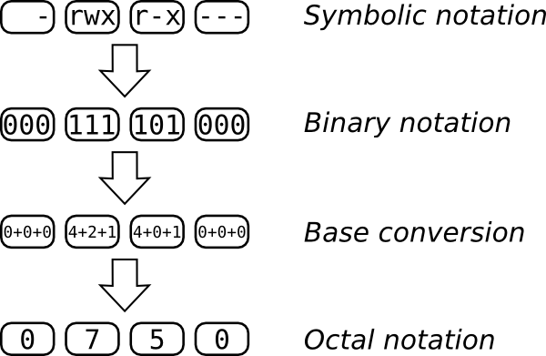
{height="195" width="300"}The top line shows us our goal: a file that its owner can read, write to, and execute, that its group can only read and execute, and that the rest of the world has no access to at all. Each letter in in the symbolic notation corresponds to a bit in the binary representation. If the letter is present, you have a 1 and if it\'s not you have a 0. The first 1 in 111 is 4, the second is 2 and the third is 1. You add all that up and you get 7. If you do the same for the other triplets, you get 0750.
Returning to our previous example, for the file issue, we wish to have the permissions be -rw-rw----, that gives us 0, 4+2, 4+2 and 0, that is 0660. Can you work out the mode (as this is called) for motd? :::
Interactive Editing
Many people, especially beginners, use the arrow keys to move the cursor around the command line. Most people can do that in much less time than it would take them to remember the more powerful but more complicated alternatives that are provided. But some of these methods are worth learning, so we will present them here.
The shell comes with two different sets of key bindings (keyboard shortcuts), inspired by two extremely powerful text editors, Emacs and vi (probably the two most powerful ones that exist). By exploiting the keyboard shortcuts that these bindings offer, command line wizards are able to enter and edit even long command lines in just a fraction of a second. If you take the time to practice with the key bindings that the shell offers, even if they may seem impractical at first, you will very soon be able to do so too.
Note: You will only be able to take full advantage of the Emacs and vi bindings if you know how to type properly (using 10 fingers). If you don\'t, you should learn it as soon as possible. (There are a lot of free sites on the web that can teach you.) It is definitely worth it.There is an application called Klavaro you can use it to learn typing .\
By default, the bash shell uses the Emacs bindings. If you want to try out the vi bindings, enter the following command:
$ set -o vi
You can switch back to the Emacs bindings by entering:
$ set -o emacs
The Emacs and vi bindings are very different, and both take some time to get used to. You should try out both bindings to find the ones that suits you best. This chapter covers the default, Emacs bindings. If you learn vi, you can switch to those bindings and you will find them pretty intuitive.\
Hint: Do not try to learn all shortcuts at once! The human brain isn\'t made for that kind of stuff, so you will forget almost all of them. Rather, we advise you to learn the 4-5 shortcuts that you find most useful and use them regularly -- learning by doing. Later, you can come back to this chapter to pick up more shortcuts. You will soon find yourself whirling across the command line.
The Emacs bindings
The Emacs bindings make heavy use of Ctrl and Alt as modifier keys. Experienced Emacs users usually remap their CapsLock key as Ctrl in order to enter Emacs commands more comfortably (and to avoid repetitive strain injury!). Once you start using the Emacs bindings on a regular basis, we advise you to do the same.
*****************************************************************************************
This space reserved for instruction on remapping the CapsLock key
*******************************************************************************************\
Moving around
The two most basic keystrokes for moving around on the command line in Emacs mode are Ctrl + f and Ctrl + b. They move the cursor one character to the right and to the left, respectively:
Ctrl + f Move forward one character Ctrl + b Move backward one character
Of course, you can do the same cursor movements by using the arrow keys on your keyboard. But as was remarked above, using the Emacs bindings Ctrl + f and Ctrl + b may be more efficient, since your hands do not have to leave the letter block of your keyboard. At the moment, you may not notice the difference in speed (especially if you\'re not a fast typist yet), but once you get more experience in using the command line, you definitely won\'t want to touch the arrow keys again! (IMHO)\
The following table lists some keystrokes which let you navigate the command line even faster:\
Alt + f Move forward one word
Alt + b Move backward one word
Ctrl + a Move to the beginning of the line
Ctrl + e\ Move to the end of the line
Hint: The German word for \"beginning\" is Anfang. Would you ever forget such a strange word? Let\'s hope not, because it can help you remember that Ctrl + a takes you to the beginning of the command line.
By taking advantage of the keystrokes summarized in the table above, you can dramatically speed up your command line editing. If, for example, you have misspelled the first letter of a terribly long filename, the keystroke Alt + b brings the cursor back to the beginning of the word -- making cumbersome characterwise movement of the cursor unnecessary. The home and end keys, if present, provide an alternative to Ctrl + a and Ctrl + e.\
Editing text
Two of the most commonly used editing commands are the following:
Ctrl + t\ Transpose the character before the cursor and the character under/following the cursor\
Alt + t Transpose the word before the cursor and the word under/following the cursor
The two commands take a while to get used to, but both are very useful. While the main use of Ctrl + t is to correct typos, Alt + t is often used to \"drag\" a word forward on the command line. Have a look at the following command line (the underline marks the position of the cursor):
$ echo one two three four
If you press Alt + t in this situation, the word before the cursor (\"one\") is exchanged with the word after the cursor (\"two\"). Try it out! The result should look like this:
$ echo two one three four
You will notice two things. First, the order of the words \"one\" and \"two\" has been reversed. Second, the cursor has moved forward along with the word \"one\". Now, the cool thing about the cursor\'s moving along is that you just need to press Alt + t once more in order to transpose \"one\" with the following word, \"three\":
$ echo two three one four
So, by pressing Alt + t repeatedly, you can \"drag\" forward the word before the cursor until it has reached the end of the command line. (Of course, you can do the same with a single character by using Ctrl + t.)
At first, the elaborate functionality of the two transpose commands may seem a bit confusing. Just play around with them for a while, and you will soon get the hang of it.\
Deleting/killing and reinserting text
Here are some handy commands for deleting/killing text:
Ctrl + d\ Delete the character under the cursor\
Alt + d\ Kill all text from the cursor to the end of the current word
Alt + Backspace\ Kill all text from the cursor to the beginning of the current word
Note that Alt + d and Alt + Backspace do not delete text, but kill it. Killing is different from deleting in that deleted text is gone, but killed text may be brought back to life (the term is \"yanked\") later on by using the following command:
Ctrl + y\ Reinsert (yank) text that was previously killed\
Let\'s see how this works by way of an example:
$ echo one two
Again, the cursor position is indicated by an underline. If you press Alt + Backspace in this situation, the word \"two\" as well as the whitespace after it will be killed, leaving the command line like this:
$ echo one
If you now press Ctrl + y, the killed text is \"yanked\" back into the command line. You can do this several times. If you press Ctrl + y three times, for example, you end up with the following line:\
$ echo one two two two
As you can see, killing text is much like the \"cut\" function of most modern text editors. Note that text which is not killed, but deleted (by pressing Ctrl + d) cannot be reinserted into the command line. The only way to get it back is to use the undo function, which will be introduced below.\
Probably the most useful commands for killing text are the following ones:\
Ctrl + k\ Kill all text from the cursor to the end of the line\
Ctrl + u\ Kill all text from the cursor to the beginning of the line (unix-discard-line)\
As usual, the best way to learn these commands is to experiment with them. You will find that killing and, where necessary, reinserting big stretches of text can save you a lot of time.\
Undoing changes
You can undo the last change that you made by using the following command:
Ctrl + _\ Undo last change\
An alternative way of doing the same thing is to press Ctrl + xu. (Press x and u in turn while holding down Ctrl.)
Navigating the shell\'s history
The shell saves the last commands that you enter in its history. This allows you to get back to previously entered commands, which can save you a lot of typing. Here are the most important commands for navigating the shell\'s command history:
Ctrl + p\ Go to the previous command in the history\
Ctrl + n\ Go to the next command in the history
Ctrl + >\ Go to the end of the history\
Ctrl + r\ Search the history for previously entered commands (reverse-search-history)
Ctrl + g\ Cancel the current history search\
Let\'s see how these commands work by way of a simple example. Open a shell and enter the following commands:
$ echo two
two
$ echo three
three
$ echo four
four
After you have entered these commands, you are left with an empty
command line waiting for your input. Now, press Ctrl + p. You will
notice that the previously entered command appears on your command line:
echo four. If you press Ctrl + p once more, you move \"up\" in the
history even further, so that echo three appears on the command line.
Now, press Ctrl + n, and you will see that you have come back to
echo four: Ctrl + n works exactly like Ctrl + p, but the other
way round. The up and down arrow keys are alternatives to
these.\
After having pressed Ctrl + p and maybe also Ctrl + n a few times, you may want to get back to the command line that you were entering before you started navigating the history. You can do this by pressing Ctrl + >.\
As you can see, the shell\'s history is nothing else but a big list of all recently entered commands. You can move up and down the list by pressing Ctrl + p and Ctrl + n, respectively. And you can press the Enter key at any time in order to execute the currently selected command line.
Since the shell\'s command history is just a big list, it is also
searchable. This is most commonly done by using the command Ctrl +
R. Again, let\'s assume that you have entered the commands echo two,
echo three and echo four. Try pressing Ctrl + R now. You will
notice that a new prompt appears which says something like
\"reverse-i-search\". If you now enter the letter \"t\", you immediately
jump back in history to the last command line containing \"t\", which is
of course echo three. From there, you can use Ctrl + p and
Ctrl + n to navigate the history as explained above. Or you can
modify the search by entering a second letter, let\'s say \"w\". You
then jump to the command echo two, because it is the nearest command
in history containing the letter sequence \"tw\". Or you can just cancel
the search by pressing Ctrl + g.
If you feel a bit lost in using the shell\'s history functions, don\'t worry! If you keep on practicing, you will quickly get into the routine of flipping back and forth in the shell\'s history, avoiding the cumbersome retyping of long command lines.
Interactive editing: an example
The following example is intended to show you how the interactive editing capabilities of the shell can drastically speed up your work. Let\'s suppose you have entered the following command line:
$ echoo ne two three
bash: echoo: command not found
Bash has thrown an error, because the command echoo doesn\'t exist. What you really meant, of course, was echo one two three. You will perhaps be surprised to hear that it takes just five keystrokes to correct the mistake:
- Press Ctrl + p to get the previous history item back on screen, namely the wrongly entered command line.
- Press Ctrl + a to move the cursor to the beginning of the line.
- Press Alt + f to move the cursor forward by one word. The cursor is now located between the wrongly entered words \"echoo\" and \"ne\".
- Press Ctrl + t. You will see that the \"o\" preceding the cursor and the whitespace under the cursor have been transposed: \"echoo ne\" has become \"echo one\".
- Finally, press Enter to execute the corrected command line. :::
Exit status
When you type commands, you can usually tell whether they worked or not. Commands that are unable to do what you asked usually print an error message. This is sufficient if you are typing in each command by hand and looking at the output, but sometimes (for example, if you are writing a script) you want to have your commands react differently when a command fails.
To facilitate this, when a command finishes it returns an exit status. The exit status is not normally displayed; instead it is placed in a variable (a named memory slot) named \"\$?\". The exit status is a number between 0 and 255 (inclusive); zero means success, and any other value means a failure.
One way to see the exit status of a command is to use the echo command
to display it:\
$ echo "this works fine"
this works fine
$ echo $?
0
$ hhhhhh
bash: hhhhhh: command not found
$ echo $?
127
Now we\'ll look at various ways to handle errors.\
if/then
Handling an error is an example of something you do conditionally: if
something happens, then you want to take action. The shell provides
a compound command--a command that runs other commands--called if.
The most basic form is:
if
<command>
then
<commands-if-successful>
fi
We will start with a basic example, then improve it to make it more
useful. After we type if and press the Enter key, the shell knows
we\'re in the middle of a compound command, so it displays a different
prompt (>) to remind us of that.
$ if
> man ls
> then
> echo "You now know more about ls"
> fi
The manual page for ls scrolls by
You now know more about ls
Running this command brings up the manual page for ls. Upon quitting
with the q key, the man command exits successfully and the echo
command runs.
Handling command failure
Adding an else clause allows us to specify what to run on failure:
if
<command>
then
<commands-if-successful>
else
<commands-if-failed>
fi
Let\'s run apropos if the man command fails.
$ if
> man draw
> then
> echo "You now know more about draw"
> else
> apropos draw
> fi
...
list of results for apropos draw
...
This time the man command failed because there is no draw command,
activating the else clause.
&& and ||
The if-then construct is very useful, but rather verbose for chaining together dependent commands. The \"&&\" (and) and \"||\" (or) operators provide a more compact format.
command1 && command2 [&& command3]...
The && operator links two commands together. The second command will run only if the first has an exit status of zero, that is, if the first command was successful. Multiple instances of the && operator can be used on the same line.
$ mkdir mylogs && cd mylogs && touch mail.log && chmod 0660 mail.log
Here is an example of multiple commands, each of which assume the prior one has run successfully. If we were to use the if-then construct to do this, we would have ended up with an unwieldy mass of ifs and thens.
Note that the && operator short circuits, that is, if one command fails, no subsequent command is run. We take advantage of this property to prevent unwanted effects (like creating mail.log in the wrong directory in the above example).
If && is the equivalent of then, the || operator is the
equivalent of else. It provides us a mechanism to specify what
command to run if the first fails.
command1 || command2 || command3 || ...
Each command in the chain will be run only if the previous command did not succeed (that is, had a nonzero exit status).
$ cd Desktop || mkdir Desktop || echo "Desktop directory not found and could not be created"
In this example we try to enter the Desktop directory, failing which we create it, failing which we inform the user with an error message.
With this knowledge we can write an efficient and compact helpme
function. Our previous examples have shown the two operators used in
isolation, but they can be mixed as well.
$ function helpme() {
man $1 && echo "you now know more about $1" || apropos $1
}
As you probably suspect, the \"you now know...\" echo is not exactly
the most useful command. (It might not even be accurate, perhaps the
man page introduced so many options and confused the poor user). We
heartily confess we threw it in just to match the original if-then
syntax. Now that we know about the || operator, we can simplify the
function to:
$ function helpme() {
man $1 || apropos $1
}
What does an exit status mean?
Up to now, we considered only the difference between zero and non-zero exit statuses. We know that zero means success, and non-zero means a failure. But what kind of failure? Some exit values may be used for user-specified exit parameters, so that their meaning may vary for one command to another. However, some widely accepted meanings for particular values do exist.
For example, if you invoke an inexistent command (e.g. by wrongly typing an existing one or by omitting its correct path), you should expect to receive the standard notification of \"command not found\" which is generally associated with the exit status 127. We encountered this value at the very beginning of this chapter:\
$ hhhhhh
bash: hhhhhh: command not found
$ echo $?
127
Another exit status to which attention should be drawn is \"permission denied\", usually the code 126. When you encounter this value, it may be worth enhancing the level of attention. The command you are trying to execute requires permissions you do not have. There are some frequent cases.
First, you attempted to execute as a normal user a command which requires root privileges. In this case, if you know what are you doing, you should log in as root and then invoke the command again. However, if you are plenty of doubts about that command, it would probably be a good idea to spend some time documenting yourself about. If that command requires root privileges, it is likely to be potentially harmful if not [[ used correctly]{#search}]{#main}.
Second, you may be trying to run a software which has been installed
with the wrong privileges. For instance, you may be collaborating with
other people in developing an application which is hosted in the home
path of another user and that user may have missed to allow you to run
the executable. The chown and chmod commands can help.
There is even the possibility you are trying to obtain information about
your system without modifying the system status, so you may think this
should be possible without the need to be root. It is often possible,
but not always. For example, you may check the status of the ssh and
at services: the first one is normally readable while the second one
may not:\
$ /etc/init.d/sshd status
sshd (pid 1234) is running...
$ /etc/init.d/atd status
bash: /etc/init.d/atd: Permission denied
$ echo $?
126
It may happen that an invoked command takes a long time to complete. If that command is needed to generate or modify information which is required by your subsequent commands, then you should check that the time-demanding command you\'ve started has not been unexpectedly terminated its execution. This is different from checking that the command correctly terminated (exit status 0). That command may encounter an error condition and decide to terminate with a non-zero exit code. However it is very different the case in which the command cannot choose its exit status because it cannot terminate at all. Whether an infinite loop inside the command requires an extern intervention or a premature extern intervention overrides the correctly running command, an INT signal (which is a user interrupt) may be sent to the command by hitting ctrl + c or killing the command via:\
$ kill -int pid-of-the-command
Such kind of termination may alter the expected output of the
interrupted command and break some subsequent manipulation of that
output. When an INT signal terminates a command, a 130 exit status is
returned. For instance, consider the yes command which requires a
ctrl + c to terminate:\
$ yes
y
y
y
...
# press ctrl+c
$ echo $?
130
That covers the concept of exit status and using it to control the flow of your command and scripts. We hope you leave this chapter with an exit status of zero! :::
Command Substitution
In the shell, you can execute one command inside another. Here\'s a simple example:
grep `date +%b` apache_error_log
The back-quote key (also called the backtick) is usually located at the same place as the tilde, above the Tab key (dependent on your keyboard layout).
The command within the backticks `` is executed first. The output is then plugged into the larger command. So first the shell executes:
date +%b
This is the date command with an argument beginning with a + sign to
indicate a format that you want for the output. The %b format is a
rather odd convention asking the date command to print just a
three-letter abbreviation of the current month. For instance, if we
execute this command in March, it prints:
Mar
So the three-letter abbreviation of the current month is now inserted
into the surrounding grep command. In the month of March, the command
is equivalent to:
grep Mar apache_error_log
It just so happens that the apache_error_log file stores log messages with dates, and the date contains the three-letter abbreviation of the month:
[Mon Mar 09 14:44:23 2009] [notice] Apache/2.0.59 (Ubuntu) PHP/5.2.6 DAV/2 configured
So what is the effect of our command? It displays all the log messages
from apache_error_log that were logged during the current month. (Of
course, if there are multiple years in a single log file, you could get
messages from March of previous years--but this example is meant to be
simple.) By embedding the date command in the grep command, we have
created a command we can store and execute any time without having to
specify the right month. For instance, we could store this in the
.bashrc start-up file:
alias monthlog="grep `date +%b` apache_error_log"
Now we have our very own command, monthlog, to display current Apache
log messages.\
In Bash, you can do the same thing with a syntax many people find simpler:
grep $(date +%b) apache_error_log
Instead of backticks, insert a dollar sign and put the command between parentheses.\
Command substitution is like a pipe (the | character). But command substitution is more flexible than a pipe because you can put one command anywhere you want inside another. There is one other subtle difference: a pipe allows both commands to execute at the same time. If an embedded command takes a long time, the outer command doesn\'t execute at all until the embedded one is done.
If the embedded command could produce output that is more than one word
(such as \"Mar 09\") you can pass it as a single argument by enclosing
the command in double quotes. The grep command in this section, for
instance, requires the string to be passed as a single argument.
:::
Moving Again
So far you have probably already used the cd command to change your
current working directory and the pwd command to find out what your
current working directory is. After you work with the command line for
a while, you\'ll find yourself changing directories constantly. In
order to make this easier, Bash provides a \"directory stack\" that you
can use to quickly move around directories where you are doing some
work. (We\'ll show some examples in a moment that help explain the idea
of a \"stack.\") You have the following commands at your disposal:
::: {align="center"} :::
Command Action\
dirs Display directory stack, top level first (left); other commands do this after their main action. Not all command options are shown in this table.\
pushd dir Push dir to the top of the stack and change the current working directory to it\
pushd Swap the top two stack levels and cd to the new top-of-stack\
pushd +N\ Rotate the whole stack left through N steps and cd to the new top-of-stack\
pushd -N Rotate the whole stack right through N+1 steps and cd to the new top-of-stack\
popd Remove the top-of-stack dir and cd to the new top-of-stack\
If you need to have more of a visual aid to understanding a \"stack\", the simplest way is to imagine the \"stack\" as a pile of papers on your desk, you \"push\" new pieces of paper onto the top of the \"stack\" and you \"pop\" the top most piece of paper off the \"stack\". Both methods work on the principle of LIFO (last in first out).\
You can play around with these commands to understand how they work. For example the following table provides a list of commands, their effect on the current working directory and their effect on the stack.
+-----------------------+-----------------------+-----------------------+ | Command | Current working | Stack after command\ | | | directory after | | | | command\ | | +-----------------------+-----------------------+-----------------------+ | cd\ | \~\ | \~\ | +-----------------------+-----------------------+-----------------------+ | pushd /\ | /\ | / | | | | | | | | \~\ | +-----------------------+-----------------------+-----------------------+ | pushd /usr/bin\ | /usr/bin\ | /usr/bin | | | | | | | | / | | | | | | | | \~\ | +-----------------------+-----------------------+-----------------------+ | pushd +1\ | /\ | / | | | | | | | | \~ | | | | | | | | /usr/bin\ | +-----------------------+-----------------------+-----------------------+ | pushd +1\ | \~\ | \~ | | | | | | | | /usr/bin | | | | | | | | /\ | +-----------------------+-----------------------+-----------------------+ | popd\ | /usr/bin\ | /usr/bin | | | | | | | | /\ | +-----------------------+-----------------------+-----------------------+ | pushd +1\ | /\ | / | | | | | | | | /usr/bin\ | +-----------------------+-----------------------+-----------------------+ | popd\ | /usr/bin\ | /usr/bin\ | +-----------------------+-----------------------+-----------------------+
:::
Useful customizations
You can really make the shell your own, adapting every facet to the way you work (and even the different ways you work from week to week). In this section we\'ll look at quick changes you can make. Scripting, a way to extend and combine the functions offered by the shell, will be introduced later.\
Variables
Each command-line shell has the concept of a variable. Variables consist of two parts: the variable name and the variable value. If I were to say \"x=6\", \"x\" is the name of the variable, and \"6\" is the value. To see the value of a variable, one puts a dollar sign in front of the variable name. Here is a very simple example.\ \
$ x=6
$ echo $x
6
$
Above, the first line assigns the value 6 to the variable x and the second line asks the shell to display the value of x. Note that we put the dollar sign in front of the variable name when we want to see its value, but we [never]{.underline} use the dollar sign when assigning the value.\
So anything starting with a dollar sign (\$) is interpreted by the shell as a variable. One variable sneaked into an earlier section on exit status: you saw that \$? contains the exit status of the previous command.
Now, what kind of useful things can we do with variables? A common use is to save typing. Say that the files for the project you\'re working on all week are located in a directory called /home/jsmith/projects/foo/confoobulator. /home/jsmith/projects/foo/confoobulator is a lot to type, but you can save typing by assigning the value to a variable.
$ p=/home/jsmith/projects/foo/confoobulator
Now you can change to my project directory by typing
$ cd $p
You can remove the value of a variable by setting it to an empty string:
$ VAR=""
or by issuing the unset builtin command:\
$ unset VAR
Ordinary Variables and Environment Variables
Most shells (including the GNU bash shell) recognize two kinds of
variables: ordinary variables and environment variables. An ordinary
variable is available to your shell, but not to any programs that your
shell runs. On the other hand, an environment variable is available to
both your shell and all of the commands it runs. One can turn an
ordinary variable into an environment variable by using the export
command. If I were to type
$ export p
The (ordinary) variable p becomes an environment variable, and can be used by any command that my shell runs.
Shell Variables
The shell provides a lot of its own variables. For instance, the output
of the whoami command (which was shown near the beginning of the book)
is the same as \$USER. Your home directory is stored in \$HOME. You can
see any variable\'s value by echoing it:
$ echo $HOME
The first dollar sign shown in that example is just a prompt; it has nothing to do with variables.
You can see the shell\'s built-in variables (actually a subset known as environment variables) through:
$ env
SHELL=/bin/bash
USER=jsmith
PATH=/usr/local/bin:/usr/bin:/bin:/usr/games
PWD=/home/jsmith
HOME=/home/smith
_=/usr/bin/env
...
Your output will look different, but many of the variable names will be the same. You will find some of these useful in later work.
- SHELL is the path to your login shell.
- USER is your username. When you logged into your GNU/Linux system, this is the username you typed in.
- PATH is a list of directories, separated by colons. When you run a
command (like
catorls), your shell looks in these directories to find the executable program. We\'ll talk more about PATH in just a moment.\ - PWD is your current working directory (that is, the folder you are in).
- HOME is your home directory. You start out in this directory when you first log in.
- _ is the last executed command. In this case, /usr/bin/env.\
Controlling Variable Expansion
If you jam a variable up against other characters, the shell won\'t recognize it. For instance, the following won\'t work:
$ curr=myfile
$ rm $curr1.jpeg
rm: .jpeg: No such file or directory
The error message could easily be perplexing. Here\'s what has happened: the shell saw a variable named *\$curr1*. When it couldn\'t find any such variable, it substituted an empty string. So you ended up trying to execute:\
$ rm .jpeg
If you want to remove myfile1.jpeg, use curly braces around the variable so the shell knows where the variable name ends:\
$ rm ${curr}1.jpeg
The Search Path
We\'ve looked at several examples of running commands. If I type \"ls
-l\" on the command line, then my shell runs the ls command, which
makes a list of files. The ls command is actually a program sitting
on your computer\'s hard drive. You can ask your shell where a command
lives by using the which command. If I type
$ which ls
then my shell responds with \"/bin/ls\", which tells me the ls command
is a program that lives in the /bin directory of my hard drive. We
can even use the ls command to look at itself\
$ ls -l /bin/ls
-rwxr-xr-x 1 root root 92672 2007-01-30 15:48 /bin/ls
My shell found the ls command by using the PATH environment variable.
PATH=/usr/local/bin:/usr/bin:/bin:/usr/games
The value of PATH is a list of directories, separated with colons. When
I typed ls, my shell looked for the command in /usr/local/bin/ls,
then /usr/bin/ls, and finally /bin/ls. /bin/ls is where the
command lives, so my shell was able to run that. If there wasn\'t a
/bin/ls, then my shell would have tried /usr/games/ls, and then
given up.\
Configuration Files
You may have seen a lot of nice customizations in the book--or even better, thought up a few customizations of your own--and may be ready to save some of them so you can reuse them in every terminal session. Anything you define in the shell is lost when you close the terminal window. So this is a good time to look at configuration files, which save useful customizations between sessions.
Your home directory contains several hidden files that contain settings for the shell and other programs. In addition, there are entire hidden directories where programs store information, such as the colors you chose to put on your desktop.
How are these directories hidden? Through a simple convention: any file
that begins with a dot (.) is considered hidden. Your file manager in
your desktop won\'t show you the files unless you choose a special
option to display hidden files. Similarly, the shell doesn\'t display
them by default in an ls command. To display them in the shell, add
the -a (for \"all\") option:
$ ls -a
.
..
.bash_history
.bash_logout
.bashrc
.irssi
.profile
foo
examplefile
In the previous listing (which will look different on your system) the .bashrc and .profile files are what we\'re particularly interested in. These are where you can put your customizations. It doesn\'t matter much which one you choose. The .bashrc file is particular to a type of shell (there are many types) called Bash, whereas .profile is read by other shells in case you decide to use something besides Bash.
Bash configuration works in a very simple manner: Bash just executes the commands when it starts up, exactly as if you typed them in before you did anything else. So anything you see in this section that you like--an alias, a function, a change to an environment variable, etc.--you can put in a configuration file. Entire scripts can be included.
Your startup files likely have commands in them already. Some are installed along with the operating system, while others are added by system administrators at workplaces. To change these customizations or add your own, check out the section on text editors in this book. Pick one editor and learn a dozen or so of its basic commands so you can do the minimal editing needed to put in your customizations.\
Functions
You can combine a number of commands and give it a name; then you can use this name like any other command. Consider writing a function whenever you find yourself executing the same commands repeatedly. You can also write flexible functions that change their behavior based on arguments, just as other commands do.
As a simple example, suppose you want to save information in a file each day:
echo ENTRY -------------- >>~/save/log
date >>~/save/log
du -c >>~/save/log
ls -R >>~/save/log
echo >>~/save/log
To save your commands as a function, issue a command named function
followed by the name you want to assign it, and the commands in curly
braces. Note that we\'ve used hash marks (#) to add some comments so we
will remember what the function is for later. The shell ignores the hash
mark and any text that follows on that line.\
function savelog {
# Add information about this directory a log file, ~/save/log
echo ENTRY -------------- >>~/save/log
date >>~/save/log
du -c >>~/save/log # Size of subdirectories
ls -R >>~/save/log # Complete file listing
echo >>~/save/log
}
Now you can issue the command savelog and execute the embedded
commands. You can put the function definition in a startup file so you
never have to type the definition in again.
The previous example was quite contrived because you very rarely issue the exact same commands in sequence. However, you often have a complicated command that you run on different files, or other objects.
For instance, here is a command that shows you the differences between the current version of a file and the most recently edited version, if you edit with Emacs. Emacs saves an old version of your file by creating another file with the same name but an added tilde (\~). In this example, we view the differences between txtfile and the back-up txtfile\~ version:
$ diff txtfile~ txtfile | less
This is just complicated enough (and common enough) to be worth saving as a function. But you want to pass the filename as an argument so you can use the function on any file you edit. So specify the argument as \$1, a special variable that the function understands:\
function d~ {
# Compare the Emacs back-up version with the current version.
diff -u $1~ $1 | less
}
Now you can run your new d~ command on any file that has a backup:
$ d~ txtfile
As you might guess, a function can take up to nine arguments, which you can refer to as \$1, \$2, up to and including \$9. If you want more than nine arguments, you can save an argument and remove it from the list:
function manyargs {
$arg=$1
shift
...
}
The first thing this function does is save the first argument in its own
\$arg variable. The shift command removes the \$1 argument and
shifts all the other arguments over, so that the second argument is now
\$1. In the section on scripting, you\'ll see how to use loops to
process arguments or other items one by one.
If you want to pass all the arguments to a command, use \$*. For
instance, the following orth function runs the spell utility on
whatever string you pass:\
function orth () {
echo $* | spell
}
Functions can contain compound statements, such as if/then blocks. To show how flexible and powerful the combination of functions and compound statements can be, we\'ll include here an if/then statement that was shown earlier in the section \"Handling command failure\".
function helpme() {
if man $1
then echo "you now know more about $1"
else apropos $1
fi
}
So the following:
$ helpme draw
will now be equivalent to:\
if man draw
then echo "you now know more about draw"
else apropos draw
fi
As long as you can guess what errors or other conditions will occur, you can handle them automatically in a function.\
Sourcing in files
If this chapter has gotten you excited about the possibilities of writing up your customizations and saving them in files, good. But you will eventually have lots of different functions that fall into various categories, and you\'ll find it confusing to keep them all in one file. At this point, you can start storing commands, variable settings, and functions in various files that meet different needs, and read them into your .bashrc file or any other script. Just use a dot to read a file and have its contents executed by the shell:
. scriptfile
It\'s important to put a space after the dot, before the filename.\
Setting prompts
Whenever bash or any other shell is waiting for the user to type a command, it displays a prompt, which can be as simple or complex as you like. A minimal prompt would be
$
The default prompt looks something like
user@host:~$
where user is the login name, host is the name of the computer, \~ is the working directory, short for the user\'s home, typically in the form /home/user, and \$ means that the current user is not root.
To change the prompt, give a new value to the environment variable PS1. To make the change permanent, put the assignment in your .profile file, which bash reads whenever it starts up. The default value is \u@\h:\w\\$, specifying username, host, working directory, and decorator characters. The following table describes the fields that can appear in a prompt, and various other useful characters. The prompt can ring the terminal \"bell\", now more usually a beep; it can contain multiple lines using \r for Carriage Return; and it can contain embedded terminal control sequences, typically starting with the Escape character. We will not attempt to explain all of these options here. See Bash Reference Manual, by Brian Fox and Chet Ramey, for full details. http://www.gnu.org/software/bash/manual/\
\a an ASCII bell character (07) \d the date in \"Weekday Month Date\" format (e.g., \"Tue May 26\") \] end a sequence of non-printing characters \e an ASCII escape character (033) \h the hostname up to the first \'.\' \H the hostname \j the number of jobs currently managed by the shell \l the basename of the shell\'s terminal device name \n newline \r carriage return \s the name of the shell, the basename of \$0 (the portion following the final slash) \t the current time in 24-hour HH:MM:SS format \T the current time in 12-hour HH:MM:SS format \@ the current time in 12-hour am/pm format \A the current time in 24-hour HH:MM format \u the username of the current user \v the version of bash (e.g., 2.00) \V the release of bash, version + patchelvel (e.g., 2.00.0) \w the current working directory \W the basename of the current working directory \! the history number of this command \# the command number of this command \\$ if the effective UID is 0 (root), a #, otherwise a \$ \nnn the character corresponding to the octal number nnn \\ a backslash \[ begin a sequence of non-printing characters, which could be used to embed a terminal control sequence into the prompt
Example:
$ PS1="\a\d, \e[31m\t\r\n\e[0m\u@\h:\w $"
would result in a sound from the computer, and the visible prompt
Mon Mar 23, 13:47:43
user@host:~ $
with the time printed in red. This uses \d for the date, \e[31m to turn on red color, \t for the time, \e[0m to turn off red, \r\n for Carriage Return and New Line, and the rest as in the default.\
To make things more interesting, you can run a program within the prompt
by enclosing it in [\\$( )]. This example counts the number of files
in the current directory, by counting the lines (wc -l) piped in from
a directory listing (ls).
$ PS1="\u@\h [\$(ls | wc -l)]:\$ "
user@host [3]:$
Superuser Privileges
Besides the configuration files in each user\'s directory, the system has a lot of configuration files that control system-wide behavior. Sometimes you\'ll find it necessary to edit one by hand, using a text editor. In this section we\'ll show how to grant someone superuser privileges, a system-wide issue controlled by a file named /etc/sudoers.
It is best not to edit this file in an ordinary text editor. The
sudoedit command provides a much safer way to edit configuration
files.
$ sudoedit /etc/sudoers
This makes a temporary copy of the file and opens the copy in an editor. You can override the default editor by setting the VISUAL or EDITOR environment variable to \"vi\", \"emacs\", or whatever you like.
Permission lines in /etc/sudoers identify the user, followed by the
hosts the user can use sudo on, which groups the user can act as a
member of, and which commands the user can execute using sudo.\
An operator in a corporate or school system might have permissions that look like this.
operator ALL = DUMPS, KILL, SHUTDOWN, HALT, REBOOT, PRINTING,\
sudoedit /etc/printcap, /usr/oper/bin/
(The \'\\' character continues the permissions on the next line.) This
gives permission to run a specific set of commands, and to edit two
specific configuration files, but no others. To give someone permission
to run any superuser command using sudo, set the username\'s
permission line to:
username ALL = (ALL) ALL
This also lets you edit any configuration file on your computer.
Localization
Different countries use different conventions for all sorts of things: character sets, currencies, the formats of dates and times, and even paper size and shape. Computers can be instructed which language to use, and which version of the language to use for a particular country. This combination of customized information is called the locale.\
All of the locale settings are reported by the locale command. For
example,
$ locale
LANG=en_US.UTF-8
LC_CTYPE="en_US.UTF-8
LC_NUMERIC="en_US.UTF-8
LC_TIME="en_US.UTF-8"
LC_COLLATE="en_US.UTF-8"
LC_MONETARY="en_US.UTF-8"
LC_MESSAGES="en_US.UTF-8"
LC_PAPER="en_US.UTF-8"
LC_NAME="en_US.UTF-8"
LC_ADDRESS="en_US.UTF-8"
LC_TELEPHONE="en_US.UTF-8"
LC_MEASUREMENT="en_US.UTF-8"
LC_IDENTIFICATION="en_US.UTF-8"
LC_ALL=
The LANG setting en_US.UTF-8 specifies English as the language, US as the country, and Unicode UTF-8 as the encoding. Money in the US is in dollars, \$. Paper is letter, 8.5\" × 11\", as opposed to A4 for most of the rest of the world.
You usually specify a language and country when you install your operating system, and everything including the shell picks those values up. Originally, it was supposed that language, country, and character encoding would go together, but in our increasingly global society, it can happen that a Hungarian temporarily in the US on UN business would choose UTF-8, French language, metric (SI) measurements, Euros, Swiss address and telephone formats (for the home office in Geneva), and US letter paper.
You can change any of these settings in your shell by assigning an appropriate string to the relevant environment variable. The accepted values for locale settings are provided with options to the locale command.
$ locale -m # available charmaps: character set and encoding identifiers
ANSI_X3.110-1983
ANSI_X3.4-1968
ARMSCII-8
ASMO_449
BIG5
BIG5-HKSCS
... # 226 choices in Ubuntu 8.10
$ locale -a # available locales for English and UTF-8 in various countries
C
en_AU.utf8
en_BW.utf8
en_CA.utf8
en_DK.utf8
en_GB.utf8
en_HK.utf8
en_IE.utf8
en_IN
en_NG
en_NZ.utf8
en_PH.utf8
en_SG.utf8
en_US.utf8
en_ZA.utf8
en_ZW.utf8
POSIX
You will get different locale specifications depending on the languages and encodings selected on your system at installation time or modified later.
To set your preferences, check for the correct format using these commands, and set the locale environment values in your .profile accordingly.
Another essential element of localization is your preferred keyboard
layout, set with the loadkeys command for the command line, and
setxkbmap for the X Window System (used on virtually all free
desktops).
$ loadkeys de-latin1 # German
or
$ setxkbmap dvorak # Dvorak keyboard for English
The setfont command lets you change to a font for a specific writing
system.
$ setfont iso01.f16
This sets a bitmap font covering ISO 8859-1, suitable for many Western European languages.
If you need to type documents in more than one writing system, you probably need to move to X. But there are extended versions of Emacs and vim that can create plain text files in multiple writing systems, either in their own format or in Unicode.\ :::
Parameter Substitution
As we saw in the chapter on variables, you can put braces around a variable name to set it off from its surroundings:
$ curr=myfile
$ rm ${curr}.jpeg
There are also some nifty tricks you can perform inside the braces, such as changing parts of the string. Suppose you have a file named mypicture.jpeg instead of myfile.jpeg. You could alter the \$curr variable when you insert it into a command:
$ rm ${curr/file/picture}.jpeg
Playing Safe With Variables That Don't Exist
Sometimes you might be using variables that have been removed (which you
can do with the unset command) or were never initialized in the first
place. Since by default the shell uses an empty string for a
nonexistent or undefined variable, as in the case of the rm command we
showed earlier, it\'s useful to be able to substitute a default value
for a variable.
$ cat "${VARIABLE_FILE_NAME:-/home/user/file}"
The \':-\' operator asks the shell to check whether the variable is set. to see if it exists and is set to some string. If it was never defined, or has no value, the shell substitutes the text after \':-\'.
$ cat "${VARIABLE_FILE_NAME:=/home/user/file}"
The \':=\' operator will do much the same, but instead of just
substituting /home/user/file in the current cat command, if
VARIABLE_FILE_NAME doesn\'t exist, the shell will also set the variable
to the alternative text.
Cutting Corners With Variable Expansion
Variable expansion is by no means limited to filenames. It is also a handy way to pass complex, frequently used options to commands.
$ export ALT_LS='--color=always -b -h --filetype'
$ ls $ALT_LS
Since the alternative options are stored and expanded in variable form, you can use whatever defaults you like for ninety-percent of your work but quickly use an alternative form in special cases.\
Parameter expansion is an excellent way to abstractly deal with multiple files or tediously long series of options. Once you understand it, it\'s bound to expand your abilities on the command line.\ :::
GNU Screen
GNU screen helps you get most out of your desktop\'s real estate, in cases where you need to work on more than one terminal simultaneously. Using GNU screen, you can have as many processes as you need, such as editors, web browsers and shells, all within a single terminal window. Every desktop system allows you to open multiple terminals in different windows, and most terminal programs let you run multiple sessions at once using tabs, but GNU screen is often easier to manage and less confusing when you have many sessions. Additionally, GNU screen offers a copy-paste mechanism to transfer pieces of text easily within the multiplicity of sessions handled by it. It can be used in an ordinary text terminal as well as on the desktop, and for most purposes it is an alternative to using multiple text terminal sessions and moving between them by the Alt + F# key combinations.\
Start by typing screen in your command prompt.
$ screen
You get a welcoming message and some versioning information, or your system may be configured so that it goes directly to a shell prompt.
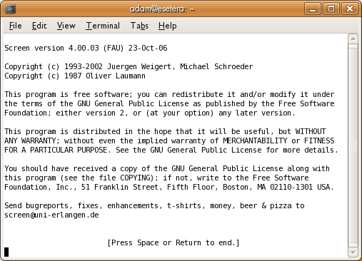
{width="507" height="366"}If you press Enter you get a shell prompt, just like before you invoked screen. You are now running within a single session of screen. In order to create a second session with its own shell, press ctrl + a followed by c or ctrl + c. All screen commands begin with ctrl + a but if you need to use that for some other purpose you can change that key binding. See the manual (type \"man screen\" at your bash prompt) for this and many details we will not present here.\
If you want to run just one command in a new screen and then close the screen, specify the command as an argument:
$ screen irssi
Switching Sessions
To switch to the previous shell, enter ctrl + a followed by the p key. To go forward again, enter ctrl + a followed by the n key. You can see a list of all the sessions you have created using ctrl + a followed by the \" key. This presents a scroll-down menu listing all open sessions (very helpful when you have created many sessions!). If you want to save even the half second it takes to scroll down the menu, while being able to see a list of available sessions and instantly jump to another session, enter ctrl + a w. This keeps you in your current window, but adds, at the bottom of the screen, a list of sessions with a different number for each. Then enter ctrl + a session_number to jump to the session of your choice.
Suppose you created a few sessions under GNU screen. In one session you have a Vim editor open, a couple more sessions you use for logging in to different remote servers, another session you use to run FTP, and so forth. By default, ctrl + a \" shows the program you used to start each session. Normally you started it with the shell, so ctrl + a \" shows \"bash\" for each session (or whatever your shell is). This isn\'t very helpful if you want to quickly find the session that\'s running Vim or FTP.
It turns out that customizing the display is easy. While you are in a session--say, editing in vim--press ctrl + a A and you get a line at the bottom of your window with the name of your session, which you can edit to your liking.
Copy & Paste
You can use the mouse (on systems running gpm) to select text in one session and paste it in any session or even another terminal. The screen program has its own method for copying text, like this:\
- Press ctrl + a [ to go into screen copying mode.
- Navigate through the text anywhere in your window, using arrow keys or editor commands or whatever works in that session. At one end of the region of interest, press the spacebar.
- Navigate to the end of the region of interest (text is highlighted as you proceed with your selection).
- Press the spacebar again to copy the text to the clipboard.
- Switch to the session where you want to copy the text, navigate to the right place and press ctrl + a ]. This pastes the selected text into the edit buffer or onto the command line or whatever, depending on what that session is doing.
- Repeat step 5 as desired.\
With either the mouse method or the screen method, text is taken from the video memory, which does not preserve the escape sequences that make colors, boldspace and so on. That is probably what you want if you are copying examples from a manual onto a command line, but maybe not what you want if you are taking exerpts from one file to another.\
Splitting The Screen
Besides multiple full-screen windows, Screen can also allow two or more programs to share the screen at once.
Use ctrl + a S (capital S) to divide your screen into two parts. Your original session is at the top and a new blank session at the bottom. (Be careful you don\'t accidentally press ctrl + s. This can lock up your terminal. If you do accidentally hit ctrl + s, you can unlock the terminal with ctrl + q.) By default, there is no program running in this new region, but you can start one by using ctrl + a tab to move to that region and then typing ctrl + a c.
Each region acts as an independent session, and you can switch between sessions just as in fullscreen mode.
You can remove the current region by using ctrl + a X. This won\'t destroy the session or what\'s running in it. It just turns the other session back into a full-sized window.
Detaching A Session
One of Screen\'s most powerful features is the ability to halt and
restore sessions. Say you\'re doing something really interesting on
your computer, but you have to leave and go to work. Now say that while
away you want to access what you were working on. If both machines are
accessible through the Internet, you can do that with Screen. For
example you may start a session on a remote machine using the telnet
or the safer ssh protocol, and then invoke screen. When you have to
leave, you can safely close the remote Screen session and later restore
it, maybe accessing the remote machine from the command line of a third
machine located in another suburb -- or in another continent.
Type ctrl + a d in your screen session. You return to your original
terminal and the screen exits, printing [detached]. Now if you
execute ps, you find that the screen is still running in the
background. Get a list of all running sessions by passing screen the
-list option.
$ screen -list
There is a screen on:
12056.pts-0.hostname
(Detached)
1 Socket in
/var/run/screen/S-user_name.
$
You can reconnect to this running session by entering:
$ screen -r 12056.pts-0.hostname
Or you can just use:
$ screen -R
This reconnects to the first session it finds.
Now all you have to do is log into your home machine from any remote
machine and you are able to see whatever you were working on, exactly as
you left it. Use the same procedure to put a download into the
background with wget, or ftp. A detached session persists even if
you log out from the machine.
Quitting Screen
If you have only a few programs open, you can exit screen simply by quitting them all. However, if you have many different application and windows open, you can exit them all by typing ctrl + a \. You are prompted for confirmation, and if you select yes, Screen terminates all its programs and exits.\ :::
SSH
The command line is such a useful tool that it won\'t be long before you
need to have access to the command line on a computer that is not
sitting in front of you. In the old days, before security was a
concern, people used telnet to get a command line on a remote
computer. For most purposes, telnet is no longer a good idea, because
data is transmitted in a raw, unencrypted format. The standard secure
way to gain access to a command line on a remote computer is via ssh
(secure shell). The simplest invocation of the command is
$ ssh othermachine.domain.org
This command assumes that your username on the remote machine is the
same as your username on the local machine at which you type the
command. The remote machine prompts you for your password. If your
username on the remote machine is different than your username on the
local machine, use the -l (lower-case \"L\") option to indicate your
username on the remote machine.\
$ ssh -l remoteusername othermachine.domain.org
Alternatively, you can use email-style notation to indicate a different username.\
$ ssh remoteusername@othermachine.domain.org
So far, all these commands display a command line on the remote machine from which you can then execute whatever commands that machine provides to you. Sometimes you may want to execute a single command on a remote machine, returning afterward to the command line on your local machine. This can be achieved by placing the command to be executed by the remote machine in single quotes.\
$ ssh remoteusername@othermachine.domain.org 'mkdir /home/myname/newdir'
Sometimes what you need is to execute time consuming commands on a
remote machine, but you aren\'t sure to have sufficient time during your
current ssh session. If you close the remote connection before a
command execution has been completed, that command will be aborted. To
avoid losing your work, you may start via ssh a remote screen
session and then detach it and reconnect to it whenever you want. To
detach a remote screen session, simply close the ssh connection: a
detached screen session will remain running on the remote machine.
ssh offers many other options, which are described on the manual page.
You can also set up your favorite systems to allow you to log in or run
commands without specifying your password each time. The setup is
complicated but can save you a lot of typing; try doing some Web
searches for \"ssh-keygen\", \"ssh-add\", and \"authorized_keys\".
scp: file copying
The SSH protocol extends beyond the basic ssh command. A particularly
useful command based on the SSH protocol is scp, the secure copy
command. The following example copies a file from the current directory
on your local machine to the directory /home/me/stuff on a remote
machine.
$ scp myprog.py me@othermachine.domain.org:/home/me/stuff
Be warned that the command will overwrite any file that\'s already present with the name /home/me/stuff/myprog.py. (Or you\'ll get an error message if there\'s a file of that name and you don\'t have the privilege to overwrite it.) If /home/me is your home directory, the target directory can be abbreviated.\
$ scp myprog.py me@othermachine.domain.org:stuff
You can just as easily copy in the other direction: from the remote machine to your local one.
$ scp me@othermachine.domain.org:docs/interview.txt yesterday-interview.txt
The file on the remote machine is interview.txt in the docs subdirectory of your home directory. The file will be copied to yesterday-interview.txt in the home directory of your local system
scp can be used to copy a file from one remote machine to another.
$ scp user1@host1:file1 user2@host2:otherdir
To recursively copy all of the files and subdirectories in a directory,
use the -r option.
$ scp -r user1@host1:dir1 user2@host2:dir2
See the scp man page for more options.
rsync: automated bulk transfers and backups
rsync is a very useful command that keeps a remote directory in sync
with a local directory. We mention it here because it\'s a useful
command-line way to do networking, like ssh, and because the SSH
protocol is recommended as the underlying transmission for rsync.
The following is a simple and useful example. It copies files from your
local /home/myname/docs directory to a directory named backup/ in
your home directory on the system quantum.example.edu. rsync
actually minimizes the amount of copying necessary through various
sophisticated checks.\
$ rsync -e ssh -a /home/myname/docs me@quantum.example.edu:backup/
The -e option to ssh uses the SSH protocol underneath for
transmission, as recommended. The -a option (which stands for
\"archive\") copies everything within the specified directory. If you
want to delete the files on the local system as they\'re copied, include
a --delete option. See the rsync manual page for more details about
rsync.
Making life easier when you use SSH often
If you use SSH to connect to a lot of different servers, you will often make mistakes by mistyping usernames or even host names (imagine trying to remember 20 different username/host combinations). Thankfully, SSH offers a simple method to manage session information through a configuration file.
The configuration file is hidden in your home directory under the directory .ssh (the full path would be something like /home/jsmith/.ssh/config --if this file does not exist you can create it). Use your favorite editor to open this file and specify hosts like this:
Host dev
HostName example.com
User fc
You can set up multiple hosts like this in your configuration file, and after you have saved it, connect to the host you called \"dev\" by running the following command.
$ ssh dev
Remember, the more often you use these commands the more time you save. :::
Installing Software
Installing software on GNU/Linux is a broad subject because each version of GNU/Linux has its own way of doing things. Most are variations on apt-get (Advanced Packaging Tool), used by Debian, Ubuntu, gNewSense, and related distributions) or yum (Yellowdog Update Manager), used by Fedora, BLAG, and related distributions. The basic syntax is\
$ sudo apt-get install packagename
$ sudo yum install packagename
Several apt-get and yum functions have the same name and act in the same way, but by no means all. When you want to go beyond the simple cases described here, be sure to check the documentation for whichever you are using.\
These examples use sudo to remind you that installing software and
editing configuration files require superuser privileges. You can either
use sudo with each command, or switch to being superuser with the su
command. (Remember to exit your superuser session before resuming normal
user work.)\
There are numerous options to each command. To uninstall a package, use this command.\
$ sudo apt-get remove packagename
$ sudo yum remove packagename
To read repository index files, and update the local package database.
$ sudo apt-get update
$ sudo yum update
To install all available newer versions of packages.
$ sudo apt-get upgrade
To fix broken dependencies, if any.\
$ sudo apt-get --fix-broken
The yum command does not have this option. There are other ways to
deal with broken RPM package dependencies, but they require more help
than we can give you here.\
Users can configure multiple package repositories to download from by editing /etc/apt/sources.list as superuser. Be careful. Back up the current file before making any changes.
All types of GNU/Linux allow the user to install software using the source code. For software in Debian-style packages, you can use\
$ apt-get source packagename
The yum utility does not handle source installs.\
Compiling from source is especially important for software that is not available in packages, typically because it is too new. You probably don\'t want to tackle this process unless you know a little bit about how to use GNU/Linux commands and a little about the GNU/Linux file system, but whenever you decide to try out something brand new and possibly unfinished, this is the most common method. If you don\'t know about commands and file systems, you can easily get lost doing a source code installation. It is better to read up on them first, get comfortable with them, and then return here.
Installing from source works on any GNU/Linux system that has the compiler and related tools and libraries, so it\'s a good process to know, and it more or less follows this route once you have a source package:
- Unpack the archive and
cdto its base directory.\ - Run the configure script ./configure\
- Compile the software make\
- Install the software make install\
To carry out the second and third steps, you must have compiler tools on
your system. Some GNU/Linux systems come with these tools automatically,
but others do not. Any system you are likely to use with this book,
though, allows you to download the tools you need for free; search for
the packages containing gcc and binutils.\
Dependencies
Before we start, a word on dependencies. GNU/Linux developers often don\'t write an application from scratch; they rely heavily on work that has been done previously by other programmers. This is a smart practice, of course, because it saves time, and to aid this process many kind-hearted individuals have made libraries of code that other programmers can easily access and use within their own programs. These libraries are stored in fixed places in the GNU/Linux file system, usually in the directories whose names begin with /lib, /usr/lib, and /usr/share/lib.
If you install an application that requires certain libraries, it\'s easy as long as you have those libraries already installed on your system. However, if you don\'t have the required libraries, you need to find them and install them. If the programmers are thoughtful, they will have included information about dependencies in either the README or INSTALL files that you will find in the source directory of the application. Some extremely nice programmers give you both the name and the URL where you can get the necessary bits.
However, if you are installing software on a distribution other than the one it was developed on, you are likely to find libraries packaged quite differently than on the developer\'s system. In this case you may have to use the trial and error method: try compiling the source, and when you get an error message telling you of a missing dependency, try to install it. If you can\'t install it using the name given, you may need to ask someone more experienced how to find the appropriate package, or go looking for documentation of your distribution\'s packaging policies.\
Usually, lazy GNU/Linux users don\'t bother to read these files so they just go through the standard process and find that the configure stage will give an error telling them what libraries are missing. These lazy types (this author included) then find the required bits and pieces online and install them.
However, if you are new to GNU/Linux, I suggest that you read the README and INSTALL before starting any installation process. It will save you time and heartache.
Just remember that although a dependency list might be long, you simply get all the necessary packages and install them one by one, following the same process described in the previous section, until finally you have everything you need for the program of your dreams to install and run.
Next, let\'s look at the installation process a little more in depth.
Unpack the archive
Most software sources come in the form of a compressed \"tape archive\"
files that usually have a suffix like \".tar\" or \".tgz\". The GNU
tar command can automatically uncompress files ending with a .gz or
.tgz suffix (which means the distributor used GZIP compression) but if
other forms of compression were used (such as BZIP2 or LZMA) you have to
use the appropriate uncompression program to retrieve the .tar file
(colloquially known as a tar ball). To unpack the archive, use the
tar command:
$ tar zxvf packagename.tar.gz
Where \"packagename\" in the example above is the actual name of your
package that you wish to install. The tar command followed by the
parameters zxvf uncompresses a tar.gz file and creates a new
directory with all the extracted sources. The \'z\' specifies BZIP
compression; if the file suffix is \".tgz2\", specifiy BZIP2 compression
by using a \'j\'. Don\'t worry-- if it fails to extract you just get an
error message. You can remove the tar.gz file after it successfully
unpacks.\
Now you must change your working directory to this new directory using
the cd command. Usually the new directory name is the name of the
compressed source package minus the compression suffix. For example, if
my package really was called newsoftpack-1.0-alpha.tar.gz, then after
running the tar zxvf command on it I would be left with a new
directory called newsoftpack-1.0-alpha and would type
cd newsoftpack-1.0-alpha to enter this new directory. If you are not
sure of the name of the newly created directory, type ls.
Run the configure script
Once inside the new directory, we want to start the actual installation process. To do this, most of the time you will need to type the following:
$ ./configure
Properly packaged source distributions usually contain a script that
checks for needed utilities and libraries and prepares the source tree
for building and installation. In this case, we will assume that it is
configure, since it is a very popular choice for such a script.
Sometimes, the command you need to use is different. In those cases,
look for information in the README or INSTALL file.
In the command shown, by putting a dot and a slash before the name of
the script (./configure) you are telling GNU/Linux to execute (run) a
script called configure from the current directory (denoted by
\"./\"). The script then does its stuff, checking what kind of a
computer you have, what you already have installed, what kind of
GNU/Linux you are running, and so on.
One option to configure is particularly common: the --prefix option,
which tells configure you want the software installed in a non-default
location. On most systems, the default is fine, and it may be where
other software expects to find the software or library you\'re
installing. But sometimes you can\'t install the software into a shared
location or you want it somewhere under your own home directory because
you know you\'re the only person using it. To change the directory where
the software will ultimately be installed, specify it with --prefix:
$ ./configure --prefix ~/bin/myprogs
The most common problem that will occur at this stage is that the configure script will halt and tell you that some software library that the new software depends on is missing. If you do experience this error, check the README and INSTALL files in case they tell you how to repair the problem, then use a search engine if necessary to find out what software the error message is talking about and where to get it. Then start the installation process again with this new package. This means that an installation sometimes can take days while you search and download all the packages you need. This is one of the great advantages of package management systems such as yum and apt-get: when developers create packages for these systems, they automate the installation of dependencies.
In some cases, dependencies are optional. The configure script
actually supports a lot of options. You can see what options your
software package supports by running:
$ ./configure --help
Compile the software
Assuming the configure process finished successfully, the next command
to type in the installation process is:
$ make
If you have several processors or processor cores, you can use multiple
jobs to speed up processing by adding a -j option:
$ make -j3
These commands actually make (\"compile\") the software for you. You
will then end up with a whole lot of compiled files which in total makes
up your software. The make process can take a while, depending on the
speed of your machine and the size of the package sources you are
installing. Running other processor-intensive applications will also
slow down the process.
In the second command shown, -j3 tells make to try to run 3
compilation processes simultaneously, which will allow you to utilize
processor resources better if you have a dual-core or bigger machine.
The number after -j is arbitrary, but a good rule of thumb is the
number of processor cores plus one.
As with configure, you may encounter errors during compilation. In
such a case, if you can\'t fix the problem yourself, contact the
developer of the software and politely ask for help, explaining your
problem very clearly. The Web page
http://www.catb.org/\~esr/faqs/smart-questions.html
explains how to write polite and helpful problem reports. But first, see
if there are log files from the configure and make steps. These may give
you more information than was presented on the screen, even if you
managed to see what was on the screen as it all flashed by. You can also
repeat these steps, adding \" &> logfile\" to the command in order to
capture all output in logfile (use a filename that does not already
exist). Before repeting the make step you should probably do \"make
clean\" in order to remove objects made by previous attempts.\
Install the software
After make has finished without errors, type the following:
$ sudo make install
This will install the newly created files from your software in the
correct locations in your system. This is usually under /usr/local/,
though this can be overridden with a configure option, as we have
seen. Because software is usually installed in a shared directory that
only the root user can write to, you need to start the command with
sudo to have permission to add your software. You don\'t need the
sudo if you told configure to install into a directory under your
own home directory.\
So now you just need to type the name of the application in your
terminal window and it should run. If it fails to start, a common remedy
is to type ldconfig and then try again. ldconfig updates the system
so that your operating system knows that there are new library files
present.
:::
Making Your Own Interpreter
The bash shell and many other programs obtain lines of command input from the keyboard or a file, and then interpret them. In the case of keyboard input, editing facility is provided (or should be). Often this is done by using the readline library. Here we present a simple calculator program which uses command lines. You can lift the C source code out of this manual, put it in a file and compile and run it in order to study the construction and use of a command line interpreter. The tremendous advantages that this programming approach gives relative to the GUI approach have been discussed elsewhere in this manual. With bdc you can recall and re-execute complicated calculations, and you can make script files in which such calculations are saved.
This is the source code, written for GNU-Linux:\
/* The Brain-Dead Calculator.
Build:
gcc -g -O -Wall -o bdc bdc.c -lm -lreadline -lcurses
Run:
./bdc or ./bdc path-to-command-file or path-to-exe-bdc-command-file
Example commands:
3 q c -2.15 * s + # calculates sqrt(3) + sin(-2.15*sqrt(3))
? # prints help message
*/
#define _GNU_SOURCE
#include <stdio.h>
#include <stdlib.h>
#include <readline/readline.h>
#include <readline/history.h>
#include <math.h>
#include <string.h>
#define MAXLEVS 12
int levs = 8;
double st[MAXLEVS];
int do_file( char *path );
int parse( char *comm )
{
int cc, pop, ii, ps;
int cp = 0, cp0;
int cl = strlen(comm);
double rollin;
char *endp, *comfile;
if ( !cl ) return 0;
do {
rollin = 0.0; pop = 1;
cc = comm[cp];
switch( cc ) {
default: if ( (cc >= '0') && (cc <= '9') ) goto num;
printf( "\nERROR at input position %d\n", cp );
pop = 5; break;
case '#':
pop = 3; break;
case '?': printf(
"\nBrain-Dead Calculator with %d-level stack; x=quit\n", levs );
printf(
"op= + - * / perform arithmetic:"
" st[1] = st[1] op st[0] and shift st[j-1] <-- st[j]\n"
"op= s q perform functions:"
" st[0] = func(st[0]) s= sine q= square-root\n"
"op= d c r manipulate stack:"
" d= discard st[0]; c= copy st[0]; r= rotate st[j-1] <-- st[j]\n"
"op= &path run the command file specified by path\n" );
case ' ': pop = 0; break;
case '+': if ( (comm[cp+1] >= '0') && (comm[cp+1] <= '9') ) { num:
memmove( st+1, st, (levs-1)*sizeof(double) );
st[0] = strtod( comm+cp, &endp );
cp += (endp-(comm+cp))-1;
pop = 0; break;
}
st[1] += st[0]; break;
case '-': if ( (comm[cp+1] >= '0') && (comm[cp+1] <= '9') ) goto num;
st[1] -= st[0]; break;
case '.': goto num;
case '*': st[1] *= st[0]; break;
case '/': st[1] /= st[0]; break;
case 'q': st[0] = sqrt(st[0]); pop = 0; break;
case 's': st[0] = sin(st[0]); pop = 0; break;
case 'd': break;
case 'c': memmove( st+1, st, (levs-1)*sizeof(double) );
pop = 0; break;
case 'r': pop = 2; break;
case '&':
ii = 0; cp += 1; cp0 = cp;
while ( comm[cp] > ' ' ) {
cp += 1; ii += 1;
}
comfile = malloc( ii+1 ); // we really should check malloc failure
memcpy( comfile, comm+cp0, ii ); comfile[ii] = 0;
ps = do_file( comfile );
free( comfile );
pop = 0; break;
case 'x': pop = 4; break;
}
switch( pop ) {
case 0: break;
case 2: rollin = st[0];
case 1: memmove( st, st+1, (levs-1)*sizeof(double) );
st[levs-1] = rollin; break;
default: return pop;
}
cp += 1;
} while ( cp < cl );
return 0;
}
int do_file( char *path )
{
FILE *do_fb;
char *comm;
ssize_t len; size_t len1;
int ps, ii, comcount = 0;
do_fb = fopen( path, "r" );
if ( !do_fb ) {
perror( "do_file: cannot open" );
return 0;
}
do {
comm = NULL;
len = getline( &comm, &len1, do_fb );
if ( len == -1 ) { ps = 0; break; }
comm[len-1] = 0;
ps = parse( comm );
free( comm ); comcount += 1;
} while ( (ps != 4) && (ps != 5) );
fclose( do_fb ); // we really should check for fclose failure
printf( "file %d st=", comcount );
for ( ii = 0; ii < levs; ii++ ) printf( " %g", st[ii] );
printf( "\n" );
return ps;
}
int main( int argc, char **argv )
{
char *comm;
int ii, ps, comcount=0;
if ( argc > 1 ) {
ps = do_file( argv[1] );
if ( ps == 4 ) return 0;
if ( ps == 5 ) return 1;
}
do {
do {
comm = readline( "bdc> " );
} while ( comm == NULL );
add_history( comm );
ps = parse( comm );
free( comm ); comcount += 1;
printf( "comm %d st=", comcount );
for ( ii = 0; ii < levs; ii++ ) printf( " %g", st[ii] );
printf( "\n" );
} while ( ps != 4 );
return 0;
}
Here are instructions for building and running bdc. We are doing it in /tmp just for concreteness, but you could put it anywhere.
- Lift the source out of this manual and put it in the file /tmp/bdc.c
- cd to /tmp
- Build the program by running the gcc command shown in the comment at top of bdc.c
- Run the program by typing ./bdc
- Give bdc commands strings at the bdc> prompt, such as 1.23 s 3 + q
<!-- -->
- To quit, use the x command
The bdc command interpreter starts at the beginning of a command string and processes commands and numbers until it gets to the end (or an error). It maintains a stack of numbers, and commands act on them in various ways. The command interpreter is called in two places: a loop that gets command strings from a file, and a loop that gets command strings from the keyboard. The keyboard input is obtained by readline, and the strings are stored in a history list. Therefore, commands can be edited just like shell commands, and previous ones can be recalled.
Here is a small bdc command file. Lift it out and put it in /tmp/example.bdc. Then you can run it by typing &example.bdc on the bdc command line. You can also run it from the shell by typing ./bdc example.bdc. It will perform the calculations, display the resulting stack and give an input prompt. You can then do more calculations. If you make it executable (chmod +x example.bdc) you can start bdc from the shell by typing ./example.bdc. This has the same effect as typing ./bdc example.bdc; in both cases the shell starts the bdc program and passes \"example.bdc\" as an argument.\
#!/tmp/bdc
# Calculate sin(1.5+sqrt(3.14))*7.9
3.14 q 1.5 + s 7.9 *
# Calculate sqrt(5+(previous result))
c 5 t + q
For simplicity we have used only one-character commands, and very few of them. The experix project on SourceForge is a much more capable calculator. Its stack can hold numbers, arrays, strings, file controls and other things, and its operators and commands do what makes sense with the stack arguments that they get. There are comparison and conditional branch operators so that experix command strings can be full-fledged programs. Stack objects and command sequences can be packaged in variables and then invoked by name. It draws graphs and writes text on a framebuffer screen, using a separate server program. In order to see the command line on the graphics screen, characters from stdout are packaged into server commands. Some of the command files demonstrate the technique of passing arguments to experix by including them on the \"#!...\" line of the command file. Installation of experix is far from being simple and automated, but help is available by contacting the author.\
:::
Text Editors
Besides running simple commands like ls and grep, you can use the
command line to start large, complex programs. Before graphical
interfaces were common, programs were designed to use plain text and
take up the screen. Now these programs run within the same window that
you use for the command line.
In this book we\'ll focus on text editors, because you need them to save your commands for later use and to write scripts. They\'re handy for lots of other things too; for instance, you may want to edit HTML files on a web server using a text editor.
Word Processing vs Text Editing
Almost everybody who uses a computer is familiar with a word processor. The free software world provides several powerful ones, including OpenOffice.org and KWrite. The text editors we show in this book manipulate text, like word processors, but there\'s a fundamental difference.
- Word processors store a lot more than a stream of text characters you see on the screen. They want to provide \"rich text,\" with italic and bold, numbering and bullets, colors--you name it. This is obviously valuable for many purposes. A plain text resume does not impress many employers.\
- On the other hand, word processors are showing their limitations these days: some word processors have proprietary formats that make it hard to use documents in other programs. In fact, sometimes you cannot open a document with another version of the same word processor, or the document has display problems.
- Many people find online collaboration tools (such as the wiki software we used to write this manual) and content management systems (such as many weblog sites use) easier for modern document production than a word processor. But word processors are also evolving to do a better job supporting collaboration; probably all these tools will merge over time and evolve into something better than any of them offered before.
Word processors, wikis, content management systems, and text editors all have their place. The tasks in this book require a text editor. If you want to use a word processor to edit these files, you can do so, but make sure to choose a plain text form when you save the file.\
Why do you need a text editor?
GNU/Linux is a very file-centric operating system: everything is (or looks like) a file. All basic configuration is done via carefully crafted text files, in the right place with the right contents. You can find many graphical tools to configure your GNU/Linux box, but most of them just tweak text files on your behalf.
Those text files have an exact syntax that you must follow. A simple misplaced character could jeopardize your system, so using a word processor for this matter is not only a bad idea but could corrupt your files with extra formatting information. Configuration files don\'t need italic or bold, they only need the right information.
With source code it\'s the same thing. Compilers (programs that turn code into other programs) are very strict with syntax. Some of them even care about where in the line a specific command is. Word processors mess up the position of text in lines far too much for compiler to like them. What you need is a clean view of what\'s in the source code or the configuration file to know that what you\'re writing is exactly what your system will get.\
Some editors go even further: they became Integrated Development Environments (IDEs), that not only understand what you\'re typing (be it an Apache configuration or Java code) but can predict what you want to type, suggest modifications, or show your mistakes. They can color specific keywords, automatically place things in the right place, and so on.
But the most important is that all those colors and highlighting are done only within the display. Those fancy changes are not propagated to the text files, which are meant to be plain text. This is one particular useful feature that word processing programs can\'t do and is most essential to text editing.
Why are most text editors command-line programs?
In the beginning... was the command line (Neil Stephenson). Twenty years ago there weren\'t many graphical interfaces around and Unix was already a grown-up operating system running on a whole lot of very important computers. All configuration was already stored in text files because of the KISS principle (keep it short and simple). Unix made the most of KISS and plain text by helping programs work together on text files. Pipes (using the | character) are one powerful method of working together that you\'ve seen in this book.\
Nowadays, computers have thousands of times more power than those early ones, but keeping configuration in text files still gives a big advantage when the only connection you have to your server is through a 56-Kbit modem line and it\'s in a different country. Having to open a graphical interface might not be possible and if that\'s the only way you have to fix a problem, you\'re in big trouble.
Making graphical programs that deal with configuration was a big plus, as the average user can now change things without reading tons of documentation and isn\'t likely to break the system by inserting one wrong character to a point where it\'s irrecoverable, but providing text files and the command-line editor is fundamental to any operating system.
Although most text editors came from the command-line world, most also have a graphical interface today. Menus and buttons do help a lot when using Gvim or Emacs. GEdit and Kate (which are purely graphical) are short and simple, still providing the same basic functionality and the same important features for text editing.
Setting a default text editor
Because the terminal and command line are so tied in with the text
editors, many commands open up a text editor for you. We saw one example
sudoedit, in the \"Useful Customizations\" section. You can set the
default editor though by setting either the EDITOR or the VISUAL
environment variable. For instance:\
$ export EDITOR=emacs
Put this in a startup file such as ./bashrc, and commands will use your chosen editor when they present a file for editing.\ :::
Nano
Nano is a simple editor. To open it and begin creating a new text file, type the following at the command line:
$ nano filepath
where filepath is the path to the file you want to edit (or nothing). The screen is taken over by the program as shown in Figure 1.\
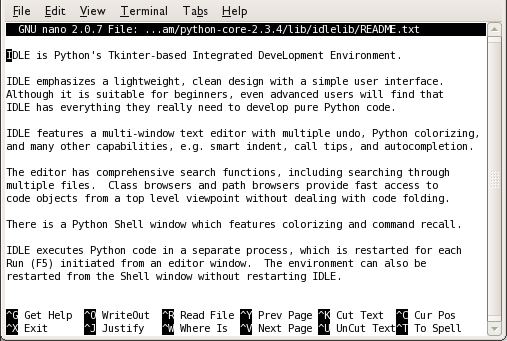
{height="341" width="507"}Figure 1. Opening screen for nano\
The screen is no longer a place to execute commands; it has become a text editor.\
Exiting nano
To exit nano, hold down the Ctrl key and press the x key (a
combination we call ctrl + x in this book). If you have created or
altered some text but have not yet saved it, nano asks:
Save modified buffer (ANSWERING "No" WILL DESTROY CHANGES) ?
To save the changes, just type y and nano prompts for a destination
filepath. To abandon your changes, type n.\
To save changes without exiting, press ctrl + o. nano asks you for
the filename in which to save the text:
File Name to Write:
Type the name of the file, and press the Enter key (or if the buffer already has the right name just press Enter). For instance:
File Name to Write: textfile.txt
Exploring Files
You can move around the file and view different parts using the arrow keys. This is a very fast and responsive way to explore a file.
Help
Be sure to read the man page because it has a lot of good hints. There is help available in your nano session by typing ctrl + g and to get back to your file type ctrl + x.\ :::
vi and vim
Vi is a very powerful command-line text editor. It\'s used for everything from quick fixes in configuration files to professional programming and even for writing large, complex documents like this book. It\'s popular on the one hand because it\'s fast and light-weight, and you can accomplish a lot with a few keystrokes. On the other hand it\'s also powerful: highly configurable, with many built-in functions.
Vim is an enhanced version of Vi, offering a lot of features that make
life easier for both the novice and expert (Vim stands for \"Vi
IMproved\"). On many modern systems, Vim is installed as the default
version of Vi. So if you invoke the vi command you actually run Vim.
This is usually not confusing, because everything in Vi works in Vim as
well. We will look at Vim in this chapter, but if your system has Vi you
can apply these techniques, just replace any reference to vim in the
commands to vi.\
The best feature about Vim/Vi is that it\'s shipped with virtually all GNU/Linux variants by default. Once you learn Vim, whenever you are, you can have the power of efficient editing.
The main drawback of Vim is, as for Emacs (another command line editor), the learning curve. The keyboard short-cuts can be daunting to learn.
Fortunately, you can work around those drawbacks by using a graphical version of Vim (GVim) with all the buttons and menus for more graphical users. You can also try easy-Vim, with Notepad style editing.
These simplified versions of Vim reduce the learning curve a lot and expose less advanced users to the power of efficient editing, which in turn increases one\'s will to learn a more powerful editor.
Basic commands
To open Vim and begin creating a new text file, get a command-line open and type:
$ vim
This presents you with a blank screen, or (if the program running is Vim) a screen of information looking something like this:
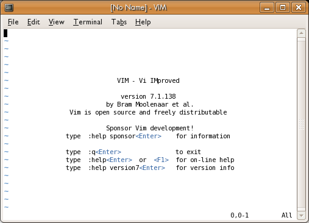
{width="507" height="366"}If you want to open an existing file, just specify it on the command line as an argument. For instance, the following opens a file called /etc/fstab:\
$ vim /etc/fstab
This file already exists on most GNU/Linux systems, but if you open a non-existent file, you\'ll get a blank screen. The next section shows you how to insert text; when you\'re finished you can then save the file.
Inserting Text
Whether you have a blank screen or a file with text in it, you can add text by entering what\'s known as edit mode. Just press i. You should see this on the bottom of the screen:
-- INSERT --
Whenever this appears on the bottom of the screen, you are in edit mode. Whatever you type becomes part of the file. For instance, try entering \"This is line 1.\" Then press the Enter key and enter \"This is line 2\". Here\'s what this fascinating contribution to literature looks like in Vim:
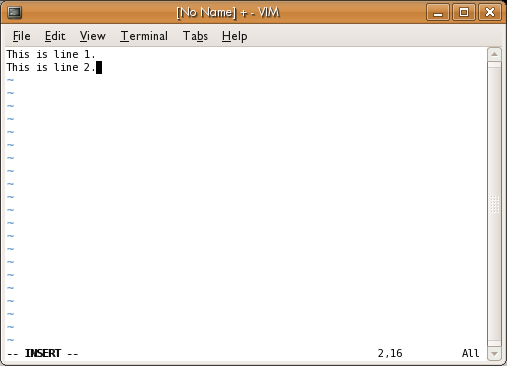
{width="507" height="366"}When you are finished inserting text, press the Esc (Escape) key to leave edit mode; that puts you in normal mode.
Only One Place At a Time: The Cursor
Vim, like every editor, keeps track of where you are and shows a cursor at that point, which may look like an underline or a box in a different color. In edit mode, you can backspace to remove characters. Vim also allows you to move around using arrow keys and edit the whole document freely. But normal Vi doesn\'t let you move around; it restricts you to adding text or backspacing to remove it.
In normal Vi, if you want to go back over what you edited, or move to another place in the file, you must press the Esc key, move to the place where you want to insert text, and enter edit mode again. This may seem cumbersome. But Vi provides so many alternate ways of moving around and adding text that you\'ll find, with some practice, that it\'s no barrier to productivity. As already mentioned, Vim lets you move around freely and edit the whole file when you\'re in edit mode--but you\'ll find yourself leaving edit mode often in order to make use of Vim\'s powerful commands.\
Basic Movement Commands
To practice moving around in a file, you can press the Esc key to get out of edit mode. If you have only a small amount of text in the file, you may prefer to find another text file on your system that\'s larger, and open that. Remember that when you open a file you\'re in normal mode, not edit mode.
To move around use the arrow keys.
To jump to a specific line use the colon button followed by a line number. The following jumps to line 20:
:20
You can move quickly up or down a text file by pressing the PgUp and PgDn keys.
Search for text by pressing the slash key (/) and then typing the text you want to find:
/birthday party
You can simply repeat the / key to search for the next occurrence of the string. The search is case-sensitive. To search backward, press the question-mark key (?) instead of the slash key.\
Saving and exiting
If you\'re in edit mode, you can save your changes by pressing Esc to go to normal mode, typing :w and pressing the Enter key. This saves your changes to the file you specified when you opened Vim.
Note: Vim, by default, does not save a backup of the original version of the file. Your :w command deletes the old contents forever. Vim can be configured to save backups, though.
If you opened Vim without specifying a file name, you receive an error message when you press :w:
E32: No file name
To fix this, specify :w with a filename:
:w mytestfile.txt
This must also be followed by the Enter key.
To exit Vim, press :q. If you have unsaved text, you receive an error message:
E37: No write since last change (add ! to override)
Like most word processors, Vim tries to warn you when you might make a mistake that costs you work. As the message suggests, you can abandon your text and exit by pressing :q!. Or use :w to save your changes and then enter :q again. You can combine writing and quitting through any of the following:
:wq (followed by Enter)
:x (followed by Enter)
ZZ
Using your mouse with Vim.
Sometimes it\'s convenient to use your mouse with Vim, to select text or even just to quickly position the cursor. To enable this mode pass Vim the command:\
:set mouse=a (followed by Enter)
Opening up several files at the same time
Since version 7 Vim has had the (rarely noticed) feature of tabs, that\'s right, just like those in Firefox or other tabbed applications.
To use tabs in Vim pass the command :tabnew \<file>. For instance, to open up a file foo.txt so that it appears in a tab I would:
:tabnew /path/to/foo.txt (followed by Enter)
To move back and forth between this file and the one you were working on previously, use the keys g and then t. To help remember this key combination you can think of \"g\" as in goto and \"t\" as in tab. You can open up as many files as you like into tabs and use gt to traverse between them. If you have enabled mouse input (see \"Using your mouse with Vim\", above) then you can simply click on the tab itself.\
You can close a tab in the same way you would a normal file, with :wq to commit the changes, or just :q to close without committing.
Copy, Cut and Paste (A quick introduction to Visual Mode in Vim)
Vim uses a mode called Visual Mode to select text for copying to the \'buffer\' (think of a buffer as a clipboard) to be used elsewhere.
To activate Visual Mode, just hit the v key on your keyboard and hit enter. Using the cursor keys (arrow keys) select the text you would like to copy or cut. \ \ To copy the selected text, hit the y key (\'y\' stands for \"yank\"). Now, use the cursor keys and move to a new location in your document. Now press the p key (\'p\' stands for \"put\" but you can think of it as \"paste\") to place the text in the given position.
To cut the selected text, hit the x key (who knows what \'x\' stands for!). Now move to a new position in your document and press p to \"put\" the text in that place.
Sometimes it\'s useful to select text in lines or columns. Experiment with these other forms of Visual Mode by holding SHIFT+v to select whole lines or CTRL+v to select columns. Before you know it you\'ll be working just as quickly as you would with a mouse in a word editor!
Practice! :::
Emacs
Emacs is a very powerful text editor. You can invoke Emacs by typing its name at the command line.
$ emacs
If you are using a typical graphics-based GNU/Linux distribution, this command opens a new window with Emacs running in that new window.
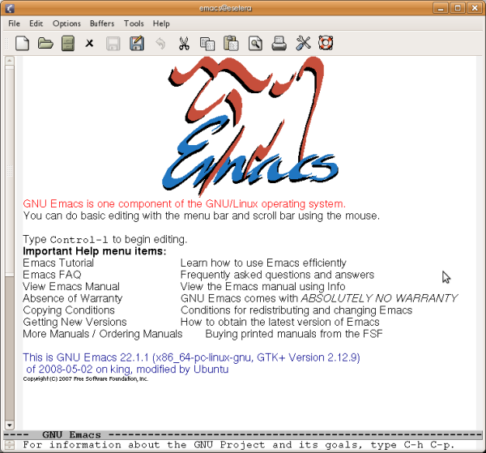
{height="559" width="600"} \Due to its versatility, many users find themselves resorting to Emacs constantly, and they open an Emacs session soon after turning their computer on and leave it open for the duration of their computing endeavor. If you plan to have Emacs running for an extended time, it is helpful to run Emacs in the background or another virtual terminal so that the command line becomes available for another command.\
$ emacs &
You may occasionally want to run Emacs directly in the terminal window.
Use the -nw (no window) option for this.\
$ emacs -nw
You can load a file for editing at the time you start Emacs by giving
the file name after the emacs command.
$ emacs filename
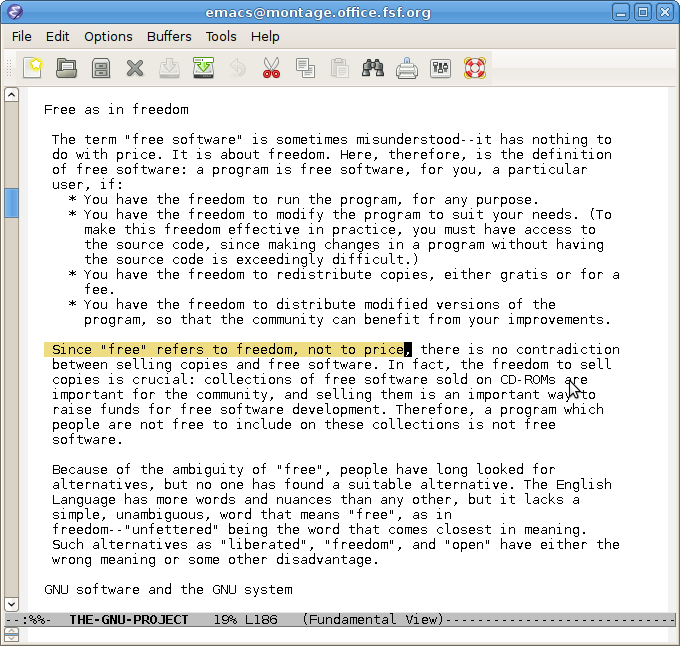
Basic editing commands
Once Emacs is running, there are a number of basic editing commands you can use. In most of this book, outside of this Emacs chapter, we use a notation like ctrl + x to denote depressing the Ctrl (Control) key, then pressing the x key while Ctrl is depressed, then releasing both keys. In this Emacs chapter, we employ the notation used in the Emacs documentation, which abbreviates ctrl + x as C-x.\
C-x C-f (load file into buffer)
The command C-x C-f (press the Ctrl key, press and release x, press and release f, release Ctrl) loads a file on disk into an Emacs buffer (an Emacs working area) for editing. You are prompted for the name of the file to load. You may then make changes to the buffer by typing and by using other Emacs commands. The buffer is not saved to a file on disk until you specifically request it with, for example, the C-x C-s command.
C-x C-s (save buffer to file)
The command C-x C-s saves the current Emacs buffer to disk as the currently named file. The name of the file is located on a bar at the bottom of the window.
C-x C-c (exit Emacs)
This command exits Emacs. If buffers remain that are unsaved, Emacs asks you whether you want to save them.
C-h t (start the Emacs tutorial)
The command C-h t (press the Ctrl key, press and release h, release Ctrl, press and release t) starts the Emacs tutorial. This takes you step-by-step through some basic Emacs commands.
C-h ? (general help)
This command offers a number of help options.
C-k (kill line)
The command C-k kills (deletes) the current line in the current buffer from the cursor to the end of the line.
C-y (yank back line)
This command \"yanks back\" the most recently killed line or set of lines and pastes it into the current cursor position.\
Other Emacs features
Emacs has major modes for editing a variety of common and not-so-common file types, such as plain text, shell scripts, python language scripts, and so on. Each mode redefines the effect of hitting the Tab key, for example, to do the most appropriate thing for a particular file type. These modes start automatically for many types of files, based on the file extension or the first line in the file.\
Emacs is extensible. You can program it to behave as you like, for example by using the inbuilt, easy to learn scripting language Emacs Lisp. See the Emacs documentation for more about this.
Emacs documentation
Emacs is well documented in free sources. Type info emacs at the
command line (or C-h r from within Emacs) to read the full
official documentation. There is also an abbreviated manual page (type
man emacs at the command line). For beginners, the best way to start
learning Emacs is the inbuilt interactive tutorial mentioned above.\
:::
Kedit, KWrite, & Kate
Although Kedit is part of the KDE software suite, which includes the KDE desktop environment, it does not require KDE to run. It is just as happy under Gnome. KDE has several built-in tools to help you edit text files (including scripts). The simplest of these is \"KEdit\", a basic text editor. You can start it from the KDE menu or from the command line, if you prefer. For example, you could run:
$ kedit /etc/profile &
You should see something like this.
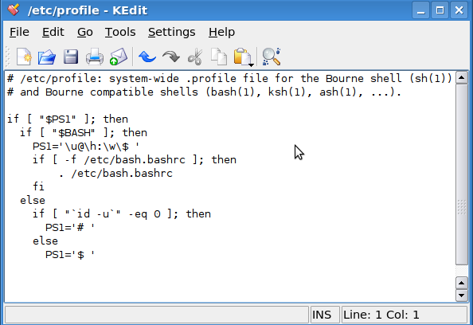
{width="594" height="408"}Using it is simple. You can move around the file with the arrow keys, Page Up (PgUp) and Page Down (PgDn) keys, or the mouse. Opening a new file is done from the File->Open menu, and you can spell-check your file with the Tools->Spelling... menu option.
At the bottom of the window is some useful information (if you don\'t see it, the Settings->Show Statusbar menu option brings it up). The line and column display shows the current position of the cursor. The \"INS\" means that you are in insert mode, and that if there is text to the right of the cursor, it is pushed over as you type. The opposite of this is \"OVR\", which stands for overtype mode, where text to the right is replaced by the newly typed text. You can switch between these with the Insert key on the keyboard.
If you make any changes to the current file, then \"[modified]\" appears in the title bar to remind you that you need to save changes before exiting.
{width="300" height="30"}
KWrite
While KEdit is useful, it is quite limited. KDE offers other options that are worth investigating. KWrite is very similar-looking, but offers useful additional features.
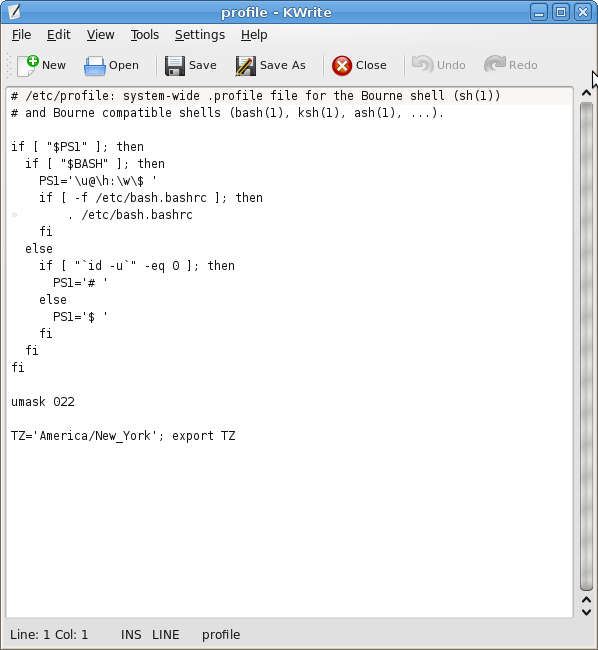
{width="598" height="650"}The most obvious advantage is syntax highlighting. For shell scripts, programs, and many other types of files, KWrite colors the text to make it easier to figure out what is going on. Here, comments are shown in gray, parameters are in green, built-in bash commands are shown in dark purple, and other shell commands in light purple. Generally KWrite tries to pick highlighting based on what it guesses the type of file to be. If it guesses wrongly, or doesn\'t do highlighting at all, you can manually choose an option under Tools->Highlighting.
You might have also noticed the little minus symbols and lines in the left margin. This is part of what is known as code folding. KWrite tries to match up \"if\" statements with the corresponding \"fi\", \"for\" with \"done\", and so on. Clicking on the minus symbol collapses the block, which can be useful if you are reading through a script and are interested in viewing what comes before and after a block, but not what\'s inside it. There are many more helpful features that KWrite offers--take a look around the menu and see what things do!
Kate
Last up in this overview is Kate. It is essentially the same editor as KWrite. However, it offers additional tools that make working on a project, as opposed to a single file, easier.
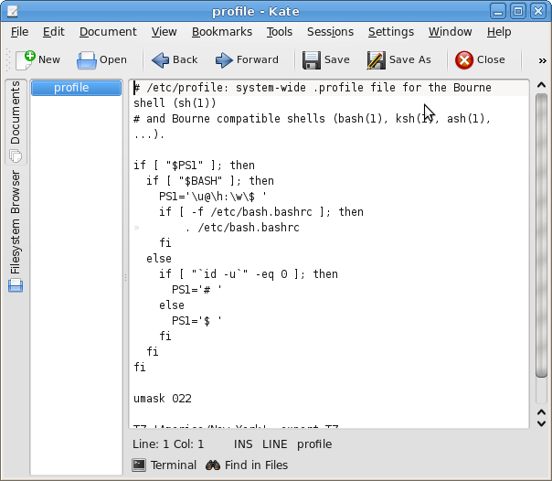
{width="604" height="526"}On the left side of the window are tabs that let you view the documents open in the current Kate session (KEdit and KWrite open multiple files in separate windows, while Kate can open them all in one), or navigate through your computer\'s filesystem to open a file. Kate also does syntax highlighting like KWrite, but also adds a \"Terminal\" tab at the bottom. Clicking on this tab opens and closes a mini-terminal where you can enter commands. In this case, if we wanted to see what \"id -u\" in the script does, and can simply type it in to the terminal to try it out.
For KDE users, KEdit, KWrite, and Kate offer three nice choices for editing text files. Chances are that all three came pre-installed on any system with KDE. Have fun trying them out! :::
Gedit
Gedit, the default GUI editor if you use Gnome, also runs under KDE and other desktops. Most gNewSense and Ubuntu installations use Gnome by default. To start Gedit open a terminal and type
$ gedit &
You should see this:
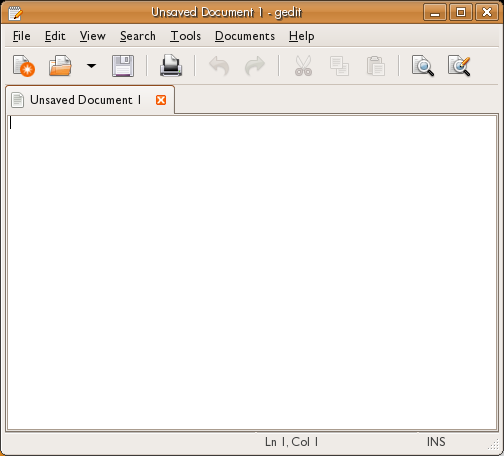
{width="504" height="456"}This looks like most basic editors on any operating system. You can use Gedit through the GUI, and the commands are simple:
File->Open : Opens an existing file
File->New : Creates a new (blank) file
File->Save : Saves a file
ctrl + c : copy
ctrl + v : paste\
That\'s all you really need to do. To add text just type!
Line Numbers
Gedit tracks your cursor and displays the position at the bottom of the interface:
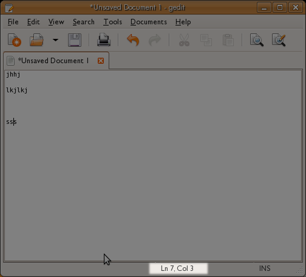
{width="504" height="456"}This can be handy information to know. If you keep track of the line numbers you can use these to jump quickly around the text file by using the \"Go to Line\" feature. This can be accessed via the interface (Search -> Go to Line) or via the shortcut ctrl + i. :::
Scripting
If you have a collection of commands you\'d like to run together, you can combine them in a script and run them all at once. You can also pass arguments to the script so that it can operate on different files or other input.\
Like an actor reading a movie script, the computer runs each command in your shell script, without waiting for you to whisper the next line in its ear. A script is a handy way to:
- Save yourself typing on a group of commands you often run together.\
- Remember complicated commands, so you don\'t have to look up, or risk forgetting, the particular syntax each time you use it.
- Use control structures, like loops and case statements, to allow your scripts to do complex jobs. Writing these structures into a script can make them more convenient to type and easier to read.
Let\'s say you often have collections of images (say, from a digital camera) that you would like to make thumbnails of. Instead of opening hundreds of images in your image editor, you choose to do the job quickly from the command line. And because you may need to do this same job in the future, you might write a script. This way, the job of making thumbnails takes you only two commands:
$ cd images/digital_camera/vacation_pictures_March_2009
$ make_thumbnails.sh
The second command, make_thumbnails.sh, is the script that does the
job. You have made it previously and it resides in a directory on your
search path. It might look something like this:\
#!/bin/bash
# This makes a directory containing thumnails of all the jpegs in the current dir.
mkdir thumbnails
cp *.jpg thumbnails
cd thumbnails
mogrify -resize 400x300 *.jpg
If the first line begins with #! (pronounced \"shee-bang\"), it tells the kernel what interpreter is to be used. (Since bash is usually the default, you might omit this line). After this you should put in some comments about what the script is for and how to use it . Scripts without clear and complete usage instructions often do not \"work right\". For bash, comments start with the hash (#) character and may be on the ends of executable lines.\
The file includes commands conforming to the syntax of the interpreter.
We\'ve seen three of them before: mkdir, cp, and cd. The last
command, mogrify, is a program that can resize images (and do a lot of
other things besides). Read its manual page to learn more about it.\
Making scripts executable
To write a script like the one we\'ve shown, open your favorite text editor and type in the commands you would like to run. For bash, you can put multiple commands on a single line so long as you put a semi-colon after each command so the shell knows a new command is starting.\
Save the script. One common convention for bash is to use the .sh
extension -- for example, make_thumbnails.sh.
There is one more step before you can run the script: it has to be executable. Remember from the section on permissions that executability is one of the permissions a file can have, so you can make your script executable by granting the execute (x) permission. The following command allows any user to execute the script:
$ chmod +x make_thumbnails.sh
Because you\'re probably planning to use the script often, you\'ll find it worthwhile to check your PATH and add the script to one of the directories in it (for instance, /home/jdoe/bin is an easy choice given the PATH shown here).\
$ echo $PATH
/usr/bin:/usr/local/bin:/home/jdoe/bin
For simple testing, if you\'re in the directory that contains the script, you can run it like this:
$ ./make_thumbnails.sh
Why do you need the preceding ./ path? Because most users don\'t have the current directory in their PATH environment variables. You can add it, but some users consider that a security risk.
Finally, you can also execute a script, even without its execute bit set, by passing it as an argument to the command interpreter, thusly:
$ bash make_thumbnails.sh
More control
To provide the flexibility you want, the bash shell and many other interpreters let you make choices in a script and run things repeatedly on a variety of inputs. In that regard, the shell is actually a programming language, and a nice way to get used to using the powerful features a programming language provides. We\'ll get you started here and show you the kinds of control the bash shell provides through compound statements.\
if
This statement was already introduced in the section on checking for
errors, but we\'ll review it here. if is more or less what you\'d
expect, though its syntax is quite a bit different from its use in most
other languages. It follows this form:
if [ test-condition ]
then
do-something
else
do-something-else
fi
You read that right: the block must be terminated with the keyword fi.
(It\'s one of the things that makes using if fun.) The else portion
is optional. Make sure to leave spaces around the opening and closing
brackets; otherwise if reports a syntax error.\
For example, if you need to check to see if you can read a file, you could write a chunk like this:
if [ -r /home/joe/secretdata.txt ]
then
echo "You can read the file"
else
echo "You can't read that file!"
fi
if accepts a wide variety of tests. You can put any set of commands as
the test-condition, but most if statements use the tests provided by
the square bracket syntax. These are actually just a synonym for a
command named test. So the first line of the preceding example could
just as well have been written as follows.
if test -r /home/joe/secretdata.txt
You can find out more about tests such as -r in the manual page for
test. All the test operators can be used with square brackets, as we
have.
Some useful test operators are:\
\
-r File is readable -x File is executable -e File exists -d File exists and is a directory
There are many, many more of them, and you can even test for multiple
conditions at once. See the the manual page for test.
while (and until)
while is a loop control structure. It keeps cycling through until its
test condition is no longer true. It takes the following form:
while test-condition
do
step1
step2
...
done
You can also create loops that run until they are interrupted by the user. For example, this is one way (though not necessarily the best one) to look at who is logged into your system once every 30 seconds:\
while true
do
who
sleep 30
done
This is inelegant because the user has to press Ctrl + c or kill it
in some other way. You can write a loop that ends when it encounters a
condition by using the break command. For instance the following
script uses the read command (quite useful in interactive scripts) to
read a line of input from the user. We store the input in a variable
named userinput and check it in the next line. The script uses another
compound command we\'ve already seen, if, within the while block,
which allows us to decide whether to finish the while block. The
break command ends the while block and continues with the rest of
the script (not shown here). Notice that we use two tests through -o,
which means \"or\". The user can enter Q in either lowercase or
uppercase to quit.\
while true
do
echo "Enter input to process (enter Q to quit)"
read userinput
if [ $userinput == "q" -o $userinput == "Q" ]
then
break
fi
process input...
done
until works exactly the same way, except that the loop runs until the
test condition becomes true.\
case
case is a way for a script to respond to a set of test conditions. It
works similarly to case statements in other programming languages,
though it has its own peculiar syntax, which is best illustrated through
an example.
user=`whoami` # puts the username of the user executing the script
# into the $user variable.
case $user in
joe)
echo "Hello Joe. I know you'd like to know what time it is, so I'll show you below."
date
;;
amy)
echo "Good day, Amy. Here's your todo list."
cat /home/amy/amy-todo.txt
;;
sam|tex)
echo "Hi fella. Don't forget to watch the system load. The current system load is:"
uptime
;;
*)
echo "Welcome, whoever else you are. Get to work now, please."
;;
esac
Each case must be followed by the ) character, then a newline, then the
list of steps to take, then a double semicolon (;;). The \"*)\"
condition is a catchall, similar to the default keyword in some
languages\' case structures. If no other cases match, the shell
executes this list of statements. Finally, the keyword esac ends the
case statement. In the example shown, note the case that matches
either the string \"sam\" or \"tex\".
for
for is a useful way of iterating through items in a list. It can be
any list of strings, but it\'s particularly useful for iterating through
a file list. The following example iterates through all of the files in
the directory myfiles and creates a backup file for each one. (It
would choke on any directories, but let\'s keep the example simple and
not test for whether the file is a directory.) ⁞\
for filename in myfiles/*
do
cp $filename $filename.bak
done
As with any command that sets a variable, the first line of the for
block sets the variable called filename without a dollar sign.
There\'s another variety of for, which is similar to the for
construct used in other languages, but which is used less in shell
scripting than it\'s used in other languages, partially because the
syntax for incrementing and decrementing variables in the shell is not
entirely straightforward.
parallel
parallel is a useful way of iterating through items in a list while
maximizing the use of your computer by running jobs in parallel. The
following example iterates through all of the files in the directory
myfiles and creates a backup file for each one replacing the extension
with .bak. (It would choke on any directories, but let\'s keep the
example simple and not test for whether the file is a directory.)\
ls myfiles/* | parallel cp {} {.}.bak
parallel can often be used instead of for loops and while read
loops, make these run faster by running them in parallel and make the
code easier to read.
parallel can be used for a lot of more advanced features. You can
watch an intro video here:
http://www.youtube.com/watch?v=OpaiGYxkSuQ{target="_top"}
\ :::
Maintainable Scripts
You are slowly delving into programming by the way of shell scripting. Now it\'s the best time to start to learn about how to be a good programmer. Since this book is just an introduction to the command line, we are only going to provide few but nevertheless very important hints centered around the idea of maintainability.
When programmers talk about maintainability they are talking about the ease with which a program can be modified, whether it\'s to correct defects, add new functionality, or improve its performance. Unmaintainable programs are very easy to spot: they lack structure, so functionality is spread all over the place. When you push here they break way over there, a real nightmare. In general, they are very hard to read. Consider for example this:
#!/bin/sh
identify `find ~/Photos/Vacation/2008 -name \*.jpg` | cut -d ' ' -f 3 | sort | uniq -c
use your favorite editor to save this file as foo, then:
$ chmod +x foo
$ ./foo
11 2304x3072
12 3072x2304
What that small monster does is find files that ends with \".jpg\" in a
certain directory, run identify on all of them, and report some kind
of information that someone at some time must have thought very useful.
If the programmer would only have added some hints as to what the
programs does...
Don't use long lines
The first thing you\'ll note is that our example of an unmaintainable program is one long line. There\'s really no need for that. What if the program looked like this instead:
#!/bin/sh
identify `find ~/Photos/Vacation/2008 -name \*.jpg` |
cut -d ' ' -f 3 |
sort |
uniq -c
It becomes a little bit easier to spot where each command begins and ends. It\'s still the same set of piped programs, only their presentation is different. You can break long lines at pipes and the functionality will be the same.
You can also split one command into several lines by using the \ character at the end of a line to join it with the next:
#!/bin/sh
echo This \
is \
really \
one \
long \
command.
Use descriptive names for your scripts
The second thing you might have noticed is that the script is called \"foo\". It\'s short and convenient but it doesn\'t provide a clue as to what the program does. What about this:
$ mv foo list_image_sizes
Now the name helps the user understand what the script does. Much better, isn\'t it?\
Use variables
One bothersome thing about that program is its use of backticks. Sure, it works, but it also has drawbacks. Perhaps the biggest one is the least evident one, too: remember that backticks substitute the output of the command they contain in the position where they appear. Some systems have a limit of the command line length they allow. In this particular case, if the specified directory has lots and lots of pictures, the command line can become extraordinarily long, producing an obscure error when you call the program. There are several methods that you can use to remedy this, but for the purpose of this explanation, let\'s try the following:
#!/bin/sh
find ~/Photos/Vacation/2008 -name \*.jpg |
while read image ; do identify $image ; done |
cut -d ' ' -f 3 |
sort |
uniq -c
Now find is running the same as before, but its output, the list of
filenames, is piped into a while-loop. The condition for the loop is
read image. read is a function that reads one line at a time,
splits its input into fields and then assigns each field to a variable,
image in this case. Now identify works on one image at a time.
Notice how introducing a variable makes the program a bit easier to read: it literally says that you wish to identify an image. Also note how the effect on future programmers wouldn\'t have been the same if the variable was called something like door or cdrom. Names are important!\
But there\'s still something bothersome about the program: that directory name is glowing like a sore thumb. What if we change the program like this:
#!/bin/sh
START_DIRECTORY=~/Photos/Vacation/2008
find $START_DIRECTORY -name \*.jpg |
while read image ; do identify $image ; done |
cut -d ' ' -f 3 |
sort |
uniq -c
That\'s a little bit better: now you can edit your script and change the directory each time you wish to process a different one.
Use arguments
That last bit didn\'t sound quite right, did it? After all, you don\'t
edit ls each time you wish to list the contents of a different
directory, do you? Let\'s make our program just as adaptable:\
#!/bin/sh
START_DIRECTORY=$1
find $START_DIRECTORY -name \*.jpg |
while read image ; do identify $image ; done |
cut -d ' ' -f 3 |
sort |
uniq -c
The \$1 variable is the first argument that you pass to your script (\$0 is the name of the script you\'re running). Now you can call your script like this:
$ ./list_image_sizes ~/Photos/Vacation/2008
Or you can examine the 2007 pictures, if you wish:
$ ./list_image_sizes ~/Photos/Vacation/2007
Know where you begin
Consider what happens if you run the script like this:
$ ./list_image_sizes
Maybe that\'s what you want, but maybe it isn\'t. What happens is that \$1 is empty, so \$START_DIRECTORY is empty as well and in turn the first argument to find is also empty. That means that find will search your current working directory. You might wish to make that behavior explicit:\
#!/bin/sh
if test -n "$1" ; then
START_DIRECTORY=$1
else
START_DIRECTORY=.
fi
find $START_DIRECTORY -name \*.jpg |
while read image ; do identify $image ; done |
cut -d ' ' -f 3 |
sort |
uniq -c
The program behaves exactly as before, with the only difference that in six months, when you come back and look at the program, you won\'t have to wonder why it\'s producing results even when you don\'t pass it a directory as argument.
Look before you leap
Speaking of which, what happens if you do pass an argument to the script, but that argument isn\'t a directory or better yet, it doesn\'t even exist? Try it.
Not pretty, ah?
What if we do this:
#!/bin/sh
if test -n "$1" ; then
START_DIRECTORY=$1
else
START_DIRECTORY=.
fi
if ! test -d $START_DIRECTORY ; then
exit
fi
find $START_DIRECTORY -name \*.jpg |
while read image ; do identify $image ; done |
cut -d ' ' -f 3 |
sort |
uniq -c
That\'s better. Now the script won\'t even attempt to run if the argument it receives isn\'t a directory. It isn\'t very polite, though: it silently exits with no hint of what went wrong.
Complain if you must
That\'s easily fixed:
#!/bin/sh
if test -n "$1" ; then
START_DIRECTORY=$1
else
START_DIRECTORY=.
fi
if ! test -d $START_DIRECTORY ; then
echo \"$START_DIRECTORY\" is not a directory or it does not exist. Stop.
exit
fi
find $START_DIRECTORY -name \*.jpg |
while read image ; do identify $image ; done |
cut -d ' ' -f 3 |
sort |
uniq -c
Mind your exit
The program now produces an error message if you don\'t pass it an existing directory as argument and it exits without further action. It would be nice if you let other programs that might eventually call your script know that there was an error condition. That is, it would be nice if your program exits with an error code. Something like this:
#!/bin/sh
if test -n "$1" ; then
START_DIRECTORY=$1
else
START_DIRECTORY=.
fi
if ! test -d $START_DIRECTORY ; then
echo \"$START_DIRECTORY\" is not a directory or it does not exist. Stop.
exit 1
fi
find $START_DIRECTORY -name \*.jpg |
while read image ; do identify $image ; done |
cut -d ' ' -f 3 |
sort |
uniq -c
Now, if there\'s an error, your script\'s exit code is 1. If the program exits normally, the exit code is 0.
Use comments
Anything following a # symbol on a line will be ignored, allowing you to add notes about how your script works. For example:
#!/bin/sh
# This script reports the sizes of all the JPEG files found under the current
# directory (or the directory passed as an argument) and the number of photos
# of each size.
if test -n "$1" ; then
START_DIRECTORY=$1
else
START_DIRECTORY=.
fi
if ! test -d $START_DIRECTORY ; then
echo \"$START_DIRECTORY\" is not a directory or it does not exist. Stop.
exit 1
fi
find $START_DIRECTORY -name \*.jpg |
while read image ; do identify $image ; done |
cut -d ' ' -f 3 |
sort |
uniq -c
Comments are good, but don\'t fall prey to writing too many comments. Try to construct your program so that the code itself is clear. The reason behind this is simple: next year, when someone else changes your script, that other person could well change the commands and forget about the comments, making the later misleading. Consider this:
# count up to three
for n in `seq 1 4` ; do echo $n ; done
Which one is it? Three or four? Evidently the program is counting up to four, but the comment says it\'s up to three. You could adopt the position that the program is right and the comment is wrong. But what if the person who wrote this meant to count to three and that\'s the reason why the comment is there? Let\'s try it like this:
# There are three little pigs
for n in `seq 1 3` ; do echo $n ; done
The comment documents the reason why the program is counting up to three: it is not describing what the program does, it\'s describing what the program should do. Let\'s consider a different approach:
TOTAL_PIGS=3
for pig in `seq 1 $TOTAL_PIGS` ; do echo $pig ; done
Same result, slightly different program. If you reformat your program, you can do without the comments (as a side note, the fancy word for the kinds of change we have been making is refactoring, but that goes outside the scope for this book).
Avoid magic numbers
In our current example, there\'s a magic number, a number that makes the program work, but no one knows why it has to be that number. It\'s magic!
...
cut -d ' ' -f 3 |
...
You have two choices: write a comment and document why it has to be \"3\" instead of \"2\" or \"4\" or introduce a variable that explains why by way of its name. Let\'s try the latter:\
#!/bin/sh
# This script reports the sizes of all the JPEG files found under the current
# directory (or the directory passed as an argument) and the number of photos
# of each size.
if test -n "$1" ; then
START_DIRECTORY=$1
else
START_DIRECTORY=.
fi
if ! test -d $START_DIRECTORY ; then
echo \"$START_DIRECTORY\" is not a directory or it does not exist. Stop.
exit 1
fi
IMAGE_SIZE_FIELD=3
find $START_DIRECTORY -name \*.jpg |
while read image ; do identify $image ; done |
cut -d ' ' -f $IMAGE_SIZE_FIELD |
sort |
uniq -c
It does improve things a little; at least now we know where the 3 comes from. If ImageMagick ever changes the output format, we can update the script accordingly.
Did it work?
Last but not least, check the exit status of the commands you run. As it stands right now, in our example there\'s not much that can fail. So let\'s try one last example:\
#!/bin/sh
# Copy all the HTML and image files present in the source directory to the
# specified destination directory.
SRC=$1
DST=$2
if test -z "$SRC" -o -z "$DST" ; then
cat<<EOT
Usage:
$0 source_directory destination_directory
EOT
exit 1
fi
if ! test -d "$SRC" ; then
echo \"$SRC\" is not a directory or it does not exist. Stop.
exit 1
fi
if test -e "$DST" ; then
echo \"$DST\" already exists. Stop.
exit 1
fi
if ! mkdir -p "$DST" ; then
echo Can\'t create destination directory \"$DST\". Stop.
exit 1
fi
# Obtain the absolute path for $DST
cd "$DST"
DST=`pwd`
cd -
cd "$SRC"
find ! -type d \( -name \*.html -o -name \*.jpg -o -name \*.png \) |
while read filename ; do
dir=`dirname "$filename"`
mkdir -p "$DST/$dir" && cp -a "$filename" "$DST/$filename"
if test $? -ne 0 ; then
echo Can\'t copy \"$filename\" to \"$DST/$filename\"
echo Abort.
exit 1
fi
done
Note that this example makes use of many things you learned in this book. It does not try to be definitive; you can practice improving it!
The thing you should note now is how the program pays attention to the
error conditions that the different programs might produce. For
example, instead of just calling mkdir to check if a program worked,
it does this:
if ! mkdir -p "$DST" ; then
echo Can\'t create destination directory \"$DST\". Stop.
exit 1
fi
It calls mkdir as the condition for if. If mkdir encounters an
error, it will exit with a non-zero status and the if clause will
interpret that as a false condition. The \"!\" is a negation operator
that inverts false to true (or vice versa. So the line as a whole
basically says \"Run the mkdir command, turn an error into a true
value with the \"!\" operator, and take action if it\'s true that
there\'s an error.\" In short, if mkdir encounters an error, the flow
will enter the body of the if. This might happen, for example, if the
user running the script doesn\'t have permissions to create the
requested directory.\
Note also the usage of \"&&\" to verify error conditions:\
mkdir -p "$DST/$dir" && cp -a "$filename" "$DST/$filename"
If mkdir fails, cp won\'t be called. Furthermore, if either mkdir
or cp fails, the exit status will be non-zero. That condition is
checked in the next line:
if test $? -ne 0 ; then
Since this might indicate something going awfully wrong (e.g., is the disk full?), we had better give up and stop the program.
Wrapping up
Writing scripts is an art. You can become a better artist by looking at what others have done before you and doing a lot yourself. In other words: read a lot of scripts and write a lot of scripts yourself.
Happy hacking!\ :::
Other scripting languages
The shell is a wonderful friend. If you have read the rest of the book up to this point, you may well be dizzy with the possibilities it presents. But the shell is still tremendously limited compared to many languages. We\'ll give you just a taste of other tools and languages you can explore.
Two classic tools, AWK and Sed, are commonly invoked from the shell. Each operates on input one line at a time. You can think of them as assembly lines on which workers load a file line by line. Each line is processed in order. These are classic examples of filters, an idea closely associated with GNU/Linux. Filters are strung together in pipes with the | character, with the output of each command becoming the input for the next.
The next section introduces regular expressions. They\'re a language all
their own, but one where you can do a lot by learning a few simple
features. They turn up in very similar forms all over: in text editors
such as vi, in commands such as grep, in AWK and Sed, and in all the
languages that follow.\
Scripting languages were invented to make programming easy and allow people to create applications quickly. Unlike AWK and Sed, they usually run by themselves, not as part of pipes or other contexts where they just produce a line of output for each line of input. In contrast to the shell, these languages offer such advantages as:
- Versatile integer and floating-point arithmetic
- Objects, which help you keep data together with the functions that manipulate it
- Complex data structures that can store related data of many types\
This book has short sections on the three most popular scripting languages in the free software world today: Perl, Python, and Ruby. You will encounter many tools and products that provide customization through those languages. :::
The Sed Text Processor
Sed (stream editor) is a utility that does transformations on a line-by-line basis. The commands you give it are run on each line of input in turn. It is useful both for processing files and in a pipe to process output from other programs, such as here:
$ wc -c * | sort -n | sed ...
Basic Syntax and Substitution
A common use of Sed is to change words within a file. You may have used \"Find and Replace\" in GUI based editors. Sed can do this much more powerfully and faster:
$ sed "s/foo/bar/g" inputfile > outputfile
Let\'s break down this simple command. First we tell the shell to run
sed. The processing we want to do is enclosed in double quotation
marks; we\'ll come back to that in a moment. We then tell Sed the name
of the inputfile and use standard shell redirection (>) to the name
of our outputfile. You can specify multiple input files if you want;
Sed processes them in order and creates a single stream of output from
them.\
The expression looks complex but is very simple once you learn to take it apart. The initial \"s\" means \"substitute\". This is followed by the text you want to find and the replacement text, with slashes (/) as separators. Thus, here we want to find \"foo\" in the inputfile and put \"bar\" in its places. Only the output file is affected; Sed never changes its input files.
Finally, the trailing \"g\" stands for \"global\", meaning to do this for the whole line. If you leave off the \"g\" and \"foo\" appears twice on the same line, only the first \"foo\" is changed to \"bar\".
$ cat testfile
this has foo then bar then foo then bar
this has bar then foo then bar then foo
$ sed "s/foo/bar/g" testfile > testchangedfile
$ cat testchangedfile
this has bar then bar then bar then bar
this has bar then bar then bar then bar
Now let\'s try that again without the /g on the command and see what
happens.\
$ cat testfile
this has foo then bar then foo then bar
this has bar then foo then bar then foo
$ sed "s/foo/bar/" testfile > testchangedfile
$ cat testchangedfile
this has bar then bar then foo then bar
this has bar then bar then bar then foo
Notice that without the \"g\", Sed performed the substitution only the first time it finds a match on each line.
This is all well and good, but what if you wanted to change the second occurrence of the word foo in our testfile? To specify a particular occurrence to change, just specify the number after the substitute commands.
$ sed "s/foo/bar/2" inputfile > outputfile
You can also combine this with the g flag (in some versions of Sed) to
leave the first occurrence alone and change from the 2nd occurrence to
the end of the line.
$ sed "s/foo/bar/2g" inputfile > outputfile
Sed Expressions Explained
Sed understands regular expressions, to which a chapter is devoted in this book. Here are some of the special characters you can use to match what you wish to substitute.
$ matches the end of a line
^ matches the start of a line
* matches zero or more occurrences of the previous character
[ ] any characters within the brackets will be matched
For example, you could change any instance of the words \"cat\", \"can\", and \"car\" to \"dog\" by using the following:
$ sed "s/ca[tnr]/dog/g" inputfile > outputfile
In the next example, the first [0-9] ensures that at least one digit must be present to be matched. The second [0-9] may be missing or may be present any number of times, because it is followed by the * metacharacter. Finally, the digits are removed because there is nothing between the second and third slashes where you can put your replacement text.
$ sed "s/[0-9][0-9]*//g" inputfile > outputfile
Inside an expression, if the first character is a caret (\^), Sed matches only if the text is at the start of the line.\
$ echo dogs cats and dogs | sed "s/^dogs/doggy/"
doggy cats and dogs
A dollar sign at the end of a pattern expression tells Sed to match the text only if it is at the end of the line.
$ echo dogs cats and cats | sed "s/cats$/kitty/"
dogs cats and kitty
A line changes only if the matching string is where you require it to be; if the same text occurs elsewhere in the sentence it is not be modified.
Deletion
The \"d\" command deletes an entire line that contains a matching pattern. Unlike the \"s\" (substitute) command, the \"d\" goes after the pattern.\
$ cat testfile
line with a cat
line with a dog
line with another cat
$ sed "/cat/d" testfile > newtestfile
$ cat newtestfile
line with a dog
The regular expression \^\$ means \"match a line that has nothing between the beginning and the end\", in other words, a blank line. So you can remove all blank lines using the \"d\" command with that regular expression:
$ sed "/^$/d" inputfile > outputfile
Controlling Printing
Suppose you want to print certain lines and suppress the rest. That is, instead of specifying which lines to delete using \"d\", you want specify which lines to keep.
This can be done with two features:
Specify the -n option, which means \"do not print lines by default\".
End the pattern with \"p\" to print the line matched by the pattern.
We\'ll show this with a file that contains names:\
$ cat testfile
Mr. Jones
Mrs. Jones
Mrs. Lee Mr. Lee
We\'ve decided to standardize on \"Ms\" for women, so we want to change \"Mrs.\" to \"Ms\". The pattern is:
s/Mrs\./Ms/
and to print only the lines we changed, enter:\
$ sed -n "s/Mrs\./Ms/p" testfile
Multiple Patterns
Sed can be passed more than one operation at a time. We can do this by
specifying each pattern after an -e option.
$ echo Gnus eat grass | sed -e "s/Gnus/Penguins/" -e "s/grass/fish/"
Penguins eat fish.
Controlling Edits With Patterns
We can also be more specific about which lines a pattern gets applied to. By supplying a pattern before the operation, you restrict the operation to lines that have that pattern.
$ cat testfile
one: number
two: number
three: number
four: number
one: number
three: number
two: number
$ sed "/one/ s/number/1/" testfile > testchangedfile
$ cat testchangedfile
one 1
two: number
three: number
four: number
one: 1
three: number
two: number
The sed command in that example had two patterns. The first pattern,
\"one\", simply controls which lines Sed changes. The second pattern
replaces \"number\" with \"1\" on those lines.
This works with multiple patterns as well.\
$ cat testfile
one: number
two: number
three: number
four: number
one: number
three: number
two: number
$ sed -e "/one/ s/number/1/" -e "/two/ s/number/2/" \
-e "/three/ s/number/3/" -e "/four/ s/number/4/" \
< testfile > testchangedfile
$ cat testchangedfile
one: 1
two: 2
three: 3
four: 4
one: 1
three: 3
two: 2
Controlling Edits With Line Numbers
Instead of specifying patterns that can operate on any line, we can specify an exact line or range of lines to edit.
$ cat testfile
even number
odd number
odd number
even number
$ sed "2,3 s/number/1/" < testfile > testchangedfile
$ cat testchangedfile
even number
odd 1
odd 1
even number
The comma acts as the range separator, telling Sed to work only on lines two through three.
$ cat testfile
even number
odd number
odd number
$ sed -e "2,3 s/number/1/" -e "1 s/number/2/" < testfile > testchangedfile
$ cat testchangedfile
even 2
odd 1
odd 1
Sometimes you might not know exactly how long a file is, but you want to
go from a specified line to the end of the file. You could use wc or
the like and count the total lines, but you can also use a dollar sign
(\$) to represent the last line:
$ sed "25,$ s/number/1/" < testfile > testchangedfile
The \$ in an address range is Sed\'s way of specifying, \"all the way to the end of the file\".
Scripting SED commands
By using the -f argument to the sed command, you can feed Sed a list
of commands to run. For example, if you put the following patterns in a
file called sedcommands:\
s/foo/bar/g
s/dog/cat/g
s/tree/house/g
s/little/big/g
You can use this on a single file by entering the following:
$ sed -f sedcommands < inputfile > outputfile
Note that each command in the file must be on a separate line.\
There is much more to Sed than can be written in this chapter. In fact, whole books have been written about Sed, and there are many excellent tutorials about Sed online. :::
Awk
AWK is a programming language designed for processing plain text data. It is named after its founders, Alfred Aho, Peter Weinberger and Brian Kernighan. AWK is quite a small language and easy to learn, making it the ideal tool for quick and easy text processing. Its prime use is to extract data from table-like input.\
Since programs written in AWK tend to be rather small, they are mostly entered directly on the command line. Of course, saving larger scripts as text files is also possible.
In the next paragraphs, we present the basics of AWK through three simple examples. All of them will be run on the following text file (containing the five highest scores ever achieved in the video game Donkey Kong as of March 2009):\
1050200 Billy Mitchell 2007
1049100 Steve Wiebe 2007
895400 Scott Kessler 2008
879200 Timothy Sczerby 2001
801700 Stephen Boyer 2007
The file is a table organized into fields. The first field of each row contains the respective score, the second and third fields contain the name of the person who has achieved it, and the fourth and last field of each row contains the year in which the score was set. You should copy and paste the text above into a text file and name it something like highscores.txt so that you can try out the following examples.
Example 1
Let\'s say we want to print only those scores higher than 1,000,000 points. Also, we want only the first names of the persons who have achieved the scores. By using AWK, it\'s easy to extract this information:
$ awk '$1 > 1000000 { print $2, $1 }' highscores.txt
Billy 1050200
Steve 1049100
Try it out!
The little AWK program that we\'ve just entered on the command line consists of two parts:
- The part preceding the curly braces (\$1 > 1000000) says \"Do this for all lines where the value of field no. 1 is greater than 1,000,000.\"
- The part inside the curly braces (print \$2, \$1) says \"Print field no. 2, followed by field no. 1.\"\
What the combined program says is: \"For all lines, if the value of the first field is greater than 1,000,000, print the second field of the line followed by the first field of the line.\" (Note that AWK programs entered on the command line are usually enclosed in single quotation marks in order to prevent the shell from interpreting them.)
As we have seen in the previous example, the structure of an AWK statement is as follows:
pattern { action }
The expression pattern specifies a condition that has to be met for action to take effect. AWK programs consist of an arbitrary number of these statements. (The program we have discussed above contains only a single statement.) An AWK program basically does the following:
- It reads its input (e.g. a file or a text stream from standard input) line by line.
- For each line, AWK carries out all statements whose condition/pattern is met.
Simple, isn\'t it?
Example 2
Let\'s look at another example:
$ awk '$4 == 2007 { print "Rank", NR, "-", $3 }' highscores.txt
Rank 1 - Mitchell
Rank 2 - Wiebe
Rank 5 - Boyer
The program, again consisting of a single statement, may be paraphrased like this: \"For each line, if the value of field no. 4 equals 2007, print the word \'Rank\', followed by the value of the variable \'NR\', followed by a dash (\'-\'), followed by field no. 3.\"
So what this little program does is print the surnames of all high score holders having set their record in 2007 along with their respective ranks in the high score table.
How does AWK know which ranks the individual high score holders occupy? Since the table is sorted, the rank of each high score holder is equal to the row number of the entry. And AWK can access the number of each row by means of the built-in variable NR (Number of Row). AWK has quite a lot of useful built-in variables, which you can look up in its documentation.\
Example 3
The third and final example is a bit more complex than the other two, since it contains three AWK statements in total:
$ awk 'BEGIN {print "Together, the five best Donkey Kong players have achieved:"}\
{total += $1} END {print total, "points"}' highscores.txt
This will output the following:\
Together, the five best Donkey Kong players have achieved:
4675600 points
Let\'s break up this program into its three parts/statements (which we have entered on a single command line):
First statement
pattern: BEGIN\ action: print \"Together, the five best Donkey Kong players have achieved:\"
Second statement
pattern: none (= always execute action)\ action: add the value of field no. 1 to the variable total
Third statement
pattern: END\ action: print the value of the variable total, followed by the string \"points\"
OK, now let\'s look at what is new in this short AWK program.
First of all, the patterns BEGIN and END have a special meaning: the action following BEGIN is executed before any input is read and the action introduced by END is executed when AWK has finished reading the input.
In the second statement, we can observe that an AWK statement does not need a pattern, only action is obligatory. If a statement doesn\'t contain a pattern, the condition of the statement is always met and AWK executes the action for every single input line.
Finally, we have used our own variable for the first time, which we have called total. AWK variables do not need to be declared explicitly; you can introduce new ones by simply using them. In our example program, the value of the variable total, starting out at 0 (zero), is increased by the value of field no. 1 for each input line. The += operator means \"add the math expression on the right to the variable on the left.\"
So after all input lines have been read, total contains the sum of all field 1 values, that is, the sum of all high scores. The END statement outputs the value of total followed by the string \"points\".\
Where to go from here?
We have seen that AWK is a fun and easy to use little programming language that may be applied to a wide range of data extraction tasks. This short introduction to AWK can of course be little more than an appetizer. If you want to learn more, we recommend you have a look at GAWK, the GNU implementation of AWK. It is one of the most feature-rich implementations of the language, and comes with a comprehensive and easy to read manual (see http://www.gnu.org/software/gawk/manual/).\ :::
Regular Expressions
When you\'re looking through files or trying to change text, your needs are often ambiguous or approximate. Typical searches include:
- Finding an indeterminate number of things, such as \"one or more zeroes\".
- Finding text that can have variants, such as \"color\" and \"colour\", or \"gray\" and \"grey\".
- Extracting parts of text that forms a pattern. For instance, suppose you have a list of email addresses such as somebody@fsf.org and whoever@flossmanuals.net, and you want to extract the parts after the @ sign (fsf.org and flossmanuals.net, respectively).\
To search for such strings and (if you want) make replacements, a special language called regular expressions is invaluable. This section offers a quick introduction to regular expressions. The language can be intimidating at first--but it is not complicated, only terse. You have to use it a bit so that your brain gets used to picking the regular expressions apart.
The easiest way to learn and practice regular expressions is to use the simple filters provided with the shell, such as grep, Sed, and AWK. The grep command has popped up several times already in this book. In this section we\'ll use an \"extended\" version named egrep, because it provides more of the features people use frequently in regular expressions. Sed and AWK were introduced in previous sections; we\'ll use Sed a lot in this one.
By the end of this section, you\'ll understand grep, egrep, and Sed pretty well. You will then be able to move on and use regular expressions in other situations where they are even more powerful. Nearly every modern language, including the other scripting languages mentioned in this book (Perl, Python, and Ruby) offer regular expressions. Even databases offer some form of regular expressions.
The details of regular expressions vary from one tool to another, and even from one version of a tool to another version of the same tool. We\'ll show pretty common features, but they don\'t all work in every tool.\
Plain text
A regular expression doesn\'t have to be fancy. Up to now, the grep commands we\'ve shown look for plain text:
$ cat color_file
Primary colors blue and red make the color magenta
Primary colors blue and green make the colour cyan
Primary colors red and green make the colour yellow
Black and white make grey
$ grep 'colour' color_file
Primary colors blue and green make the colour cyan
Primary colors red and green make the colour yellow
Because \"colour\" contains no metacharacters the shell would interpret, we don\'t need the single quotes, but we\'re using them to get into the habit. The egrep commands in this section will use lots of metacharacters.
Indeterminate quantities
One simple application of regular expressions is to search for \"any number\" of something, or a fuzzy amount such as \"3 to 5\" hyphens. Here are the metacharacters that support this. For the sake of simplicity, we\'ll show some in isolation and then use them in some tools.
Match zero or more of X X*
Match one or more of X\ X+
Match zero or one of X\ X?
Match from 3 to 5 of X\ X{3,5}
These look a lot like shell (globbing) metacharacters, but there are subtle differences. Focus on what they mean in regular expressions and remember that it is really a separate language from the shell metacharacters.
Now we can see how to find both \"color\" and \"colour\" in one search. We want either zero or 1 \"u\", so we specify:
$ egrep 'colou?r' color_file
Primary colors blue and red make the color magenta
Primary colors blue and green make the colour cyan
Primary colors red and green make the colour yellow
The asterisk (*) is one of the most common and useful metacharacters in regular expressions, but also one of the most confusing and misused. Suppose you wanted to remove zeros from a line. You might try to remove \"any number of zeros\" through an asterisk:
$ echo "There are 40006 items" | sed "s/0*/X/"
But the output is:
XThere are 40006 items
This happened because Sed replaces the first occurrence of the pattern you request. You requested \"zero or more\" and the first occurrence of that is the beginning of the line!\
In this case, you want the plus sign (0+), but many versions of Sed don\'t support it. You can work around that with:
$ echo "There are 40006 items" | sed "s/00*/X/"
There are 4X6 items
If you put a single digit in the brackets, such as {3}, it means \"match this number exactly\". If you include the comma without a second digit, such as {3,}, it means \"match any number of three or more.\"
Indeterminate Matches, Classes, and Ranges
To match any character, just specify a dot or period (.). Thus, the following matches a slash followed by any single character and another slash:
$ egrep '/./' file
The dot is commonly combined with one of the fuzzy quantifiers in the previous section. So the following matches any number of characters (but there has to be at least one) between slashes:
$ egrep '/.+/' file
The following is the same except that it also finds lines with two slashes in a row (//):
$ egrep '/.*/' file
A period is a common character in text, so you often want a dot to mean a dot--not to have its special metacharacter meaning. Whenever you need to search for a character that your tools considers a metacharacter, precede it with a backslash:
$ egrep '\.' file
That command finds just a dot. Because the backslash causes the dot character to escape being treated as a metacharacter, we speak of escaping characters through a backslash.
If you find yourself searching for strings that contain punctuation and you don\'t want any of the punctuation treated as a metacharacter, it can be tiresome and difficult to escape each character. Consider using fgrep (which stands for \"fixed grep\") for these strings instead of grep or egrep. The fgrep command looks for exactly what you pass, and doesn\'t treat anything as a metacharacter. You still have to use single quotes so the shell doesn\'t treat anything as a metacharacter.\
Square brackets let you specify combinations of characters. For instance, to search for both \"gray\" and \"grey\" you specify:
$ egrep "gr[ae]y" color_file
Black and white make grey
To match the letters that are commonly used as vowels in English, write:
[aeiouy]
The order of characters never matters inside the brackets. We can find lines without vowels by submitting the regular expression to egrep. We\'ll start with a rather garbled file name letter_file:
This is readable text.
Ths s grbg txt.
This is more readable text.
aaaai
Note that the second line contains no vowels, whereas the last line contains only vowels. First we\'ll search for a vowel:
$ grep '[eauoi]' letter_file
This is readable text.
This is more readable text.
aaaai
The line without vowels failed to match.
Now let\'s look for non-vowel characters. That means not only consonants, but punctuation and spaces. We can invert the character class by putting a caret (\^) at the front. In a character class (and nowhere else) the caret means \"everything except the following\". We\'ll do that here with five vowels (allowing the \"y\" to be matched because it can also be a consonant):
$ grep '[^eauoi]' letter_file
This is readable text.
Ths s grbg txt.
This is more readable text.
This time only the last line was left out, because it had vowels and nothing else.
A character class can also contains ranges, which you indicate by a hyphen separating two characters. Instead of [0123] you can specify [0-3]. People often use the following combinations:
Any digit\ [0-9]
Any lowercase letter\ [a-z]
Any uppercase letter\ [A-Z]
Any letter\ [a-zA-Z]
As the last example in the table shows, you can combine ranges inside the brackets. You can even combine ranges with other characters, such as the following combination of letters with common punctuation:
[a-zA-Z.,!?]
We didn\'t have to escape the dot in this example because it isn\'t treated as a metacharacter inside the square brackets.\
Note that a character class, no matter how large, always matches a single character. If you want it to match a lot of characters, use one of the quantifiers from the previous section:
$ egrep '\([a-zA-Z.,!?]+\)' file
This matches parentheses that enclose any number of the characters in the character set. We had to escape the parentheses because they are metacharacters--very special ones, it turns out. We\'ll look at that next.\
Groups
Parentheses allow you to manipulate multiple characters at once. Remember that character classes in square brackets always match a single character, even though that single character can be many different things. In contrast, groups can match a sequence. For instance, suppose you want to match quantities of a thousand, a million, a billion, a trillion, etc. You want to match:
1,000
1,000,000
1,000,000,000
etc.
You can do that by putting the string \",000\" in a group, enclosing it in parentheses. Now anything you apply to it--such as the + character--applies to the whole group:\
$ egrep '1(,000)+' file
But parentheses do even more. They store what they match, which is called capturing it. Then you can refer to it later.\
This is a subtle and possibly confusing feature. Let\'s show it by looking at a file that repeats some sequences of characters:
This bell is a tam-tam.
This sentence doesn't appear in the egrep-generated output.
I want it quick-quick.
The first line contains the word \"tam\", a hyphen, and then \"tam\" again. The third line contains \"quick\", a hyphen, and then \"quick\" again. These lines don\'t actually have strings in common, except for the hyphen (which appears in the second line too, so searching for it doesn\'t distinguish the first and third lines from the second). What the first and third lines share is a pattern: a word followed by a hyphen and itself. So we can grab those two lines by capturing a word and repeating it (the file is named doubles):
$ egrep ' ([a-z]+)-\1' doubles
This bell is a tam-tam.
I want it quick-quick.
Puzzled? The regular expression, broken into pieces, is:
( Start a group\
[a-z]+ Any number (one or more) of letters\
) Close the group\
- Hyphen (a simple match)\
\1 Repeat the group captured earlier\
The \1 is a special syntax recognized by tools that allow parentheses to capture text. In the first line of the files, it matches \"tam\" because that\'s what [a-z]+ matched. In the third line, it matches \"quick\" because that\'s what [a-z]+ matched. It says, \"whatever you found, I want it again.\"
To extract the second part of an email address, such as \"fsf.org\" from \"someone@fsf.org\", use a regular expression such as:
([a-z._]+)@([a-z._]+)
In this case, \1 matches the part before the @ sign, while \2 matches the part after the @. So extract \2 to get \"fsf.org\".
Alternation
We saw that a character class matches only one character at a time. If you have two or more sequences that can appear in the same place, you specify them through alternation. This involves separating them with a vertical bar (|). Thus, the following finds an instance of \"FSF\" or \"Free Software Foundation\":\
FSF|Free Software Foundation
You can put as many alternatives as you want in alternation:
gnu.org|FSF|Free Software Foundation
Because the alternatives are usually embedded in a larger regular expression, you generally need to put them in parentheses to mark where they start and end:
The (FSF|Free Software Foundation)
Anchoring
If you want to match something when it occurs at the beginning of the line, but nowhere else, preface the regular expression with a caret (\^). Thus, you can use the following to catch lines that begin with a lowercase letter:\
^[a-z]
This use of the caret has nothing to do with the caret that we saw before inside of square brackets. A caret means \"beginning of line\" when it\'s the first character of a regular expression, but only in that position.
Similarly, you can match something at the end of a line by adding a dollar sign (\$) to the end of the regular expression:\
[0-9]$
In the phrase \"I added 3 and 5 to make 8\", the previous regular expression will match the 8 because it\'s at the end of the line.
When you\'re searching for lines that match a regular expression exactly (no extra text at the start or end), use both anchors. For instance, if you want to make sure a line consists only of digits, enter:
^[0-9]+$
The [0-9]+ part specifies \"one or more digits\", and the \^ and \$ ensure that the regular expression takes up the whole line.\
We wanted to take you just far enough to get a sense of what regular expressions can do for you. There are many, many more features, but some of them are useful only in programming languages. As we warned before, different tools support different features, so you have to read the documentation for egrep, Sed, or any other tool or language to find out what works there.
When you\'re testing regular expressions, you can try lots of online or stand-alone tools (some offered gratis and some for sale) that help debug problems such as mismatched brackets and parentheses. Such tools can help you learn the more complex features and make complex regular expressions easier to write. :::
Perl
Perl is a programming language that can be used to perform tasks that
would be difficult or cumbersome on the command line. Perl is included
by default with most GNU/Linux distributions. Usually, one invokes Perl
by using a text editor to write a file and then passing it to the perl
program.
Perl scripts can be named anything but conventionally end with \".pl\". You can use any text editor to create this file -- Emacs, Vim, Gedit, or whatever your favorite is. A script could look like this:
my $a = 1 + 2;
print $a,"\n";
In this example, we create a variable (by using my) which is called \$a (the dollar sign is Perl\'s way of denoting a variable), which stores the result of \"1 + 2\". It then uses the print function to print the result, which should be 3. The comma concatenates two or more strings together. In this case a newline is appended to the end of the printed string. All statements in Perl are terminated with a semicolon, even if they are on separate lines. If we save this file as first.pl, we can run it from the command line.
$ perl first.pl
3
The Perl program printed out \"3\", just like we expected. If we don\'t want to type \"perl\" in order to run the script, we can put this line:
!/usr/bin/perl
at the start (be sure to use the correct path on your system), and do chmod +x first.pl to make it executable. Then we type ./first.pl to run it.\
Of course, we can use Perl to do more useful things. For example, we can look at all the files in the current directory.
my $filename;
opendir DH, "." or die "Could not open directory!";
while( $filename = readdir(DH) ){
print $filename,"\n";
}
$ perl first.pl
perl-script.perl
other-script.perl
document.odt
photo.png
Here we use the opendir function to open a directory for reading. \"DH\", will be our directory handle, how we refer to the open directory for reading. A directory handle is not declared like a variable, just created at the invocation of the opendir function. We pass the directory name as a string (enclosed in double quotes); the single dot refers to the current directory. The or and die statements tell Perl to terminate execution if the directory cannot be opened. The final string tells Perl what to print as an error message.
Inside the while loop, the readdir function takes our directory handle and returns the next filename in the directory, storing it in the default variable \"\$_\".
Let\'s try doing something with these files -- here\'s a way to find all of the \".pl\" files in a directory.
opendir DH, "." or die "Could not open directory!";
while( $_ = readdir(DH) ){
print $_,"\n" if /.pl$/;
}
Above we use a Perl shorthand to compress the print and evaluation into one line since both print and if take the default variable \"\$_\" as their argument if one is not specified. The \"/.pl\$/\" operator says: match any word that ends with \".pl\". Below is a simpler but wordier way to pick out the all of the files with \".txt\" in them.
my $filename;
opendir DH, "." or die "Could not open directory!";
while( $filename = readdir(DH) ){
if ($filename =~ /.txt$/){
print $filename,"\n";
}
}
Perl uses braces ({ }) to group statements in branching and loop constructs, such as if and while. The \"=\~\" operator tells if, yes, when \".txt\" appears at the end of the variable or string.\
We can also use command line code in Perl by using the system function. For example, if we wanted to delete all of the \".txt\" files, we could use.
my $dir = "./";
system("rm $dir*.txt");
Above, system passes its argument to a shell, which executes it exactly as it would if we typed it in. Now if we look for any files ending in, \".txt\" we won\'t find any.
system("ls *.txt");
More information about Perl
The Perl web site at http://www.perl.org contains an impressive amount of information and documentation about the Perl language. :::
Python
Python is a programming language that can be used to perform tasks that
would be difficult or cumbersome on the command line. Python is included
by default with most GNU/Linux distributions. Just like the command
line, you can either use Python by typing commands individually, or you
can create a script file. If you want to type commands individually,
start the Python interpreter by typing python.\
$ python
>>> 10 + 10
20
To exit an interactive Python session, type Ctrl + d.
To write a multi-line script in Python that you can run from outside of the Python interactive console, put the commands in a file. You can use any text editor to create this file -- Emacs, Vim, Gedit, or whatever your favorite is; and call it what you like (often the filename ends with \".py\" to help distinguish it in a directory listing). A script could look like this:
a = 1 + 2
print a
In this example, we create a variable, a, which stores the result of \"1 + 2\". It then uses the print command to print out the result, which should be 3. If we save this file as first.py, we can run it from the command line.
$ python first.py
3
The Python program printed out \"3\", just like we expected. We can add a first line specifying the python interpreter, make it executable and then just type ./first.py to run it. If we still have the first.pl file from the previous chapter, it does exactly the same thing and we can make a link to one of them in order to choose the method by which we add 1 and 2.
$ ln -s first.py 1plus2
$./1plus2
3
$ln -sf first.pl 1plus2
$./1plus2
3
Of course, we can use Python to do more useful things. For example, we can look at all the files in the current directory.
$ python
>⁞⁞>> import os
>>> os.listdir('.')
['notes.txt', 'readme.txt', 'first.py']
Here we import the standard library \"os\", which has operating system-like functions in it. We call the listdir function to return a list of names of files in the current directory. We pass the directory name as a string (enclosed in single quotes); the single dot refers to the current directory.\
Let\'s try doing something with these files -- here\'s a way to find all of the \".py\" files in a directory.
>>> files = os.listdir('.')
>>> files
['notes.txt', 'readme.txt', 'first.py']
>>> [file for file in files if '.py' in file]
['first.py']
Above we use a powerful construction called a list comprehension to produce a new list by transforming and filtering a list. Below is a simpler but wordier way to pick out the all of the files with \".txt\" in them.
>>> for file in files:
... if '.txt' in file:
... print file
...
notes.txt
readme.txt
The indentation is required in Python. Indentation tells the Python interpreter what to include in the for loop and what to include in the if statement. Also, a you must press an additional Enter at the last set of three dots to tell the Python interpreter that you\'re done.
We can also use command line code in Python by passing it to the os.system function. For example, if we wanted to delete all of the \".txt\" files, we could use.
>>> for file in files:
... if '.txt' in file:
... cmd = 'rm ' + file
... os.system(cmd)
...
Above, we construct a shell command cmd as a Python string by concatenating (using the \"+\" operator) the strings \"rm \" and the filename, then pass it to the os.system function. Now we can check to see that the files have been deleted.\
>>> os.system('ls')
first.py
More information about Python
The Python web site at http://www.python.org contains an impressive amount of information and documentation about the Python language. If you are just getting started with programming, the book \"How to Think Like a Computer Scientist\" by Jeffrey Elkner, Allen B. Downey and Chris Meyers at http://openbookproject.net/thinkCSpy/index.html is a good place to start. :::
Ruby
Ruby is a programming language that can be used to perform tasks that would be difficult or cumbersome on the command line. To get started with Ruby, you need to install it. Usually, there is a program on your computer such as \"Add/Remove Programs\" or \"Package Manager\" which allows you to easily install Ruby. You can also go to http://www.ruby-lang.org, where you can find downloads for Ruby as well as more information on the language.
Just like the command line, you can either use Ruby by typing commands
in individually, or you can create a script file. If you want to type
commands in individually, install the \"irb\" program and use the irb
command at the command line:
$ irb
> 10 + 10
=> 20
> exit
$
As you can see, you can use Ruby to do basic mathematics. An important
note about Ruby is that instead of printing a value only when you use
echo (which is puts in Ruby) , Ruby will print out the result of
whatever command you enter -- this is what the \"=>\" means. When you
enter the \"10 + 10\" command, the result is \"20\". Also, remember that
you can use exit to get out of the irb program.
To write a multi-line script in Ruby, you create a file and save it with a \".rb\" at the end. You can use any text editor to create this file -- Emacs, Vim, Gedit, or whatever your favorite is. A script could look like this:
a = 1 + 2
puts a
In this example, we create a variable, a, which stores the result of \"1 + 2\". It then uses the puts command to print out the result, which should be 3. If we save this file as ruby.rb, we can run it from the command line:
$ ruby ruby.rb
3
The Ruby program printed out \"3\", just like we expected. Of course, we can use Ruby to do more useful things. For example, we can look at all the files in a directory:
$ irb
> Dir.entries('my-directory')
=> ["ruby-script.rb", "other-script.rb", "document.odt", "photo.png"]
We used the Dir.entries method to look at the files in my-directory. You probably noticed that we pass parameters differently in Ruby. Instead of separating them with spaces, we surround them in parenthesis. We also need to enclose all words in quotes - not just ones that have special characters in them.
Let\'s try doing something with these files -- here\'s a way to find all of the \".rb\" files in a directory:
> files = Dir.entries('my-directory')
=> ["ruby-script.rb", "other-script.rb", "document.odt", "photo.png"]
> for file in files
> puts file if file.include?('.rb')
> end
ruby-script.rb
other-script.rb
First, we used the for command to loop through each of the files. We then get to work with each file. The next line says that we want to print out the file if it includes the text \".rb\". Finally, we end the for loop.
We can also use command line code in Ruby by enclosing it in backticks. For example, if we wanted to delete all of the \".rb\" files, we could use:
> files = Dir.entries('my-directory')
=> ["ruby-script.rb", "other-script.rb", "document.odt", "photo.png"]
> for file in files
> `rm #{file}` if file.include?('.rb')
> end
Notice how we enclosed the rm command in backticks. We also used #{}
to enclose the Ruby variable, so it is put in to the command properly
instead of the literal string \"file\".
Learning More About Ruby
If you want to learn more about Ruby, http://www.ruby-lang.org is the homepage for Ruby, and http://www.ruby-doc.org is a great place to find tutorials and documentation. :::
Glossary
&
(ampersand) Execute command in background.
>
Redirect standard output.
>>
Append standard output.\
<
Redirect standard input.
|
Pipe, connecting the standard output of the preceding program with the standard input of the following program. You can break long program lines after pipe symbols without changing their effect.
.
(dot) In a file path, this refers to the current directory. Before a shell script name, this means to execute the script as if typed into the current shell, rather than starting a new shell and executing the command in its environment.\
..
(double dot) Parent of the current directory. The parent of the root
directory / is itself.\
~
(tilde) Home directory.
/
(slash) By itself or at the beginning of a path, the root directory; in
a path, the directory separator. Thus in /usr/bin, it serves both
functions.
(backslash) At the end of a line, continues a long command on the next line. Before a special character, escapes that character, so that commands can deal with filenames that contain special characters. This allows users to search for text containing special characters, for example by using \"\*\" to search for \"*\".\
(hash) Comment.
*
(splat) In file globbing, wildcard to match any string. In regular expressions, wildcard to match any number of occurrences of the previous element.\
?
Wildcard to match any character.
^
(caret) Wildcard to match the beginning of a line.
!
(bang) On the command line, execute the last command that begins with
the following characters. Thus !mv says to run the last mv command.
This function has modifiers to allow editing the last command before
running it, to search for strings within commands, to run commands by
number, to run the most recent command and to run different commands
with the same arguments.
In logical expressions, such as those inside if and while statements, negate the result of the following expression. For example,
$ if ! mkdir -p "$DST" ; then exit 1
attempts to create a new directory, and exits if the directory cannot be created.\
{}
In a command following the -exec option of the find command, this is
replaced by the name of a file that was found, so that the given command
is applied to every found file.\
` `
(backtick backtick) Execute command inline, and replace it with the result.
$( )
Execute command inline, and replace it with the result.
[\$( )]
Execute a command within a prompt.
$
(dollar) In a command, indicates that the value of the following
environment variable should be used, not the name. For example,
echo $USER. In regular expressions, a wildcard to match the end of a
line. Dollar is also usually the last character in a bash prompt.
#!
(hashbang) Marks the beginning of an executable script. Follow with the
program to execute this file, as in #!/bin/bash.\
absolute path
A file path starting from the root directory, such as /usr/share/doc.
Contrast with relative path.\
alias
The alias command gives a name to a command string. Aliases can be made
permanent by putting them in a bash startup script such as ~/.profile.
apt-get
Advanced Packaging Tool, a user interface command for managing and installing gNewSense and Debian packages.
aptitude
Terminal-mode package manager for Debian-style packages.
archive
A file, usually compressed, containing multiple files.\
argument
An input value required for a command to process. Also called \"parameter\". Contrast with option.\
ash
A smaller version of the Bourne shell (sh). The ash shell is a clone of Berkeley\'s Bourne shell (sh). Ash supports all of the standard sh shell commands, but is considerably smaller than sh. The ash shell lacks some Bourne shell features (for example, command-line histories), but it uses a lot less memory.
aspell
GNU Aspell is a free software spell checker designed to eventually replace Ispell. It can either be used as a library or as an independent spell checker.
awk
A scripting language for data extraction and analysis from structured text files.\
auto completion
When the shell can determine that there is only one file starting with the latest text on the command line, pressing Tab will fill in the rest of the name. If there are several matches, the shell will fill in the part of the names (if any) that is unique, and let the user continue from there.
background
By adding an ampersand, \"&\", at the end of a command you tell the shell to run the program in the background, without terminal input, and to give you a prompt so that you can continue to give commands.\
bash
The GNU Bourne Again shell, the default shell in the GNU/Linux operating system. Bash is an sh-compatible shell that incorporates useful features from the Korn shell (ksh) and C shell (csh). It is intended to conform to the IEEE POSIX P1003.2/ISO 9945.2 Shell and Tools standard. It offers functional improvements over sh for both programming and interactive use. Most sh scripts can be run by Bash without modification.
bug
Program behavior other than expected or desired.
bug report
Usually an e-mail or an entry in a bug database asking for help with a specific bug. Good bug reports state what software was used (Linux distribution and version, application name and version), what the user tried to do and what was the expected result, what happened instead, and what the user tried in order to fix it. It is particularly helpful to explain how to reproduce the problem, if it is repeatable. Log files of the incident should be attached.\
builtin
A command executed by the shell itself, not by calling a separate program. The bash command
$ man builtins
gives details on builtins for bash itself.
character set
A collection of abstract characters, independent of the shapes in any particular font, with a numbering and one or more encodings. The ASCII character set maps to the numbers 0-127, encoded in seven bits of an eight-bit byte. ISO-8859-1 and related character sets have the range 0-255, and are encoded in 8 bits. Unicode maps to the numbers 0-1,114,111 (17 16-bit code pages of 65,536 code points each), and has several encodings, of which the most commonly seen is the variable-length UTF-8.
clobber
Overwrite a file with new data. A common result of forgetting to append standard output with \">>\" and instead writing a new file with \">\".\
command
Executable file or shell builtin.
command completion
In bash and other shells typing part of a command or file name that is on the path or in the current directory, and then pressing Tab, often fills in the rest of the name. If not, pressing Tab again gives a list of names beginning with the characters so far typed.\
coreutils
The GNU Core Utilities are the basic file, shell and text manipulation utilities of the GNU operating system. These are the core utilities which are expected to exist on every operating system.
cron job
A command to be executed automatically on a schedule set with the cron
command or one of its variants, such as anacron.
default
In many commands, the value preset for a particular option if the command line does not specify something different. The user can specify a default value for unset environment variables, for example,
$ cat "${VARIABLE_FILE_NAME:=/home/user/file}"
dependency
Software required to run a particular piece of software. This can include other applications, library files, fonts, images, and other data.
directory
A special kind of file that lists specific information on the files it contains, including owner, group, and permissions.\
directory stack
A place to store recently used directory paths for easy retrieval with
the commands pushd and popd. The command dirs displays the
directory stack.\
emacs
GNU Emacs text editor, originally short for Editing Macros, now jocularly Escape, Meta, Alt, Control, Shift, from its pervasive reliance on key combinations. You can be sure that emacs can do it, you just need to find out how.
environment variable
A string value assigned to a name in the environment of the current shell.
escape
A character that changes the interpretation of a character or sequence of characters that follow it. This is the original use of the Escape character. For example, in a text search the character \"*\" matches a wide range of text, while the string \"\*\" matches only an asterisk.\
exit status
A value returned by a command to the shell, useful in scripting for deciding what to do next.\
file
Utility for determining file types.
filesystem
The basic directory layout for a GNU/Linux system.
filter
Command-line program that reads standard input and writes standard output so that it is suitable for use in a pipeline, where each command performs a specific transformation on the data.\
findutils
The GNU versions of find utilities. find, locate, updatedb and xargs.
FLOSS
Free/Libre Open Source Software, licensed so as to guarantee the essential freedoms of software users to source code and reuse. A combination of Free Software and Open Source Software, with Libre added in to emphasize that software freedom is essentially a matter of rights, not price.\
folder
The name used in GUIs for directories.\
fontconfig
Font configuration and customization library.
ftp
The standard File Transfer Protocol client.
function
In bash, the function builtin allows the user to create functions on the fly with the syntax
$ function name() {body}
gawk
The GNU version of the awk text processing utility. gawk is a program that you can use to select particular records in a file and perform operations upon them.
gedit
A simple and easy text editor for GNOME. It is UTF-8 compatible, provides tools for editing source code and can be extended using plugins.
globbing
Referring to a group of files with an abbreviation, such as \"*\" for all of the files in a directory.\
GNOME
A desktop, set of libraries, and application suite for X.\
GNU
Recursive acronym for GNU\'s Not Unix. It is the Free Software Foundation project to create a freely-licensed replacement for the proprietary Unix operating system.\
GNU/Linux
Operating system combining the Linux kernel with GNU software tools.
Graphical User Interface (GUI)
User interface offering windows, icons, mouse control, multiple fonts, and so on.\
grep
The GNU versions of grep pattern matching utilities. Grep searches one or more input files for lines containing a match to a specified pattern.
group
To simplify security, Unix systems organize users into groups, and assign a group owner as well as an individual owner to every file. In this way, system operators, for example, can be given control over certain system resources all at once, or everybody working on a project can gain access to all project files by joining the project group. Each user has a group with the same name for that user\'s files.\
gzip
The GNU data compression application. gzip.org
history
Record of previously executed commands that can be recalled and executed again with the up arrow key.\
intltool
Utility for internationalizing various kinds of data files.
kernel
The Linux kernel, core of the GNU/Linux operating system. kernel.org
kernel-utils
Kernel and Hardware related utilities.
less
A text file browser similar to more, but better as it can move back
and forth through the file.
locale
Values of a set of environment variables that store information on the user\'s language, country, and character encoding, and options for date and time formatting, money, measurements, and other such information. Also the name of the command to display all of these environment variables.
log
A file, often in the /var/log directory, that contains notes made by
running programs about their progress and about any problems they
encounter. Vital information whenever something goes wrong.\
lsof
A utility which lists open files on a GNU/Linux system.
lynx
A text-based Web browser. lynx.browser.org
make
An essential program for installing much unpackaged source code software. The developers can write down all of the complex information about how to configure, compile, and install their work in make files that you usually won\'t have to read. Just check the README or INSTALL files that come with the source code to see whether it uses this system, or has different instructions. Another program with similar functions is jhbuild.\
man
A set of documentation tools: man, apropos and whatis.
mc
The Midnight Commander, a user-friendly text console file manager and visual shell.
more
A utility for displaying text files one screenful at a time. See also less.\
openssh
The OpenSSH implementation of SSH protocol versions 1 and 2.
option
A value specified to a command using the form --option (long option)
or -o (short option). Contrast with argument, which is a required
input.\
package manager
Software to install, remove, and otherwise manage applications as
packaged by a particular distribution, particularly making sure that
dependencies and compatibilities between software components are
observed. The two main varieties are Red Hat/Yellow Dog yum and Debian
apt-get.
parameter
Argument.\
passwd
The passwd utility for setting/changing passwords using PAM. netadmintools.com
PATH
Environment variable specifying where the current shell should look for command files.\
Perl
Practical Extraction and Report Language, or jocularly, Pathologically Eclectic Rubbish Lister. Perl is a dynamic programming language particularly suitable for text processing and manipulation.\
pipe
A connection between two commands, so that the standard output of the first becomes the input of the second. Indicated with the character \"|\".
plain text
A message or file represented as a sequence of characters in a specific character encoding, with no extra formatting information. Contrast with rich text. HTML files are plain text, but contain markup tags so that they represent rich text.\
process
A running program. Each process has a process ID, a number that you can use to identify the process in a command.
prompt
The text string displayed by a shell when waiting for command input.
recursive command execution
With the -r or -R options, many commands will act on the current
directory and any subdirectories. Check command documentation to
determine the precise syntax.\
redirection
Sending a file or standard output from a command to standard input of a command, or sending standard output or error output of a command to standard input of another command, or to a file.\
regular expression
A string such as \"*.png\" that defines a pattern for matching text or filenames using special characters to indicate which alternatives to include.\
relative path
A file path starting from the current directory, such as docs or
../Pictures. Contrast with absolute path.
rich text
Text with formatting, including fonts, multiple type sizes, positioning, color, and much more. HTML and word processing files are forms of rich text. Contrast with plain text.\
root
- root user, or superuser, a required account with permission to do anything on a GNU/Linux system.\
- The starting point of the directory tree, written \"/\". All other directories are specified by paths from this root directory.
script
An executable text file.\
sed
A GNU stream text editor.
shell
A command interpreter such as sh or bash.
stack
A way to keep track of tasks and other information so that the last item saved (pushed) on the stack is the first item retrieved (popped) from the top of the stack. An example is the bash history stack.\
standard input, standard output, and standard error
Communication channels provided to every running command. If not otherwise specified at the command line, they connect to the user\'s terminal, but they can be redirected to files or through pipes to other programs.
string
A [string]{.il} is a [sequence]{.il} of characters in a particular character set. Examples in ASCII include the sentence \"Hello, World\", the URL \"http://www.flossmanuals.net/{target="_blank"}\", and the text message \"No such file or directory.\" Unicode strings can include any combination of languages, such as \"Japan (日本) and Korea (대한민국)\".
sudo
A command to allow
specified users and groups to run specified programs with superuser privileges
. The file /etc/sudoers contains the specifications. The command
sudoedit is provided for editing this file. It checks whether the
edited file is in the correct format.
superuser
The root account, which has all permissions.
syntax highlighting
Displaying the text of various elements of a program, such as function names, variable names, strings, and keywords, in distinctive colors appropriate to the programming language (bash, Perl, Python, etc.) or markup format (HTML, XML, etc.) used. The colors are not stored with the file, but computed by the text editor when loading a file and during editing.\
telnet
The client program for the telnet remote login protocol.
terminal
Originally, a printing terminal such as a Teletype, or a video terminal. Now a virtual terminal in a text or graphics window. In all cases, a device or program for typing input and displaying output.\
time
A GNU utility for monitoring a program\'s use of system resources.
Unicode
The universal character set, meant to replace the jumble of more than a hundred other character set standards for 30 modern writing systems and dozens of others.
unzip
A utility for unpacking zip archives.
UTC
Coordinated Universal Time, or Temps Universel Coordonné, which has replaced Greenwich Mean Time as the world standard. The abbreviation UTC is a compromise between the English and French names.\
vi
Visual editor, a powerful terminal-mode editor.\
vim
The VIM editor, an extension of vi.
wget
A utility for retrieving files using the HTTP or FTP protocols.
which
Displays where a particular program in your path is located.
wildcard
A character that can match more than one string in file globbing or regular expression matching.\
X
The standard windowing system for GNU/Linux.\
yum
Yellowdog Update Manager, a package manager used in Red Hat and related GNU/Linux distributions that use RPM packages.
zip
A file compression and packaging utility compatible with PKZIP.
Command Quick Survey
In each of the command examples in this chapter, the dollar sign (\$) at the beginning of the line is a minimal GNU/Linux command prompt. (Your default prompt is usually more complex.)
The rest of the line is the command, with options and arguments. We use the following conventions.
- Lines that do not begin with \"\$ \" are responses from the command execution.
- The \"|\" character pipes the output of any command to another command.
- The \">\" character redirects the output of any command to a file.
- To append output to a file, use \">>\".
- Many commands have no output. They succeed or fail silently, but return an error code that a script can use to decide what to do next.
- The \";\" character separates commands on the same line. They are executed in sequence, starting at the left.
- The \"&\" character at the end of a command line says to execute the command in the background, and give the user prompt for the next command immediately.
- The \"\\" character at the end of a command line says that the command continues on the next line. Although the examples given in this manual are generally quite short, there are cases where commands span five or six lines in script files.\
- In \'some text with spaces \' and \"more text with spaces\", the single and double quotes indicate that the text inside is one argument, including the trailing space in the first example. Without them, the shell would interpret each word as a separate argument and discard whitespace.
- Backticks \"``\" mark commands to be executed. The result is substituted for the command.
- A number of commands have an option, usually written
-ror-R, for applying the command to every file in every subdirectory of the location where the command starts its work. Since these options can be and are used for other functions, you should check the documentation on any command where you want to use this capability.\
A change that many people make is to put this command in their their startup file, .bashrc or .profile.\
$ PATH=$PATH:.
This adds the current directory (.) to the path, so that you can execute
your own private commands from one of your directories by changing to
the directory and typing the command name. Without this, you have to
type ./command to execute a command in the current directory. Some
people consider this a security risk. Some prefer\
$ PATH=~/bin:$PATH
so that they can execute scripts in a directory of their choosing that they own, and those scripts will take precedence over others of the same name. However they will not accidentally execute scripts randomly anywhere in the filesystem that they happen to be.\
ls
ls is the command to list filenames.
It can have options (Flags) added after the command with a minus sign \"-\".\ Arguments (parameters) can also be added.\
+-----------------------------------+-----------------------------------+ | \$ ls | ordinary file listing | +-----------------------------------+-----------------------------------+ | \$ ls | less | pipe listing to less, which | | | displays it a page at a time\ | +-----------------------------------+-----------------------------------+ | \$ ls > filelist | redirect listing to file named | | | \"filelist\" | +-----------------------------------+-----------------------------------+ | \$ ls -l | long file listing (file sizes, | | | change times,..) | +-----------------------------------+-----------------------------------+ | \$ ls -a | include filenames starting with | | | \".\", normally not listed | +-----------------------------------+-----------------------------------+ | \$ ls -l -a | applies both the above options | +-----------------------------------+-----------------------------------+ | \$ ls -la | equivalent to the previous | | | command | +-----------------------------------+-----------------------------------+ | \$ ls *.fort | list files called | | | \"ANYTHING.fort\" | +-----------------------------------+-----------------------------------+ | \$ ls -lat *.fort | the t means list them in time | | | order, not alphabetically | +-----------------------------------+-----------------------------------+
These examples show the main points of all GNU/Linux commands. They are short, they take options, they take parameters, you can user several options together, you can chain commands together with pipes, you can redirect the output of a command to a file.
To list all files under a particular directory, use the -R option.\
$ ls -R
photos1 photos2 photos3
./photos1:
centraal_station.jpg nieuwe_kerk.jpg
./photos2:
ica.jpeg sanders_theater.jpeg
./photos3:
bayeux_cathedral.jpeg rouen_cathedral.jpeg travel.odt
The \"R\" stands for \"recursive.\" Note that the recursive option is
uppercase -R in the ls command (-r is used to reverse the ordering
the directory contents), but can be either uppercase or lowercase in the
rm command.
man, info
Now that you know the basics of shell commands, use these often; you can learn almost anything you need from the ample (if terse) documentation they provide.
You can get a summary of almost any GNU/Linux command with the man
command or the more recently developed info command. If the man
command doesn\'t work, it is probably because your shell can\'t find the
manual pages. This requires you to set the variable MANPATH to the
correct directories. To find the directories that contain manual pages,
try the following command. It means \"print directories that have the
name man\":\
$ find / -type d -name man -print
Manual pages follow a fairly rigid format. They start with a command synopsis, then list all the options and arguments to the command. Other sections that may be present include a short description; examples, overview, defaults, exit status, environment variables, and known bugs.
Info presents similar material, but often with more detail, and split into several pages with navigation links.
apropos
The apropos command tells you about man files that contain any
keyword you specify, including man pages about topics other than
commands. You would have a hard time guessing the names of some of these
topics without help from apropos.
$ apropos -a samba password
smbpasswd (5) - The Samba encrypted password file
pwd
GNU/Linux has directories to help you organize your files. pwd tells
you your \"current working directory\" or CWD. In directory
specifications, \".\" stands for the current directory, and \"..\" for
the parent directory. Paths starting with \"/\" are absolute, with no
dependence on the current directory. Paths starting without a \"/\" are
relative to the current directory.\
An example directory name would be /home/allen/handy/scripts. The full name starts with a slash \"/\" and directory names are separated by slashes. This differs from Windows, which uses the backslash \"\\", and Macintosh, which uses \":\".
$ pwd
/home/myname
cd
Changes your CWD.
\$ cd change to your \"home directory\"
\$ cd .. takes you to the parent directory, for example from\ /usr/lib to /usr
\$ cd Docs change to documents directory in current directory,\ if there is one (uses relative path)
\$ cd /usr/lib takes you to the dir \"/usr/lib\" from anywhere (uses absolute\ path)
\$ cd / The root directory - there are none above this.
Your \"home directory\" is the one you log in to. It is defined in the
file /etc/passwd (unless some special network system is in use, in
which case it is found in the output from ypcat passwd).
mkdir
Make a directory.
$ mkdir mydirectory
rmdir
Remove a directory.
$ rmdir mydirectory
touch
If a file exists, this updates its modification date and time. If there is no such file, it is created with nothing in it.
$ touch newfile
rm
This command removes files (and directories).\
By default, you get no second chance, and once files are gone they are
irretrievable. A nasty joke sometimes played on Newbies is to suggest
\"rm -r *\" as the remedy for whatever problem they have. Don\'t try
this unless you want to install a new operating system from scratch
anyway, and you have a complete, current backup.\
+-----------------------------------+-----------------------------------+ | \$ rm filename(s) | | +-----------------------------------+-----------------------------------+ | \$ rm -r filename(s) | Remove directories and all their | | | contents. | +-----------------------------------+-----------------------------------+ | \$ rm -i filename(s) | Prompt for a y/n choice before | | | each file (recommended!) | +-----------------------------------+-----------------------------------+ | \$ rm -f filename(s) | Do not complain if the file does | | | not exist.\ | | | Also overrides the -i flag. | +-----------------------------------+-----------------------------------+
\
\ \ \ \ \ \
ln
Make hard links or symbolic (aka \"soft\") links to files. Both hard links and soft links are references to other files. If you don\'t know what an \"inode\" is, stick with using soft links. (Even if you do know what an inode is, chances are good that you will use soft links the vast majority of the time).
A soft link is a special type of file that serves as an alias to another file (or directory) -- same basic concept as \"desktop shortcuts\" in Windows, where you have a shortcut icon on your desktop that points to a program, file, or folder that is located elsewhere on your computer. The file or directory that the link points to is called the \"target\" of the link.
When using ln, remember to include the -s option to choose soft type
of link, and put the path to the target before the destination path
for the new link.\
To create a soft link named \"linkname\" pointing to a target named \"file\":\
$ ln -s file linkname
To create links in the current directory (also known as \".\") that point to files in ending in \".so\" located in the ../lib directory, giving the soft links the same names as the original files:
$ ln -s ../lib/*.so .
cp
This command copies files.
+-----------------------------------+-----------------------------------+ | \$ cp file1 file2 | Copies file1 over file2, if it | | | exists.\ | | | Creates file2 if it did not | | | exist.\ | +-----------------------------------+-----------------------------------+ | \$ cp /etc /home/allen \ | Copies /etc to /home/allen/etc | +-----------------------------------+-----------------------------------+ | \$ cp -r mydir mynewdir | With the -r flag, copies | | | directories too\ | +-----------------------------------+-----------------------------------+
mv
This moves and renames files and directories.
\$ mv file2 file3 Renames a file or directory\
\$ mv /home/allen/etc /tmp Moves a file or directory
\ \
whoami
This tells you your id name, for example, \"allen\"
So you can type
$ grep `whoami` /etc/passwd
to see your home directory and some other things.
allen:!:5037:1:P. Allan:/u/allen:/bin/csh
The grep command is used to search for strings in text files.
The backticks `` cause execution of the command inside. The result, in
this case \"allen\", is substituted in the outer command, exactly as if
the user had typed grep allen /etc/passwd.\
The ! in the second field tells the computer that the encrypted password is held in another file. This makes it a bit harder for dishonest people to get hold of your password.
passwd
This should be one of the first commands you use when given a new id. It sets your password, and can do a few other things too. You will be prompted for the old password (if any) and will be asked for the new password twice. (length = 8 characters)
EXAMPLE
$ passwd
Changing password for "allen"
allen's Old password:
allen's New password:
Enter the new password again:
$
There are restrictions on what you can choose, but they are in /etc/security and so not readable!
Good passwords are hard to guess, but also hard to remember. It is best to use all 8 characters and include at least one of [a-z], [A-Z] and [0-9]. There are programs around that guess many passwords, so it is unwise to use any passwords based on names, real words, the user id, the hostname, or other guessable strings.
exit
This stops your session or just one window (if in a window). exit
detects jobs that are paused (by Ctrl + z for instance) because they
would die if you used exit. Type exit a second time if you are
happy with that. Running background jobs continue.
When using a graphical interface, a menu accessed with the mouse can be used to end your whole session. Window managers are not built into GNU/Linux, and vary greatly.
ps
Get a list of running processes. By default, ps lists only processes
in the current shell. To get a list of all of your processes, use
ps -e.\
$ ps
PID TTY TIME CMD
29477 pts/0 00:00:00 bash
29811 pts/0 00:00:00 ps
kill
Terminate a running process without allowing it to complete. Particularly useful if a program has gotten into an infinite loop in which it does not receive or process keyboard input.
$ kill 29477
Kills the process with Process ID 29477. In the ps example above, this
would be the current shell.\
chown
Every file has an owner and a group, as you can see with the ls
command. You should have a group named the same as your account. The
Change Owner command, chown, lets you set these ownership attributes
for files that you have the right to write.\
You can give an entire group permission to read, write, or execute files
with one command. If you want to keep files private, set the group to
consist only of you, and use chmod (below) to restrict access by
others. The following assumes that, when your user account was created,
a group just for you with the same name was created. This is true on
many modern systems, but not on all.\
$ chown user:user myfile
If you have imported some directories that came in with the wrong
ownership, you can change them all with one command. Just cd to the
top directory, and execute this command, with the appropriate user and
group names. The -R option tells chown to go through every
subdirectory, and the * wildcard tells it to change ownership of every
file and directory it finds there.\
$ chown -R user:group *
chmod
Every file and directory has a \"filemode\" consisting of a list of attributes.
You can see this with ls -l.
$ cd ; ls -la
The \";\" separates two commands on the same line.
That shows you the modes of the files in your home directory.
Included in the list should be two entries called \".\" and \"..\", which refer to your current directory and its parent.
You will see a set of characters showing the file\'s permissions, followed by the owner (your ID, probably, for all except ..) and the group (perhaps \"staff\"), a file size, the time and date of the last change to the file, and the name. The listing will resemble the following:
total 312
drwxr-x--- 16 allen staff 1024 Oct 21 14:07 .
drwxr-xr-x 21 sys sys 512 Oct 13 16:25 ..
-rwxr----- 1 allen staff 896 Oct 20 14:44 .cshrc
drwx------ 2 allen staff 512 Oct 6 08:51 .elm
-rw-r--r-- 1 allen staff 59 Oct 17 13:59 .exrc
-rwxr----- 1 allen staff 461 Oct 17 12:18 .login
...
A \"d\" in column 1 means the entry is a directory. A \"-\" means it is a file.
See the manual page for ls, under the -l option, for other possible
file types.
There are 9 other characters in 3 sets of 3.
Columns 2-4 are for the file\'s OWNER. (named later on the line, \"allen\" in this case)
Columns 5-7 are for the file\'s GROUP. (named later on the line, \"staff\" in this case)
Columns 8-10 are for everyone else, except the superuser who always has all permissions.
- \"r\" grants read permission.
- \"w\" grants write permission.
- \"x\" grants execute permission. For a directory, this means search permission.
- \"-\" denies the permission in that location.
See man ls under the -l flag for other possible modes. Notice that
write permission on a directory allows you to remove files from that
directory even if you do not own the files.
chmod 640 file1 # sets file1 to -rw-r-----
chmod 755 file2 # sets file2 to -rwxr-xr-x
chmod go= file3 # sets file3 to -???------- (removes group & other)
chmod -R go-w $HOME # GOOD SAFE COMMAND: only you can write in your home dir
more, less, pg, cat
These commands allow you to look at text files.\
$ more .bashrc
$ less /etc/motd
$ cat /etc/fstab
The more, less, and pg commands allow you to page through a file
and search for strings. The less command ironically has somewhat more
options than more.
When in a more, less, or pg session type the h key to see what
commands you can use.
The cat command displays the entire file, so it is good only for files
that fit on one or two screens. The original purpose of cat (catenate)
is to join text files together, but it is extremely useful for
displaying short individual files.
$ cat file1 file2 > file3
grep
Find and display lines in one or more files. The earliest version, grep, is named after a common command form in an early line editor, Global Regular Expression Print, which searched through an entire file for text patterns and displayed the matching lines. Regular expressions, described in another section of this manual, provide methods for specifying text patterns. Options permit searching groups of files, including all subdirectories of the starting point. One of the most common uses of grep is to find lines in configuration and log files specific to one user or one program.\
$ grep `whoami` /etc/passwd
looks for the result of the whoami command in the password file,
returning the user\'s account information, though with the password
obscured.\
df
Disk Free. Show sizes of storage media, space used, and space available.
Shows sizes in blocks (a size that varies from one filesystem to
another) by default, so use the -h option to get sizes in
\"human-readable\" form: K for thousands of bytes, M for millions of
bytes, and G for billions of bytes.
$ df -h
Filesystem Size Used Avail Use% Mounted on
/dev/sda1 143G 41G 96G 30% /
tmpfs 941M 0 941M 0% /lib/init/rw
varrun 941M 380K 941M 1% /var/run
varlock 941M 0 941M 0% /var/lock
udev 941M 2.7M 939M 1% /dev
tmpfs 941M 844K 940M 1% /dev/shm
lrm 941M 2.4M 939M 1% /lib/modules/2.6.27-11-generic/volatile
echo
Repeat after me, with substitutions if desired. Literal echoes are quite useful in scripts.
$ echo "Hello, world."
Hello, world.
$ echo $PATH
/home/myname/bin:/usr/local/sbin:/usr/local/bin:/usr/sbin:/usr/bin:/sbin:/bin:/usr/games
file
This makes an attempt to recognize files, classifying them as English Text or executable or data.\ type
$ file * | less
to see some examples.
-------------- -------------------------------------
XLF: ascii text
doc: directory
handy: directory
groceries: ascii text
.Xauthority: data or International Language text
.cshrc: commands text
.exrc: English text
-------------- -------------------------------------
diff
Differences between two text files. It also tells you whether two binary files differ.
$ diff .profile~ .profile
23a22
> scim -d &
This says that line 23 was added (in this case, to support typing in multiple languages and character sets), and shows the new contents of the line.\
wc
Word counts, plus line and character counts.
$ wc .login
6 7 461 .login
This .login file has 6 lines, 7 words, and 461 characters.
The program counts any string of printing characters between whitespace as a word, which can give strange results by human standards.\
find
To list all files or directories named core under the current working directory:
$ find . -name core -ls
To remove all files named core under the current working directory (useful because programs create these files when they terminate through a programming error, but the files are of little value to you unless you possess and can read the source code):
$ find . -name core -exec rm {} \;
To list all files or directories named \"something.core\" under the current working directory:
$ find . -name '*.core' -ls
To name all directories called man under /usr:
$ find /usr -name man -type d -print
The next 2 examples are useful for removing temporary files you no longer want.
$ find /tmp /var/tmp -mtime +3 -type f -user allen -exec rm {} \;
$ find /var/preserve -mtime +8 -type f -user allen -exec rm {} \;
The next example names files and directories which either have changed in the last 2 days, or have execute permission for the owner.
$ find . \( -mtime -2 -o -perm -100 \) -print
Checking what has changed during the last few days is a great way to find out why your computer isn\'t working any more!\
ftp
Upload and download files using File Transfer Protocol. Use:
$ ftp hostname
to connect to the ftp archive at hostname. The FTP protocol specifies how to log in, navigate directories on the archive, upload and download files or groups of files, and much more. This summary gives you enough commands to navigate an archive and to download files (and upload them, if you have permission).\
When you connect to a repository, you will see a > prompt where you can enter commands.
> binary
Set to binary mode, which passes every byte of the file unchanged. This should be the first command you give, unless you are absolutely certain that you will download only text files.\
> ascii
Set to text mode, which converts line ends. This is the default when FTP starts. It is safe for text in ASCII, other 8-bit encodings, and Unicode UTF-8. Do not use for programs, images, music, and other binary files.\
> dir
List files in the current directory on the remote host.
> cd directory-name
Change directory.\
> cdup
Change to the parent directory of the current directory on the remote host.
> get remote-file [local-file]
Download a file and optionally rename it.\
> put local-file [remote-file]
Upload a file and optionally rename it.\
> bye
End the ftp session.\
wget
Download files from the Internet reliably, even over unreliable
connections. If the connection goes down during a download, wget can
resume from where it left off when the connection comes back up.
$ wget URL
will download the file at the URL to the current directory, using the same name. There are, as you would expect, numerous options.
tar
The Tape Archive utility creates a single tar file containing the contents of one or more files, or extracts files from a tar file. Although originally designed to produce combinations of files for backup to tape, it is still the standard utility for packing together files so you can move them around as a unit. As an option, the files can be compressed in a tgz file.\
$ tar -cf foo.tar foo/
Store contents of folder foo in foo.tar. The -c option creates a
tar file. The -f option says to use the filename given. Without -f,
the result would go to standard output. You can use this form in a
pipeline to use a different compression method, such as bzip2, described
below.\
$ tar -cvfz foo.tgz foo/
Store compressed contents of folder foo in foo.tgz, and give
moderately verbose output on the console as each file is processed. More
verbose output is available with the vv option.
$ tar -xf foo.tar
Extract foo.tar in the current directory.\ \
$ tar -xzf foo.tgz
Extract gzipped foo.tgz. The tgz extension is an abbreviation of the formerly common .tar.gz, used when combining files and compressing the result required piping the output of tar to the input of gzip.\
gzip, gunzip, zcat, bzip2, bunzip2, bzcat
The zip and bzip2 file compression algorithms are among the most popular of many ways to make files smaller (originally for transmission over slow modem connections), so that the inverse algorithms restore the full original files unchanged. Although the bzip2 method achieves better compression than zip, it also requires more processor time. For each one, we\'ll show a command for compression, decompression, and combining multiple files into one. The tar utility can use gzip compression.\
$ gzip file
or
$ bzip2 file
compresses a file into an archive. The name of the archive file is the same as the original file, with the extension \".gz\" or \".bz2\" added.
$ gunzip file.gz
Decompress the file.gz archive to the original file.\
The gunzip command is equivalent to gzip -d, where the -d option
stands for \"decompress\". Similarly, bunzip2 is equivalent to
bzip2 -d.
The zcat utility is equivalent to gunzip -c, where the -c option
says to write the uncompressed results into a single file. This is
frequently useful when a directory contains a number of compressed text
files. For example,
$ zcat *.txt.gz
Combining the output into one file makes it easier to search. You could
pipe the output of this command to grep, for example. Similarly,
bzcat is equivalent to bzip2 -c.
Lynx
The World-Wide Web is so widely used that some people think it is the entire Internet, but originally the Web was designed to use only text, and there are several text browsers for it still in use. Lynx (a pun on \"links\") remains popular among those who spend more time at the command line or inside Emacs than in a GUI.
A text browser can simply ignore any material marked with HTML tags that refer to graphical content, or can display the ALT text that is often supplied with images, both for the sake of text browsers and for the blind and visually impaired.\
$ lynx url
starts Lynx. If you specify a URL, Lynx will start with that page. Otherwise, it will go to its current default home page, which you can set to point wherever you like.
The following table gives you enough commands to use Lynx, but there are many more.
? Help\
K List commands\
+ Scroll down one screen\
- Scroll up one screen\
↓ Next link\
↑ Previous link\
Return or →\ Follow link\
← Back
a Add current link as bookmark\
d Download current link to file\
g Go to URL\
o Set options\
p Print
s Search
v View bookmarks\
q Quit Lynx.\
\
Midnight Commander
The Midnight Commander (mc) is based on concepts from the Norton
Commander for PCDOS, which provides a two-pane file browser, and puts
many DOS commands on function keys and menus. For GNU/Linux, of course,
mc offers GNU/Linux commands in a text terminal window. The command to
start it is, of course, mc.
$ mc
The screen shot below shows a typical display in Midnight Commnander. You will have a different directory structure and different files.
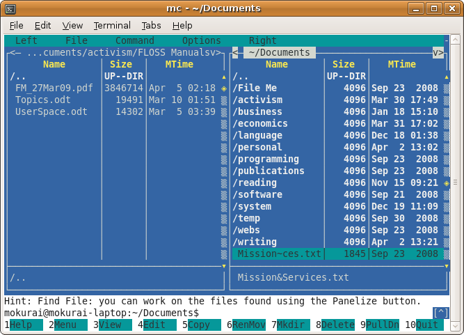
{width="600" height="450"}You can navigate using either the mouse or the keyboard. Tab moves you to the other panel. The Insert key highlights files and directories for actions such as copy, rename, move, and delete, which you can see on the function key buttons, or for various commands on the pull-down menus.
The Left and Right menus let you change views to give different information, to enter a regular expression that determines which files to display, or to sort in a different order, among other things. You can invoke FTP from either of these menus, and use Midnight Commander\'s file commands to upload and download files. The File menu includes commands such as chmod and chown, with a visual dialog for selecting options and on-screen help, as shown in the screenshot below.
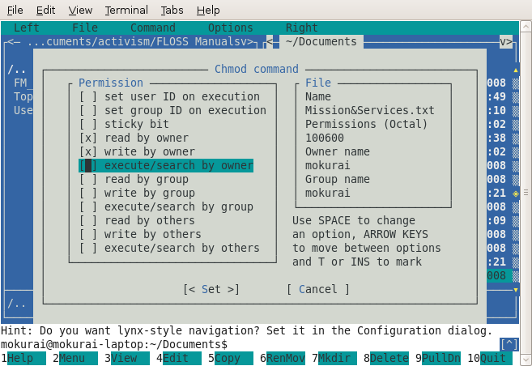
{align="left" width="657" height="452"}The Commander provides hints, as in the screenshot above, to alert you to useful functions that you might not discover on your own. This one is particularly useful. Setting this configuration option lets you use the left and right arrow keys to navigate between directories, in the same way that Lynx lets you navigate URLs. There are a great many more configuration options available.\
You can set and access bookmarks on a Directory Hotlist within your file system using the Ctrl + \ key combination, or by selecting the list on the Commands menu. The dialog lets you create and navigate between named bookmark lists.
There is a great deal more to Midnight Commander, of course. You can learn about other functions in the Help dialog (F1).\
emacs, vi, nano, pico
There is a wide choice of text editors to serve a variety of needs. One of the most venerable is Emacs (originally Editing Macros; jocularly Escape, Meta, Alt, Control, Shift, for its profusion of keyboard commands), written in LISP, with the ability to add commands in LISP, and to change any key bindings for commands. It includes the ability to run external commands, including mail and news (Usenet) readers and compilers, so some users do everything from emacs. Some prefer vi (visual editor), which has a similar ability to add commands and change key bindings, but does not replace the command line for its users. Others still, including most of those who do not program for a living, prefer simpler editors such as nano and pico.
In each case, one can invoke an editor and have it load up a file ready to edit in the form
$ editor filename
Consult specific program documentation for other command-line options and for editing commands and the rest. For example,\
http://www.gnu.org/software/emacs/ \
http://www.ccsf.edu/Pub/Fac/vi.html
http://www.itd.umich.edu/itcsdocs/r1168/ \
pr
This adds titles and page numbers to your text files.\
$ pr /etc/sendmail.cf | less
Keep pressing enter to watch the file go past slowly. You can also use Page Up and Page Down keys, and arrow keys.
lpr
prints a file. Useful for plain text, and can print some other formats (notably PostScript and PDF) if the system has printer drivers that understand those formats.
$ lpr .profile
split
Suppose you have a 600MB ISO file you\'d like to split into several pieces for easier storage. You can do so with:
$ split -b 200m image.iso image_iso_
This example generates three files named image.iso_aa, image.iso_ab, and image.iso_ac, each 200MB in size. If you want to join them again, use the command:
$ cat image.iso_* > new-image.iso
Remember, the more you practice, the easier and more efficient you can work. Experiment with these commands --the only way to get better at using them is practice! :::
About This Manual
This manual was initially written at the first edition of the GNU/Linux conference LibrePlanet which was hosted at the Harvard Science Center, Cambridge, MA, on March 21-22, 2009. LibrePlanet conferences are part of the LibrePlanet project, started in 2006, whose mission is to help further the ideals surrounding the free software via a social movement for user freedom organized as a global network of local teams and project-based ones.
{width="360" height="42"}
The LibrePlanet conference 2009 was sponsored by the Free Software Foundation (FSF) and organized into three tracks, free software activism, freedom for network services, and high priority free software projects. The creation of this manual was part of the free software activism track, and a collaboration between FLOSS Manuals and the FSF. The book sprint was organized by Andy Oram and Adam Hyde, with assistance from Peter Brown, Deb Nicholson and Danny Clark.
There was a good turnout for the event. For the first time, a FLOSS Manuals book sprint had more authors participating remotely than physically. On the second day of LibrePlanet, and as part of the un-conference schedule, there were 4-5 people working regularly on site.
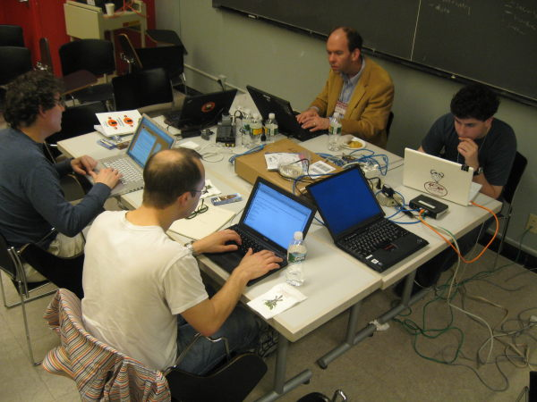
{width="600" height="450"}Big shout out to Tom Boyle for going tip to toe copy editing :)\
This manual has been written within FLOSS Manuals. This manual can be improved by you. To improve this manual follow these steps:
Register
Register at FLOSS Manuals:\ http://booki.flossmanuals.net/accounts/signin/?redirect=/{target="_blank"}
Contribute!
Select the manual (http://en.flossmanuals.net/bin/view/CommandLineIntro{target="_blank"}) and a chapter to work on.\
If you need to ask us questions about how to contribute then join the chat room listed below and ask us! We look forward to your contribution!
For more information on using FLOSS Manuals you may also wish to read our manual:\ http://en.flossmanuals.net/FLOSSManuals{target="_blank"}
You may wish to also look at the Outline at the end of the book. This is a guide as to how the manual might be extended. Feel free to change the outline and improvise!
http://en.flossmanuals.net/command-line/outline/{target="_blank"}\
Chat
It\'s a good idea to talk with us so we can help co-ordinate all contributions. We have a chat room embedded in the FLOSS Manuals website so you can use it in the browser.\
If you know how to use IRC you can connect to the following:\ server: irc.freenode.net\ channel: #flossmanuals
Mailing List
For discussing all things about FLOSS Manuals join our mailing list:\ http://lists.flossmanuals.net/listinfo.cgi/discuss-flossmanuals.net{target="_blank"}
Translation
If you would like to translate this manual, let us know, because we have a very good system to enable translations. To start a translation join the mailing list (listed above) and send an email telling us which language you would like to translate the manual into. \ :::
License
All chapters copyright of the authors (see below). Unless otherwise stated all chapters in this manual licensed with the Free Documentation License.
This documentation is free documentation; you can redistribute it and/or modify it under the terms of the GNU Free Documentation License as published by the Free Software Foundation; either version 1.3 of the License, or (at your option) any later version.
This documentation is distributed in the hope that it will be useful, but WITHOUT ANY WARRANTY; without even the implied warranty of MERCHANTABILITY or FITNESS FOR A PARTICULAR PURPOSE. See the GNU Free Documentation License for more details.
You should have received a copy of the GNU Free Documentation License along with this documentation; if not, write to the Free Software Foundation, Inc., 51 Franklin Street, Fifth Floor, Boston, MA 02110-1301, USA.
Authors
Some material taken from the great manual by Gareth Anderson :
http://tldp.org/LDP/GNU-Linux-Tools-Summary/html/{target="_top"}
and from :
http://www.gnu.org/software/bash/manual/bashref.html{target="_top"}
ABOUT THIS MANUAL: © Free Software Foundation 2009\ Modifications:\ adam hyde 2009, 2010\ Carolyn Anhalt 2009\ Daniele de Rigo 2010\ Peter Brown 2009\ Scott Walck 2009\ Tom Boyle 2009\ Viktor Becher 2009\ William Abernathy 2009\ douglas 2010\
AWK: © Viktor Becher 2009\ Modifications:\ adam hyde 2009\ Andy Oram 2009\ David Fernández Piñas 2009\ Edward Cherlin 2009\ Freaky Clown 2009\ TWikiGuest 2010\ Tom Boyle 2009\ Vitor Baptista 2009\ douglas 2010\
BASIC COMMANDS: © Free Software Foundation 2009\ Modifications:\ adam hyde 2009\ Andy Oram 2009\ Ben Woodacre 2009\ Daniele de Rigo 2009\ Dennis Kibbe 2009\ edoardo batini 2009\ Freaky Clown 2009\ Marc Mengel 2009\ Marcelo Magallon 2009\ Max Newell 2009\ Peter Davies 2009\ Sameer Thahir 2009\ Steffen Schaumburg 2009\ sylvain charzat 2009\ TWikiGuest 2010\ Tadeus Prastowo 2009\ Tom Boyle 2009\ William McConnaughey 2009\ douglas 2010\
BEGINNING SYNTAX: © Free Software Foundation 2009\ Modifications:\ adam hyde 2009\ Andy Oram 2009\ Aputsiaq Niels Janussen 2009\ Ben Weissmann 2009\ Colin Williams 2009\ Daniele de Rigo 2009\ Edward Cherlin 2009\ Jason Woof 2009\ Johannes Becher 2009\ Leif Biberg Kristensen 2009\ Marc Mengel 2009\ Marcelo Magallon 2009\ Peter Davies 2009\ Tom Boyle 2009\ Viktor Becher 2009\ William McConnaughey 2009\ William Merriam 2009\
CHECKING EXIT: © Free Software Foundation 2009\ Modifications:\ adam hyde 2009\ Andy Oram 2009\ Daniele de Rigo 2009\ Edward Cherlin 2009\ Jason Woof 2009\ TWikiGuest 2010\ Tim Goh 2009\ Tom Boyle 2009\ douglas 2010\
COMMAND HISTORY: © Gareth Anderson 2009\ Modifications:\ adam hyde 2009\ Andy Oram 2009\ Edward Cherlin 2009\ Federico Lucifredi 2009\ Freaky Clown 2009\ hari raj k 2009\ Steffen Schaumburg 2009\ TWikiGuest 2010\ Tim Goh 2009\ Tom Boyle 2009\ douglas 2010\
INTERACTIVE EDITING: © Viktor Becher 2009\ Modifications:\ adam hyde 2009\ Andy Oram 2009\ Dennis Kibbe 2009\ Siddharth Ravikumar 2010\ TWikiGuest 2010\ Tom Boyle 2009\ William McConnaughey 2009\ douglas 2010\
COMMAND QUICKIE: © Free Software Foundation 2009\ Modifications:\ adam hyde 2009\ Andy Oram 2009\ Edward Cherlin 2009\ Freaky Clown 2009\ John Sullivan 2009\ S. Lockwood-Childs 2009\ TWikiGuest 2010\ Tom Boyle 2009\ douglas 2010\
MAKING YOUR OWN INTERPRETER: © William McConnaughey 2009
CREDITS: © adam hyde 2006, 2007, 2009
CUSTOMISATION: © Steve Revilak 2009\ Modifications:\ adam hyde 2009\ Andy Oram 2009\ Edward Cherlin 2009\ Freaky Clown 2009\ John Sullivan 2009\ TWikiGuest 2010\ Tom Boyle 2009\ Vitor Baptista 2009\ William McConnaughey 2009\ douglas 2010\
CUT DOWN ON TYPING: © Free Software Foundation 2009\ Modifications:\ adam hyde 2009\ Andy Oram 2009\ Dennis Kibbe 2009\ hari raj k 2009\ Luigi Bai 2009\ Pierre Fortin 2009\ sylvain charzat 2009\ TWikiGuest 2010\ Tom Boyle 2009\ William McConnaughey 2009\ douglas 2010\
MOVING AGAIN: © Andy Oram 2009\ Modifications:\ adam hyde 2009\ Freaky Clown 2009\ TWikiGuest 2010\ Tom Boyle 2009\ William McConnaughey 2009\ douglas 2010\
EMACS: © Free Software Foundation 2009\ Modifications:\ adam hyde 2009\ Edward Cherlin 2009\ John Sullivan 2009\ Matt Lee 2009\ Scott Walck 2009\ TWikiGuest 2010\ Tom Boyle 2009\ Viktor Becher 2009\ William McConnaughey 2009\ douglas 2010\
FILE STRUCTURE: © adam hyde 2009\ Modifications:\ Andy Oram 2009\ Edward Cherlin 2009\ Freaky Clown 2009\ Jason Woof 2009\ John Sullivan 2009\ Julian Oliver 2009\ Marcelo Magallon 2009\ Peter Davies 2009\ TWikiGuest 2010\ Tom Boyle 2009\ William McConnaughey 2009\ douglas 2010\
GNUSCREEN: © Free Software Foundation 2009\ Modifications:\ adam hyde 2009\ Andy Oram 2009\ Daniele de Rigo 2009\ Darren Hall 2009\ Edward Cherlin 2009\ Freaky Clown 2009\ Michael Dorrington 2010\ Ntino Krampis 2009\ S. Lockwood-Childs 2009\ TWikiGuest 2010\ Tom Boyle 2009\ William McConnaughey 2009\ douglas 2010\
GEDIT: © Free Software Foundation 2009\ Modifications:\ adam hyde 2009\ Edward Cherlin 2009\ John Sullivan 2009\ TWikiGuest 2010\ Tom Boyle 2009\ douglas 2010\
GETTING STARTED: © Free Software Foundation 2009\ Modifications:\ adam hyde 2009\ Andy Oram 2009\ Barbaros Catkan 2009\ Daniele de Rigo 2009\ Edward Cherlin 2009\ Freaky Clown 2009\ John Sullivan 2009\ Matt Lee 2009\ S. Lockwood-Childs 2009\ Tom Boyle 2009\ Viktor Becher 2009\ William McConnaughey 2009\
GLOSSARY: © Dave Pawson 2009\ Modifications:\ adam hyde 2009\ Edward Cherlin 2009\ Freaky Clown 2009\ John Sullivan 2009\ Michel Barakat 2009\ Tom Boyle 2009\ Vitor Baptista 2009\
INSTALLING SOFTWARE: © Free Software Foundation 2009\ Modifications:\ adam hyde 2009\ Andy Oram 2009\ Edward Cherlin 2009\ Jarkko Oranen 2009\ John Sullivan 2009\ TWikiGuest 2010\ Tom Boyle 2009\ William McConnaughey 2009\ douglas 2010\
INTRODUCTION: © Free Software Foundation 2006\ Modifications:\ adam hyde 2006, 2007, 2009\ Andy Oram 2009\ Ben Weissmann 2009\ Freaky Clown 2009\ Michel Barakat 2009\ Peter Davies 2009\ S. Lockwood-Childs 2009\ Scott Walck 2009\ Sreeraj Nair 2009\ sylvain charzat 2009\ Tom Boyle 2009\ Viktor Becher 2009\ William Abernathy 2009\ William Merriam 2009\
KEDIT: © Free Software Foundation 2009\ Modifications:\ adam hyde 2009\ Edward Cherlin 2009\ Matt Lee 2009\ Tom Boyle 2009\ Vance Kochenderfer 2009\
MAINTAINING SCRIPTS: © Free Software Foundation 2009\ Modifications:\ adam hyde 2009\ Andy Oram 2009\ Edward Cherlin 2009\ Freaky Clown 2009\ Marcelo Magallon 2009\ Michael Gauland 2009\ TWikiGuest 2010\ Tom Boyle 2009\ Vitor Baptista 2009\ douglas 2010\
MOVING AROUND: © Free Software Founation 2009\ Modifications:\ adam hyde 2009\ Andy Oram 2009\ Edward Cherlin 2009\ Freaky Clown 2009\ Peter Davies 2009\ Steffen Schaumburg 2009\ TWikiGuest 2010\ Tadeus Prastowo 2009\ Tom Boyle 2009\ William McConnaughey 2009\ douglas 2010\
MULTIPLE FILES: © Free Software Foundation 2009\ Modifications:\ adam hyde 2009\ Andy Oram 2009\ Bernie Innoccenti 2009\ Darren Hall 2009\ Edward Cherlin 2009\ Eric Bavier 2010\ hari raj k 2009\ Kent Tenney 2009\ Luigi Bai 2009\ Marcelo Magallon 2009\ Peter Davies 2009\ Steffen Schaumburg 2009\ Tadeus Prastowo 2009\ Tom Boyle 2009\ William McConnaughey 2009\
NANO: © Free Software Foundation 2009\ Modifications:\ adam hyde 2009\ Andy Oram 2009\ Edward Cherlin 2009\ Scott Wells 2009\ sylvain charzat 2009\ TWikiGuest 2010\ Tom Boyle 2009\ William McConnaughey 2009\ douglas 2010\
OTHER LANGUAGES: © Andy Oram 2009\ Modifications:\ adam hyde 2009\ Edward Cherlin 2009\ John Sullivan 2009\ TWikiGuest 2010\ Tom Boyle 2009\ douglas 2010\
OUTLINE: © Andy Oram 2009\ Modifications:\ adam hyde 2009\ Edward Cherlin 2009\ TWikiGuest 2010\ douglas 2010\
PARAMETER SUBSTITUTION: © Free Software Foundation 2009\ Modifications:\ adam hyde 2009, 2010\ Andy Oram 2009\ Darren Hall 2009\ Freaky Clown 2009\ Jason Woof 2009\ Michael Gauland 2009\ TWikiGuest 2010\ Tom Boyle 2009\ Viktor Becher 2009\ douglas 2010\
PERL: © Free Software Foundation 2009\ Modifications:\ adam hyde 2009\ Andy Oram 2009\ Darren Hall 2009\ Edward Cherlin 2009\ Stephen Compall 2009\ TWikiGuest 2010\ Tom Boyle 2009\ William McConnaughey 2009\ douglas 2010\
PERMISSIONS: © Andy Oram 2009\ Modifications:\ adam hyde 2009\ Daniel Kahn Gillmor 2009\ Freaky Clown 2009\ TWikiGuest 2010\ Tom Boyle 2009\ William McConnaughey 2009\ douglas 2010\
PIPING: © Free Software Foundation 2009\ Modifications:\ adam hyde 2009\ Andy Oram 2009\ Edward Cherlin 2009\ Leif Biberg Kristensen 2009\ TWikiGuest 2010\ Tom Boyle 2009\ Vance Kochenderfer 2009\ William McConnaughey 2009\ douglas 2010\
PROCESSES: © Free Software Foundation 2009\ Modifications:\ Edward Cherlin 2009\ TWikiGuest 2010\ Tom Boyle 2009\ William McConnaughey 2009\ douglas 2010\
PYTHON: © Free Software Foundation 2009\ Modifications:\ adam hyde 2009\ Austin Martin 2009\ Freaky Clown 2009\ Scott Walck 2009\ TWikiGuest 2010\ Tom Boyle 2009\ William McConnaughey 2009\ douglas 2010\
REDIRECTION: © Free Software Foundation 2009\ Modifications:\ Andreas Jonsson 2009\ Daniele de Rigo 2009\ Edward Cherlin 2009\ TWikiGuest 2010\ Tadeus Prastowo 2009\ Tom Boyle 2009\ William McConnaughey 2009\ douglas 2010\
REGULAR EXPRESSIONS: © Andy Oram 2009\ Modifications:\ adam hyde 2009\ Darren Hall 2009\ Edward Cherlin 2009\ Freaky Clown 2009\ TWikiGuest 2010\ Tom Boyle 2009\ douglas 2010\
RUBY: © Free Software Foundation 2009\ Modifications:\ adam hyde 2009\ Ben Weissmann 2009\ Edward Cherlin 2009\ Freaky Clown 2009\ TWikiGuest 2010\ Tom Boyle 2009\ Vitor Baptista 2009\ Xie Haichao 2009\ douglas 2010\
SED: © Freaky Clown 2009\ Modifications:\ adam hyde 2009\ Andy Oram 2009\ Darren Hall 2009\ Edward Cherlin 2009\ TWikiGuest 2010\ Tom Boyle 2009\ William McConnaughey 2009\ douglas 2010\
SSH: © Free Software Foundation 2009\ Modifications:\ adam hyde 2009\ Andy Oram 2009\ Daniele de Rigo 2009\ Freaky Clown 2009\ Scott Walck 2009\ TWikiGuest 2010\ Tom Boyle 2009\ douglas 2010\
SCRIPTING: © Free Software Foundation 2009\ Modifications:\ adam hyde 2009\ Andy Oram 2009\ Beth Skwarecki 2009\ edoardo batini 2009\ Max Newell 2009\ Ole Tange 2010\ TWikiGuest 2010\ Tom Boyle 2009, 2010\ William McConnaughey 2009\ douglas 2010\
SEARCHING FOR FILES: © Free Software Foundation 2009\ Modifications:\ Luigi Bai 2009\ Tom Boyle 2009\
STANDARD FILES: © Free Software Foundation 2009\ Modifications:\ adam hyde 2009\ Andy Oram 2009\ Dev Devarajan 2009\ Edward Cherlin 2009\ Freaky Clown 2009\ Marc Mengel 2009\ Michael Gauland 2009\ Michel Barakat 2009\ TWikiGuest 2010\ Tom Boyle 2009\ Viktor Becher 2009\ Vitor Baptista 2009\ William McConnaughey 2009\ douglas 2010\
SUB COMMANDS: © Free Software Foundation 2009\ Modifications:\ adam hyde 2009\ Andy Oram 2009\ Edward Cherlin 2009\ Freaky Clown 2009\ John Sullivan 2009\ TWikiGuest 2010\ Tom Boyle 2009\ William McConnaughey 2009\ douglas 2010\
SUPERUSERS: © Andy Oram 2009\ Modifications:\ adam hyde 2009\ Edward Cherlin 2009\ John Sullivan 2009\ TWikiGuest 2010\ Tom Boyle 2009\ William McConnaughey 2009\ douglas 2010\
TEXT EDITORS: © Free Software Foundation 2009\ Modifications:\ adam hyde 2009\ Andy Oram 2009\ Edward Cherlin 2009\ John Sullivan 2009\ mike mcneely 2009\ Renato Golin 2009\ Tom Boyle 2009\
VIM: © Free SOftware Foundation 2009\ Modifications:\ adam hyde 2009\ Andy Oram 2009\ Freaky Clown 2009\ John Sullivan 2009\ Julian Oliver 2009\ TWikiGuest 2010\ Tom Boyle 2009\ douglas 2010\
\
~Free\ manuals\ for\ free\ software~